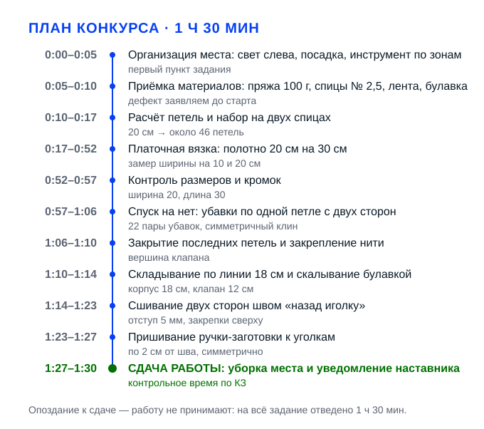
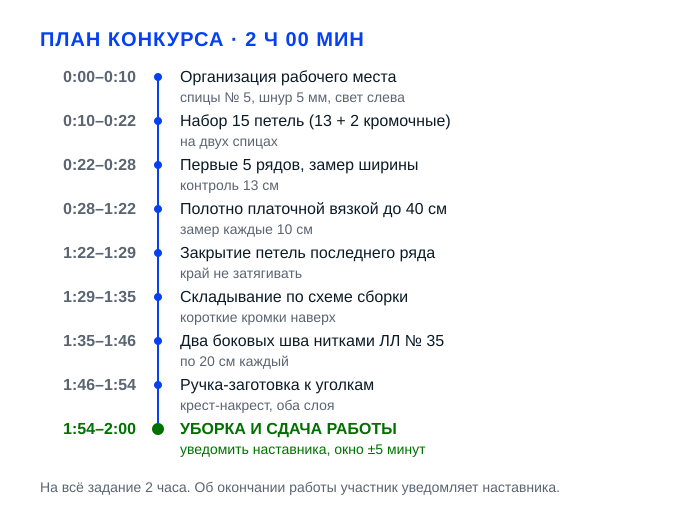
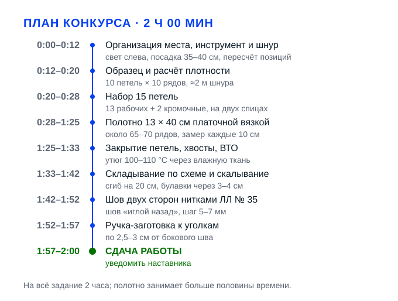

Изготовление вязаного изделия (ФВ)
Задания ниже — официальные файлы «Абилимпикс» (источник: abilympics-russia.ru), разложенные по категориям. Решения написаны по тексту задания, регламенту и критериям оценки; в них указано, что именно проверяет эксперт.
Школьник
14–16 лет, базовый уровень заданияВ официальном файле категории не разделены отдельными разделами — приводим задание целиком; различия по категориям смотрите в таблице модулей.
Пошаговое решение
Задание для школьников укладывается в полтора часа и состоит из семи пунктов: организовать рабочее место, связать прямоугольник 20 на 30 сантиметров платочной вязкой, закончив его спуском на нет с каждой стороны по одной петле, сложить прямоугольник, сшить две стороны, пришить к уголкам ручку-заготовку, убрать стол и уведомить наставника. Работают на двух спицах № 2,5 трикотажной пряжей состава 50 процентов шерсти и 50 процентов акрила, моток в 100 граммов, и результат сверяют с образцом целиком, а не по частям. Теряют баллы не на узоре — платочная вязка проста, — а на расчёте петель, из-за которого ширина уходит с 20 сантиметров, на неровной кромке, которая потом превращается в кривой шов, и на времени: на сборку и ручку остаётся меньше двадцати минут. Ниже задание разложено на шесть задач и сорок восемь шагов в том порядке, в котором их выполняют на площадке.

Задача 1. Организовать рабочее место и принять материалыПервые 10 минут из 1 ч 30 мин
Первый пункт конкурсного задания звучит буднично — «организовать рабочее место», — но именно он задаёт темп всей работы. По КЗ на всё задание отведено полтора часа, и изделие в конце сверяют с образцом целиком: и полотно, и швы, и посадку ручки. Если пряжа лежит на коленях, лента потерялась, а лампа стоит справа и бросает тень на полотно, вы теряете не минуты, а ряды: платочная вязка не прощает пауз на поиск инструмента, потому что сбитый ритм сразу виден по кромке. Поэтому сначала стол, свет и посадка, потом приёмка материалов по перечню из раздела 3.1 КЗ, и только после этого спицы в руки.
Действие 1.1. Подготовить стол, свет и посадку
Шаг 1.1.1
Освобождаем стол полностью: на рабочей поверхности не должно остаться ничего, кроме будущего полотна. Раскладываем зоны так, чтобы к каждой можно было дотянуться не вставая. По центру, на расстоянии ладони от края, — место под вязание; справа ставим пластиковый контейнер с двумя парами спиц № 2,5, ножницами, иглой для сшивания, нитками л/л, булавкой и сантиметровой лентой; слева, у самого края, — моток пряжи; корзину для мусора ставим справа на полу, чтобы обрезки летели в неё, а не на стол.
Пункт 1 задания прямо требует организовать рабочее место, и это не формальность: по ходу работы вам семь раз понадобится то лента, то булавка, то ножницы, и каждый поиск — это брошенное полотно. Разложенные зоны дают главное, что нужно на полутора часах, — непрерывность: рука сама находит инструмент, глаза остаются на петлях, ритм не сбивается.
Проверьте просто: сядьте на стул, положите руки на стол и попробуйте дотянуться до ножниц, ленты и мотка, не вставая и не поворачиваясь корпусом. Всё должно оказаться в пределах вытянутой руки. Середина стола перед вами — пустая, свободная площадка не меньше листа А4 под само полотно.
Самая частая ошибка — оставить на столе пенал, телефон, стакан: полотно шириной 20 см быстро упирается в них, и вы начинаете вязать на весу, кромка идёт волной. Вторая — сложить всё в одну кучу справа: булавка уходит под моток, и первые пять минут уборки в конце вы тратите на поиск собственного инструмента.
Эксперт проходит по площадке в первые минуты и смотрит именно на это: свободен ли стол, разложен ли инструмент по местам, есть ли контейнер. Беспорядок в начале он фиксирует как нарушение пункта 1, а дальше смотрит, поддерживается ли порядок.
Шаг 1.1.2
Ставим настольную лампу слева от полотна и чуть впереди, наклоняем абажур так, чтобы свет ложился на работу под углом примерно 45 градусов, а тень от рук уходила вправо, за пределы полотна. Садимся так, чтобы спина касалась спинки стула, ступни стояли на полу, а расстояние от глаз до петель было 35–40 см — это ровно расстояние от локтя до кончиков пальцев. Лампу включаем сразу, до того как взяли спицы: при боковом свете справа петли сливаются в сплошную полосу.
Требования охраны труда в разделе 5.1 КЗ перечисляют это буквально: место должно быть хорошо освещено, свет падает на работу с левой стороны, сидеть прямо, касаясь спинки стула, расстояние от глаз до работы не менее 35–40 см. Для участников с нарушением зрения КЗ требует равномерного освещения не менее 300 люкс. Платочная вязка — лицевые петли одного цвета: при плохом свете спущенную петлю видно через два ряда, когда исправлять уже поздно.
Посмотрите на полотно, положив на него линейку: тени от пальцев не должны падать на петли, блик от лампы — не бить в глаза. Проверьте посадку по трём точкам: спина на спинке, локти чуть ниже стола, глаза на расстоянии вытянутой руки от спиц. Если приходится наклоняться к работе — лампа или стул стоят неверно.
Типичная ошибка — поставить лампу справа, потому что там розетка: тень от правой руки ложится точно на рабочую зону, и ученик начинает поднимать полотно к глазам, теряя посадку. Вторая — вязать, наклонившись к столу: через полчаса болит шея, темп падает вдвое, а полотно всё равно идёт с перекосом.
Смотрит на посадку и свет в самом начале и возвращается к этому взгляду в середине конкурса: держит ли участник спину, не подносит ли полотно к лицу. Это пункт охраны труда, он оценивается наравне с техникой.
Шаг 1.1.3
Достаём из контейнера обе пары спиц № 2,5 и проверяем каждую: кончики ровные, без заусенцев, на стыке лески нет шероховатости, номера на обеих спицах пары совпадают. Ножницы пробуем на обрезке пряжи — должны резать, а не жевать нить. Иглу для сшивания проверяем на свет: ушко целое, острие не погнуто. Булавку расстёгиваем и застёгиваем один раз — пружина должна держать. Всё неисправное сразу откладываем в сторону и просим замену.
Раздел 5.1 КЗ говорит прямо: если инструменты или материалы неисправны или имеют дефект, предполагается их замена. На практике заусенец на кончике спицы цепляет трикотажную пряжу и вытягивает из неё дорожку, а тупая игла для сшивания рвёт нить при стягивании шва. Обе поломки обнаруживаются посреди работы, когда перевязать уже нельзя, а времени на замену и переделку нет.
Проведите подушечкой пальца по кончику спицы и по стыку — палец не должен цепляться. Ножницы должны оставить на обрезке чистый срез без «бороды». Если хотя бы один инструмент не прошёл проверку, он должен лежать не в контейнере, а отдельно, до замены.
Взять спицы «на глаз», не проверяя номера: в наборе из двух пар легко смешать 2,5 и 3,0, и тогда половина полотна окажется шире другой — разница в плотности на 20 см даёт до двух сантиметров перекоса, и изделие перестаёт совпадать с образцом. Вторая ошибка — работать погнутой иглой и порвать нитку у самого шва.
Эксперт может подойти и проверить соответствие инструмента перечню: спицы № 2,5, две пары. Спицы другого номера — это уже отклонение от задания, даже если изделие связано аккуратно.
Шаг 1.1.4
Кладём моток слева от полотна, но не на голый стол: подкладываем лист бумаги или ставим моток в контейнер так, чтобы он мог свободно разматываться, а не кататься по столешнице. Хвост пряжи выпускаем из мотка на 20–30 см и оставляем лежать слева, не наматывая на палец. Ножницы кладём с сомкнутыми лезвиями справа, кольцами к себе, ленту — поперёк стола перед собой. Контейнер закрываем, кроме того инструмента, который нужен в ближайшие полчаса.
Пряжа, которая катается по столу, тянет полотно за собой: натяжение меняется от ряда к ряду, и кромка идёт волной. Сомкнутые лезвия — прямое требование раздела 5.1 КЗ, и оно же экономит время: открытые ножницы цепляют нить и режут её там, где не надо. Моток в контейнере не даёт пряже пылиться и путаться, а на полутора часах работы распутывание узла — это потеря целого ряда-двух.
Потяните за хвост: моток должен раскручиваться плавно, без рывка, нить идёт одной струной и не цепляет соседние витки. Ножницы лежат лезвиями к столу, лента под рукой. Если пряжа выходит с узелком — узелок лучше сразу перевести в начало работы, а не оставлять на середину полотна.
Поставить моток на колени или на пол: пряжа тянется вниз, натяжение полотна растёт, и через десять рядов ширина уходит с 20 до 18 сантиметров. Вторая ошибка — намотать пряжу на палец: рука потеет, нить тянется неравномерно, и на полотне появляются полосы разной плотности, которые уже не исправить.
Отмечает, как организовано рабочее место и соблюдаются ли правила безопасности с ножницами: лезвия сомкнуты, инструмент не лежит на краю стола. Это входит в оценку организации работы.
Действие 1.2. Принять и проверить материалы по перечню
Шаг 1.2.1
Разворачиваем моток и читаем этикетку: трикотажная пряжа, 50% шерсть и 50% акрил, 100 граммов. Проверяем пряжу руками — полотно трикотажной ленты должно быть одинаковой ширины по всей длине, без утолщений, без свалявшихся участков, без узлов чаще одного на метр. Отмеряем лентой полметра и смотрим, держится ли ширина: у хорошей пряжи она не гуляет больше, чем на миллиметр. Найденные узелки и утолщения отмечаем пальцами и не срезаем.
Перечень материалов в разделе 3.1 КЗ фиксирует ровно эти характеристики — состав и вес, — и по ним оценивают, работает ли участник с выданным материалом, а не с принесённым из дома. Утолщение на ленте провязывается плотнее и даёт бугор на лицевой стороне; на клатче, который рассматривают вблизи, такой бугор виден сразу. Проверка занимает две минуты и снимает половину причин брака.
Разложите полтора метра пряжи на столе и посмотрите вдоль: лента должна лежать ровной полосой, без «колбасок». Моток на весах или на ощупь — плотный, не размотанный в паутину. Если узлов больше двух на моток, это повод сказать эксперту до старта работы.
Начать вязать прямо с мотка, не развернув его: узлы и утолщения оказываются в случайных местах, а один узел посреди полотна — это уже дефект, который на образце не предусмотрен. Вторая ошибка — обрезать утолщение и связать концы: на трикотажной пряже такой стык расползается под нагрузкой, и после сшивания шов расходится.
Смотрит, работает ли участник с выданной пряжей и не пытается ли заменить её своей. Отдельно фиксирует, заявлен ли дефект материала до начала работы: после старта претензию не примут.
Шаг 1.2.2
Сверяем остальной набор с перечнем раздела 3.1 построчно: сантиметровая лента — одна, ножницы — одни, игла для сшивания вязаных изделий — одна, нитки л/л — катушка, булавка английская металлическая — одна, заготовка ручки для сумки — одна штука. Заготовку осматриваем сразу: она должна быть ровной, без потёртостей и перекрутов, с целым покрытием на концах. Всё проверенное укладываем в контейнер и больше оттуда не вынимаем до нужного момента.
Ручка-заготовка пришивается в самом конце, на последних минутах, и если она окажется перекошенной или с треснувшим концом, исправить это будет нечем: замена после старта идёт только через главного эксперта. Игла для сшивания и нитки л/л нужны именно в паре — трикотажную пряжу сшивают прочной ниткой в тон, и если нитки не того номера, шов получается грубым и стягивает край.
В контейнере должно лежать ровно столько предметов, сколько строк в перечне, и все — целые. Заготовку ручки приложите к столу: она не должна качаться и иметь заметной кривизны. Булавка застёгнута и держит пружиной, а не за счёт погнутого замка.
Пропустить сверку и обнаружить отсутствие булавки в момент складывания прямоугольника: без неё сколоть слои нечем, и полотно сдвигается во время сшивания на сантиметр-полтора. Вторая ошибка — не заметить, что заготовка ручки короче нужного: петля для кисти получается тугой, и изделие перестаёт совпадать с образцом.
При приёмке эксперт держит в голове тот же перечень и отмечает недостачу или дефект материала в протоколе. Если участник заявил о проблеме сразу, это не считается его ошибкой; если промолчал — считается.
Шаг 1.2.3
Найденный дефект — узел, утолщение, кривая заготовка, тупая игла — показываем эксперту до начала работы, коротко и по делу: что именно, где, в каком количестве. Формулировка должна быть точной: не «пряжа плохая», а «в мотке три узла на первом метре и утолщение у кромки». Если замену не дают, принимаем решение сами и озвучиваем его: узел выводим на кромку, утолщение оставляем на изнанке, кривую заготовку разворачиваем другой стороной.
Правило простое: до старта вопрос решается, после старта — фиксируется. Кроме того, спокойное и точное обращение входит в оценку организации работы и коммуникации: эксперт видит, умеет ли участник описать проблему фактами. Молчание же означает согласие с набором, и дальше дефект материала будет записан как дефект изделия — то есть в минус вам.
После разговора у вас есть ясный ответ: либо замена, либо разрешение работать с этим материалом. Если разрешение получено, проговорите про себя план: где именно окажется проблемный участок, чтобы он не попал на лицевую сторону клапана.
Промолчать, а потом в середине работы начать объяснять, что пряжа была с браком: время уйдёт, а балл за аккуратность всё равно снимут. Обратная ошибка — спорить и требовать новый моток, когда дефект незначительный: на это уходят минуты, которых в полутора часах нет.
Слушает формулировку и оценивает, насколько участник владеет ситуацией: называет ли он факты, предлагает ли решение. Это отдельный, но заметный штрих в оценке.
Задача 2. Рассчитать полотно и набрать петлиМинуты 10–17 из 1 ч 30 мин
В задании для школьников, в отличие от категории студентов, количество петель не задано: сказано только «прямоугольник шириной 20 см, длиной 30 см платочной вязкой». Значит, число петель вы определяете сами, и цена ошибки здесь максимальная — набрали на десять петель больше, и полотно выйдет 23 сантиметра вместо 20, а перевязывать в полутора часах нечем. Поэтому сначала короткий расчёт: несколько сантиметров пробного полотна, замер плотности и только потом длинный наборный ряд. Набор на двух сложенных спицах даёт эластичный край, который потом станет верхом клатча и не будет стягивать изделие.
Действие 2.1. Определить плотность и посчитать петли
Шаг 2.1.1
Набираем на одну спицу № 2,5 двадцать петель и вяжем платочной вязкой десять рядов — все петли лицевые и в лицевых, и в изнаночных рядах. Затем кладём полотно на стол, не растягивая, и измеряем лентой ширину посередине: от середины первой петли до середины последней. Делим сантиметры на двадцать и получаем плотность — сколько петель приходится на один сантиметр. Замер повторяем в трёх местах и берём среднее значение.
Без замера плотности число петель берут «как у всех», и на трикотажной пряже это почти всегда мимо: одна и та же пряжа у двух участников даёт разную ширину, потому что натяжение нити у всех своё. Критерий здесь прямой — ширина 20 сантиметров, её измеряют лентой на изделии, а не на глаз. Десять рядов вяжутся за две-три минуты, и это единственная страховка от перевязывания всей детали.
Плотность должна получиться в пределах от 1,8 до 2,5 петли на сантиметр — это обычный разброс для трикотажной ленты на спицах № 2,5. Если вышло меньше 1,5 или больше трёх, проверьте, не растянули ли вы полотно при замере и точно ли спицы № 2,5, а не соседние по номеру.
Мерить полотно, растянув его за кромки: лента показывает 12 сантиметров вместо 10, плотность занижается, и набрать вы решите на восемь петель меньше — изделие выйдет узким, а клапан не закроет корпус. Вторая ошибка — измерить только что связанный, ещё не отлежавшийся ряд: свежее полотно всегда шире.
Наблюдает, делает ли участник пробный замер вообще. Отсутствие расчёта — типичный признак, по которому потом объясняют несоответствие размерам: эксперт видит, что размеры взяты на глаз.
Шаг 2.1.2
Считаем рабочие петли по формуле: плотность умножаем на двадцать сантиметров и прибавляем две кромочные. Например, при плотности 2,2 петли на сантиметр получается 44 плюс 2, то есть 46 петель. Число округляем до чётного, чтобы убавки при спуске на нет делились поровну. Результат записываем на листе или на этикетке мотка — не держим в голове, потому что пересчитывать придётся ещё не раз.
Кромочные петли входят в набор, но не входят в ширину полотна: они образуют боковой край, за который потом сшивают изделие. Если их не учесть, полотно выйдет на сантиметр уже, и это ровно та разница, которая видна при сверке с образцом. Чётное число нужно для симметричного спуска: по одной петле с каждой стороны, и в конце должно остаться ровно две петли, а не одна с половиной.
Проверьте расчёт обратным счётом: число рабочих петель делим на плотность и должны получить ровно 20 сантиметров плюс-минус два миллиметра. Если получается 19 или 21, округление сделано не в ту сторону.
Забыть про кромочные и набрать 44 петли вместо 46: край получается затянутым, при сшивании боковые стороны стягиваются, и клатч перекашивается набок. Вторая ошибка — взять нечётное число: при спуске на нет последняя петля остаётся одна, и вершина клина выходит косой.
Сверяет ширину готового полотна с заявленными 20 сантиметрами и смотрит на кромку: ровная, не стянутая. По ней видно, считал участник петли или набирал наугад.
Шаг 2.1.3
Считаем длину: тридцать сантиметров умножаем на плотность по вертикали. Для этого на пробном полотне считаем ряды: если десять рядов дали 4,5 сантиметра, то на сантиметр приходится 2,2 ряда, а на тридцать сантиметров — около 66 рядов. Дальше раскладываем время: на всё полотно остаётся примерно 35 минут, значит, на ряд уходит не больше тридцати секунд. Число рядов записываем рядом с числом петель.
Полтора часа — жёсткий лимит, и он задаёт темп, а не наоборот. Если считать ряды и время заранее, вы видите, где отстаёте, ещё на середине, а не за десять минут до сдачи. Практика простая: при 66 рядах и 35 минутах каждый лишний перерыв на минуту — это два недовязанных ряда, а два ряда на тридцати сантиметрах — это заметная нехватка длины.
Проверьте арифметику на контрольных точках: через 10 минут после начала полотно должно быть примерно 9 сантиметров в длину, через 20 — 18, через 30 — 27. Если к первой контрольной точке вышли 6 сантиметров, темп надо поднимать сразу, а не надеяться догнать в конце.
Считать только петли и не думать о рядах: полотно вяжется ровно, но к моменту сдачи ему не хватает пяти сантиметров, и клапан получается коротким. Вторая ошибка — гнать темп в ущерб плотности: ряды становятся рыхлыми, и разница в плотности видна на просвет.
Следит за темпом по ходу конкурса и отмечает, укладывается ли участник в контрольные точки. Работа, сданная с недовязанным полотном, оценивается как незавершённая.
Шаг 2.1.4
Прикидываем расход пряжи: на полотно 20 на 30 сантиметров уходит примерно две трети мотка в 100 граммов, остаток нужен на закрепление нити и запас на узелки. Пробное полотно в двадцать петель после замера не выбрасываем, а распускаем и пускаем в работу: пряжи в обрез, и десять сантиметров ленты могут оказаться решающими. Если видно, что моток тоньше обычного, уменьшаем длину клапана, но не ширину корпуса.
Трикотажная пряжа не сращивается незаметно: узел на лицевой стороне — это дефект, а кончиться пряжа может в самом неподходящем месте, посреди спуска на нет. Расчёт расхода заранее позволяет решить, где поставить стык: на кромке, которая уйдёт в шов. Ширину при этом не трогают никогда — именно её сверяют с образцом в первую очередь.
Положите связанное пробное полотно рядом с мотком и оцените на глаз: если пробник съел больше десятой части мотка, пряжи на полотно может не хватить. Проверьте, что после распускания пробника лента не пошла волной — распущенная трикотажная пряжа слегка волнится, это нормально, после провязывания она выпрямляется.
Оставить пробник лежать на столе: он уходит в отход, а потом выясняется, что для последнего ряда не хватает полутора метров. Вторая ошибка — начать экономить на ширине: полотно в 18 сантиметров не соответствует заданию, и это уже не отдельный дефект, а невыполненный пункт.
Смотрит на остаток мотка в конце работы. Моток, израсходованный полностью, при аккуратном изделии — признак точного расчёта; обрывки по всему столу — признак того, что расчёта не было.
Действие 2.2. Набрать петли на двух спицах
Шаг 2.2.1
Отмеряем хвост пряжи для набора: на каждую петлю уходит около трёх сантиметров, значит, на 46 петель нужно примерно 1,4 метра плюс запас на узел. Отмеряем лентой от конца ленты, а не на глаз, и складываем нить пополам в этом месте. Петлю-начало делаем простым узлом на спице, сдвигаем его к середине и подтягиваем так, чтобы он держался, но свободно ходил по спице.
Набор длинным хвостом — самый быстрый и самый эластичный, но он требует запаса нити: если хвост окажется коротким, набор придётся распустить и начинать заново, а это потеря пяти минут из девяноста. Точный расчёт хвоста — не педантизм: три сантиметра на петлю проверены на трикотажной ленте, при двух сантиметрах набор не докручивается уже на тридцатой петле.
Проверьте длину хвоста до начала набора: сложите отмеренный конец пополам и приложите к спице — он должен быть заметно длиннее будущего полотна, примерно на треть. Начальная петля сидит на спице ровно, не перекручена, узел не затянут в бараний рог.
Отмерить хвост «на глазок» и не добрать двадцать сантиметров: набор останавливается на предпоследних петлях, и спасти его можно только наращиванием, а наращивание в начале полотна даёт утолщение, которое потом окажется на самом виду — на верхнем крае клатча.
Смотрит на начало полотна: аккуратная начальная петля, край не стянут и не растянут. По первому сантиметру набора видно, владеет ли участник техникой набора вообще.
Шаг 2.2.2
Складываем две спицы № 2,5 вместе — так, как требует пункт 2.3 задания, — и набираем на них петли длинным хвостом: хвост и рабочую нить держим в левой руке, большой палец образует петлю из хвоста, указательный — из рабочей нити. Спицы вводим снизу под хвост, захватываем рабочую нить сверху и протягиваем в петлю, затем снимаем петлю с большого пальца и подтягиваем. Повторяем ровно 46 раз, считая вслух.
Набор на двух сложенных спицах даёт край, который тянется вместе с полотном: петли получаются на размер больше спицы и не зажимают верх клатча. Второй смысл — ровность: на двух спицах петли ложатся одинаковыми, без «лесенки», которая потом видна по кромке. Именно этот край станет верхним, тем, к которому пришьют ручку, поэтому он должен быть одинаковым по всей длине.
Петли на спицах лежат в один ряд, не перекручены, все обращены к вам одной стороной. Край снизу выглядит как ровная косичка, без широких петель и без затянутых узелков. Пересчитайте петли по десять, сдвигая их по спице: должно быть ровно 46.
Набирать на одну спицу, а потом растягивать край: верх клатча получается тугим, и при носке он стягивается в узкую полоску. Вторая ошибка — считать петли в конце набора, когда их уже сорок с лишним: сбиваетесь, и разница в четыре петли обнаруживается только при замере ширины через десять сантиметров.
Смотрит под прямым углом на наборный край и на то, набрано ли на две спицы, как сказано в задании. Набор на одной спице с последующим растягиванием он отличает сразу по плотности края.
Шаг 2.2.3
Вынимаем вторую спицу: берём её за кончик и аккуратно вытягиваем вдоль первой, придерживая петли пальцем, чтобы ни одна не соскочила. Петли остаются на одной спице и становятся свободнее — это и есть эффект набора на двух спицах. Сразу пересчитываем их, сдвигая по спице десятками, и записываем фактическое число: если вышло 47 или 45, это ещё можно исправить, не распуская.
Набор на двух спицах всегда даёт петли чуть крупнее, чем основной узор, поэтому после снятия второй спицы край расправляется. Пересчёт в этот момент — последняя возможность поймать ошибку дёшево: убрать или добавить петлю в наборном ряду проще, чем потом перевязывать полотно. Кроме того, при снятии спицы легко потерять петлю, и заметить это можно только сейчас.
Петли свободно ходят по спице, но не сваливаются с неё; край не скручен в жгут. Число петель совпадает с расчётным — 46. Если разница в одну петлю, добавьте или уберите её в наборном ряду, если в две и больше — распустите и наберите заново, это две минуты.
Резко выдернуть вторую спицу: несколько петель соскакивают и убегают вниз по полотну, а поймать их в наборном ряду почти невозможно — придётся распускать набор целиком. Вторая ошибка — не пересчитать петли и начать вязать: недостача четырёх петель даёт полтора сантиметра ширины, которые обнаружатся только на замере.
Проверяет число петель и то, ровно ли лежит наборный ряд. Если участник сразу пересчитал и назвал число, это видно как осознанная работа, а не как механический набор.
Шаг 2.2.4
Кладём спицу с петлями на стол, выравниваем их, чтобы все смотрели в одну сторону, и отмечаем лицевую сторону: на трикотажной пряже лицо и изнанка почти не отличаются, поэтому на наборном ряду привязываем короткий контрастный обрывок или просто запоминаем — лицо там, где косичка края смотрит на вас. Сдвигаем петли к правому концу спицы, оставив свободными пять-шесть сантиметров для первых петель.
Платочная вязка двусторонняя, и перепутать лицо с изнанкой в ней почти невозможно, но у наборного края есть верх и низ: растянутая сторона набора должна остаться снаружи. Кроме того, сдвинутые к одному концу петли дают ровное натяжение первых рядов — если растянуть их по всей спице, первый ряд пойдёт с разной плотностью и кромка начнёт заворачиваться.
Свободный конец спицы слева — пять-шесть сантиметров, все петли собраны справа и смотрят в одну сторону. Хвост набора лежит слева, не путается под полотном. Первая петля не перекручена вокруг спицы. Так ряд пойдёт ровно.
Оставить петли разбросанными по всей длине спицы: первый ряд вяжется с рывками, натяжение скачет, и левая кромка идёт фестонами. Вторая ошибка — начать вязать с длинного хвоста, то есть не с той стороны: первый же ряд затягивает набор, и верх клатча стягивается.
Обращает внимание на первый ряд: ровный он или с рывками. Рваный первый ряд он относит к технике вязания, а не к небрежности, и это отражается в оценке.
Задача 3. Связать прямоугольник 20 × 30 см платочной вязкойМинуты 17–57 из 1 ч 30 мин — самая длинная часть
Основная часть задания: полотно 20 сантиметров в ширину и 30 в длину, все петли лицевые в каждом ряду — это и есть платочная вязка, единственный узор, который упомянут в КЗ. Техника простая, и именно поэтому вся борьба идёт не с узором, а с ровностью: с одинаковым натяжением нити, прямой кромкой и выдержанными размерами. Здесь же решается вопрос времени: на 30 сантиметров полотна остаётся около 35 минут, то есть примерно ряд в тридцать секунд без остановок на поиск инструмента и разглядывание работы. Полотно, связанное с разной плотностью, при сборке поведёт, и никакой аккуратный шов этого уже не исправит.
Действие 3.1. Взять ритм платочной вязки
Шаг 3.1.1
Первый ряд вяжем так: первую петлю снимаем на правую спицу не провязывая, рабочая нить за работой; дальше все петли до конца ряда провязываем лицевыми, вводя правую спицу в петлю слева направо за переднюю стенку и вытягивая рабочую нить на себя; последнюю, сорок шестую, тоже провязываем лицевой. Снятую петлю не подтягиваем — кромка должна остаться ровной, а не собраться в узел.
Кромочные петли — это будущий шов: по ним сшивают две стороны клатча, и именно они держат форму. Снятая первая петля даёт ровный вертикальный край из одинаковых звеньев, в который удобно вводить иглу при сшивании. Если кромку затягивать, край идёт валиком, шов ложится с перекосом, и на изделии появляется стянутая полоса вдоль всего бока.
После первого ряда кромка слева выглядит как цепочка из ровных звеньев, без узлов и утолщений. Первая петля не сползла и не затянута в маленькую дырочку. В ряду ровно 46 петель — пересчитайте, пока ряд короткий.
Провязывать первую петлю как обычную: край получается рыхлым и «лесенкой», а при сшивании игла рвёт эти рыхлые звенья, и шов расходится. Обратная ошибка — снимать петлю, сильно подтянув нить: кромка собирается в гармошку, и полотно по краю уже короче, чем посередине.
Смотрит на кромку под лампой, поворачивая полотно: ровная цепочка — признак техники, рваная — признак спешки. Кромка проверяется и в конце, перед сдачей.
Шаг 3.1.2
Довязываем первый ряд до конца, разворачиваем полотно против часовой стрелки и вяжем второй ряд точно так же: первую снимаем, остальные лицевыми. И так каждый ряд до самого конца полотна — в платочной вязке нет лицевых и изнаночных рядов, все петли во всех рядах провязываются лицевыми. Рабочая нить при этом всегда остаётся за работой, а полотно поворачивается на одной и той же стороне.
Платочная вязка — единственный узор, названный в задании, и её главное свойство в том, что она двусторонняя: у клатча нет «лица» и «изнанки», клапан можно отвернуть любой стороной. Ошибка в один изнаночный ряд сразу видна как поперечная полоса-рубец, и убрать её можно только распустив до этого места. Однообразие рядов — не скука, а страховка: сбиться в узоре здесь просто негде.
Разверните полотно к свету: обе стороны должны выглядеть одинаково, как ряд мелких косичек поперёк. Ни одной гладкой полосы, ни одного рубчика не должно быть видно. Проверьте первые пять рядов, пока полотно ещё маленькое и распустить его дёшево.
Спутать ряды и провязать один ряд изнаночными «для плотности»: посреди полотна появляется горизонтальный рубец, который на клатче оказывается точно по центру клапана. Вторая ошибка — вязать, не переворачивая полотно, а разворачивая спицы в руках: петли перекручиваются, и по полотну идёт косая дорожка.
Проверяет узор на просвет и на ощупь: платочная вязка должна быть ровной и двусторонней. Любой другой узор — это отклонение от задания, даже если он выглядит наряднее.
Шаг 3.1.3
Ставим счёт: ряды считаем десятками и отмечаем каждый десятый булавкой, прикалывая её к кромке, или загибаем уголок бумажки, если булавка одна и нужна для сборки. Считать удобнее по кромке: на левом крае каждый ряд даёт одно новое звено, и десять звеньев — это десять рядов. Записываем на бумаге число провязанных рядов и время, когда сделан замер. Так счёт не сбивается.
На 30 сантиметрах полотна около 66 рядов, и сбиться в счёте — обычное дело. Без счёта нельзя понять, хватает ли темпа: вы видите только «мало связано», а не «отстаю на восемь рядов». Плюс счёт рядов нужен для спуска на нет: убавки идут ритмично, и если не знать, где вы, клин получится косым.
Число рядов на кромке совпадает с записанным. Отметка каждого десятого ряда видна и не мешает вязанию. Сделав десять рядов, вы потратили не больше пяти минут — если больше, темп надо менять, пока полотно короткое.
Считать ряды «в голове» и сбиться на третьем десятке: спуск на нет начинают не на той длине, и клапан выходит короче или длиннее образца. Вторая ошибка — прикалывать булавку в середину полотна: она оставляет затянутую петлю, которая после снятия видна как ямка на лицевой стороне.
Спрашивает, сколько связано, и по ответу видит, контролирует ли участник работу. Уверенное число рядов и сантиметров — это и есть та организация, которую оценивают отдельно от самой вязки.
Шаг 3.1.4
Проверяем натяжение на первых пяти сантиметрах: кладём полотно на стол и смотрим на просвет. Петли должны быть одинакового размера, без «дырок» между ними, а полотно — лежать плоско, не закручиваясь по краям. Если петли разного размера, ослабляем хват: спицу держим не за кончик, а чуть выше, локоть опущен, рабочая нить идёт через указательный палец свободно, без натяга.
Ровность натяжения — это и внешний вид, и размер: рыхлое полотно выходит шире расчётного, плотное — уже. На трикотажной ленте разница особенно заметна, потому что лента не пружинит, как кручёная нить. Первые пять сантиметров — единственное место, где неравномерность можно исправить без потерь: дальше придётся распускать почти всё.
На просвет нет полос из крупных или мелких петель, полотно лежит плоско, края не заворачиваются в трубочку. Замер ширины на этом участке даёт 20 сантиметров плюс-минус 3 миллиметра. Проверяйте на пяти сантиметрах, то есть примерно на десяти рядах: пока полотно короткое, распустить его дёшево, а после тридцати рядов это уже потеря пяти минут.
Держать спицу за самый кончик и подтягивать каждую петлю: полотно получается плотным и узким, ширина уходит к 18 сантиметрам, а вязать становится тяжело — петли сидят на спице намертво. Обратная ошибка — вязать совсем свободно: полотно просвечивает, швы по краю ложатся волной.
Оценивает ровность полотна как отдельное качество: на просвет и на ощупь. Полосы разной плотности он видит и на расстоянии, не разбирая петель. Отдельно он смотрит, не разной ли плотности кромка и середина.
Действие 3.2. Вести полотно до тридцати сантиметров
Шаг 3.2.1
Каждые десять сантиметров останавливаемся на пять секунд и меряем полотно лентой по середине, не растягивая: ширина должна держаться 20 сантиметров, длина расти равномерно. Замер записываем вместе со временем. Если ширина поползла — например, стала 21 сантиметр, — раскладываем полотно на столе и слегка оттягиваем в длину: трикотажная вязка поддаётся, сантиметр можно вернуть.
Промежуточные замеры нужны не для красоты: по ним видно, идёт ли полотно прямоугольником или расширяется клином. На трикотажной пряже ошибка натяжения накапливается медленно, но неумолимо, и к тридцати сантиметрам ширина может уйти на два-три сантиметра — а это уже несоответствие образцу по главному размеру.
Три замера подряд (на 10, 20 и 30 сантиметрах) дают одну и ту же ширину с разбросом не больше трёх миллиметров. Полотно лежит на столе без волн и без сборок, углы остаются близкими к прямым. Полотно при замере лежит на столе, а не висит на весу.
Мерить один раз в начале и больше не проверять: полотно незаметно расширяется, и к концу ширина составляет 22 сантиметра вместо 20 — клатч получается бесформенным, а клапан не совпадает по ширине с корпусом. Вторая ошибка — мерить, растянув полотно за кромки: замер врёт в плюс, и реальное сужение остаётся незамеченным.
Наблюдает, берёт ли участник ленту в руки по ходу работы. Замеры посередине вязки — признак того, что человек понимает, какие размеры от него ждут. Это видно сразу.
Шаг 3.2.2
Следим за пряжей: моток лежит слева и разматывается свободно, лента идёт к спицам по прямой, не задевая край стола и не перетираясь о него. Если на ленте встретился узел или утолщение, довязываем до кромки, выводим дефект в кромочную зону и только там продолжаем — либо, если пряжи с запасом, отрезаем утолщение ножницами и стыкуем концы с нахлёстом в два сантиметра, оставляя стык на изнанке.
Утолщение, попавшее в середину полотна, провязывается плотнее и даёт бугор, который на клатче виден сразу: изделие маленькое, рассматривают его вблизи. Выведенный на кромку дефект уходит в шов и исчезает. Скрученная или перетёртая лента провязывается неровно, и на полотне появляется полоса, которая не расправится ни при какой обработке.
Проведите ладонью по полотну: бугров и ямок не должно быть. На изнанке нет висящих хвостов длиннее двух сантиметров: всё лишнее отрезано ножницами, а не оторвано. Лента идёт к спицам без натяга, моток не подпрыгивает.
Провязать узел там, где он оказался: на лицевой стороне остаётся торчащий кончик, а вокруг узла петли стянуты — этот участок эксперт находит с первого взгляда. Вторая ошибка — отрывать нить руками: трикотажная лента распускается по косой и даёт махру, которая потом лезет из шва.
Осматривает полотно на предмет узлов и утолщений, проводя по нему рукой: на трикотажной ленте бугор чувствуется пальцем раньше, чем виден глазом. Узел на лицевой стороне он считает прямым минусом за качество изделия и отдельно проверяет, не пытался ли участник его подрезать или спрятать.
Шаг 3.2.3
Держим темп и посадку: каждые пятнадцать минут на пять-десять секунд опускаем руки, разводим плечи, смотрим вдаль, потом продолжаем с того же ряда. Полотно держим не на весу, а на столе или на коленях, чтобы его вес не тянул петли вниз. Спицы держим под небольшим наклоном к себе, локти прижаты к корпусу — так движение идёт от кисти, и ряд вяжется быстрее.
Полтора часа непрерывной вязки — это нагрузка на кисти и шею, и именно на середине работы темп падает у всех. Короткие паузы каждые пятнадцать минут сохраняют скорость лучше, чем один длинный перерыв, когда руки уже затекли. Полотно на весу тянет петли, и кромка вытягивается: именно так появляется «волнистый» край на готовом изделии.
Контрольная точка на 20-й минуте вязания — около 18 сантиметров длины. Если вы там, темп верный; если 14 — сокращайте паузы до минимума и вяжите ровнее, а не быстрее. Руки не немеют, спина остаётся на спинке стула.
Сидеть сгорбившись над полотном и вязать без пауз: к 40-й минуте кисть устаёт, петли идут разного размера, а полотно приходится подносить к глазам. Вторая ошибка — держать полотно на весу: кромка вытягивается, и бок клатча получается длиннее противоположного.
Отмечает посадку и организацию по ходу работы, а не только в начале. Усталая, сгорбленная поза к середине конкурса для него — сигнал, что темп взят неверно.
Шаг 3.2.4
Если петля всё-таки спустилась, не паникуем: закалываем её английской булавкой, чтобы она не убежала ниже, довязываем ряд до конца и только потом возвращаемся. Спущенную петлю поднимаем спицей: вводим её под протяжки спущенных рядов поочерёдно, снизу вверх, и протягиваем через каждую по очереди. Поднятую петлю надеваем на левую спицу и провязываем в следующем ряду как обычную.
Спущенная петля на платочной вязке — не катастрофа: узор однородный, и поднятая петля почти не отличается от соседних, если поднимать её по одной протяжке. Но если бросить всё и начать ловить петлю посреди ряда, распустится дорожка в несколько сантиметров, а на её место придётся ставить заплату из стянутых петель — это видимый дефект.
После подъёма полотно на этом участке не стянуто, петля того же размера, что соседние, дорожка не просвечивает. Проведите пальцем: ямки нет. Если дорожка распустилась на два-три сантиметра, честнее распустить этот участок до целого ряда и провязать заново.
Поймать петлю и натянуть её на всю длину спуска: вместо дорожки появляется стянутая гармошка, которая на полотне видна как рубец. Вторая ошибка — бросить работу и искать, где именно спустилось: полотно продолжает распускаться, пока вы смотрите.
Ищет следы исправлений: стянутые участки и заплаты он находит на ощупь. Аккуратно поднятая петля не считается дефектом, стянутая — считается. Стянутая петля для него — дефект, аккуратно поднятая — нет.
Действие 3.3. Проверить размеры и качество полотна
Шаг 3.3.1
Кладём полотно на стол, расправляем без натяга и меряем: ширина — 20 сантиметров, длина — 30. Меряем в трёх местах по ширине (у наборного края, в середине, у последнего ряда) и в двух по длине, по обоим краям. Проверяем углы: приложите к углу линейку или угол листа — отклонение от прямого не должно быть заметным. Результаты записываем. Углы проверяем по линейке, а не на глаз.
Размеры — единственное, что в этом задании задано числом, и их сверяют с образцом в первую очередь. Длина 30 сантиметров определяет, хватит ли полотна на корпус и клапан: если не добрать три сантиметра, клапан не закроет корпус, и изделие перестанет быть клатчем. Замер по трём точкам нужен потому, что полотно может быть ровным по середине и зауженным по краям.
Три замера ширины дают 20 сантиметров с разбросом до трёх миллиметров, два замера длины — 30 сантиметров. Углы близки к прямым: полотно не скошено клином. Если цифры совпали, можно переходить к спуску на нет.
Мерить только по середине: полотно с зауженными краями даёт 20 сантиметров в центре и 19 по краю, а при сшивании эта разница превращается в перекос бокового шва. Вторая ошибка — обнаружить нехватку длины и начать растягивать полотно руками: через десять минут оно снова сожмётся, и замер будет врать.
Меряет изделие своей лентой и сверяет с образцом. Расхождение больше сантиметра по любому направлению — это уже отдельный пункт в протоколе. Отдельно он отмечает, не растянуто ли полотно при замерах.
Шаг 3.3.2
Осматриваем кромки по всей длине: они должны быть ровными, одинаковой плотности сверху и снизу, без фестонов и без закручивания. Проверяем и наборный край — он должен быть эластичным, не затянутым. Смотрим полотно на просвет против лампы: пятен другой плотности быть не должно. Заодно убираем с изнанки висящие хвосты, оставляя только концы по десять сантиметров для закрепления.
Кромки — это будущие швы, и вся их ровность напрямую переходит в качество сборки: по неровной кромке шов идёт волной, и бок клатча получается стянутым. Пятна другой плотности на просвет означают, что где-то сбилось натяжение, и при сборке именно там пойдёт перекос. Осмотр занимает минуту и делается до того, как полотно сложено: после складывания половину дефектов уже не увидеть.
Приложите к кромке линейку: она должна касаться полотна по всей длине, без просветов и без бугров. На просвет полотно однородное. Хвостов на изнанке нет, кроме двух рабочих концов по десять сантиметров.
Оставить кромку с фестонами и начать сшивать: шов ложится по волне, и клатч стоит на столе, покачиваясь. Вторая ошибка — обрезать рабочие концы коротко, под самое полотно: закреплять нить будет нечем, и конец вылезет из шва через день.
Проверяет кромки до сборки и после: ровный край для него — база, по которой он смотрит дальше на швы. Неровная кромка объясняет и неровный шов. Ровный край он называет базой, по которой смотрит шов.
Шаг 3.3.3
Пересчитываем последний ряд и убеждаемся, что петель по-прежнему 46: сдвигаем их десятками по спице и считаем вслух, а результат записываем рядом с расчётным числом. Смотрим, не появилось ли прибавок у кромок — их легко сделать случайно, провязав протяжку между петлями. Если петель стало больше на одну-две, убавьте их в следующем ряду по одной с каждой стороны, провязав две вместе сразу за кромочной и перед ней.
Случайная прибавка — самая незаметная ошибка в платочной вязке: полотно расширяется на полсантиметра, и это не бросается в глаза, пока не начнёшь сшивать. А при спуске на нет лишние петли ломают весь расчёт убавок: клин выходит несимметричным, и вершина уезжает в сторону. Пересчёт перед спуском — последняя точка, где это исправляется дёшево.
На спице ровно 46 петель, кромки параллельны, ширина держится 20 сантиметров. Если петель больше, ширина уже вышла за норму — убавьте лишние до начала клина, иначе спуск пойдёт не по расчёту и вершина уедет вбок. После убавки перемеряйте ширину лентой и убедитесь, что она вернулась к двадцати.
Начать спуск на нет, не пересчитав петли: убавки идут по одной с каждой стороны, и при лишних петлях клин получается с изломом на середине — клапан выглядит перекошенным, а на образце вершина ровная. Вторая ошибка — убирать лишние петли разом, провязав три вместе: на полотне остаётся заметная ямка.
Считает петли в последнем ряду перед сборкой, если у него возникает сомнение в симметрии клапана. Несимметричный клин для него — дефект формы, а не мелочь.
Задача 4. Выполнить спуск на нет с двух сторонМинуты 57–1:10 из 1 ч 30 мин
Здесь полотно перестаёт быть прямоугольником: по заданию вязку заканчивают, спуская на нет с каждой стороны по одной петле. Это будущий клапан клатча — та часть, которая заворачивается на переднюю стенку и держит форму. Клин должен быть симметричным и ровным по обоим краям: именно его вершину видно на готовом изделии, и именно по нему судят, выдержана ли форма. Убавки идут ритмично, по одной петле с каждого края в каждом втором ряду, и на 46 петлях это 22 убавки, то есть примерно 44 ряда и восемь-девять сантиметров длины.
Действие 4.1. Убавлять по одной петле с каждой стороны
Шаг 4.1.1
Отмечаем начало спуска: провязав последний ряд на длине 30 сантиметров, прикалываем булавку к кромке и записываем число петель — 46. Дальше убавляем по схеме: в каждом втором ряду в начале ряда после кромочной провязываем две петли вместе лицевой с наклоном влево, а в конце ряда перед кромочной — две вместе лицевой с наклоном вправо. Каждая такая пара убавок снимает по одной петле с каждого края и не смещает середину.
Задание требует спуска на нет с каждой стороны по одной петле, и это единственная схема, которая даёт ровный равнобедренный клин: если убавлять только с одного края, вершина уедет вбок, а клапан перекосится и не ляжет по центру корпуса. Наклоны влево и вправо нужны, чтобы убавки читались как продолжение кромки, а не как ступеньки: на клатче линия спуска — самое заметное место.
После каждого ряда с убавками число петель уменьшается ровно на две. Линия убавок идёт от кромки к середине под одинаковым углом с обеих сторон: приложите линейку к правому краю клина, потом к левому — углы должны совпадать.
Убавлять с одной стороны или через ряд с разным шагом: клин получается несимметричным, и клапан на готовом изделии висит косо. Вторая ошибка — убавлять, провязывая две вместе в середине полотна: там образуется дорожка из утолщений, которая на лицевой стороне клапана видна как шов.
Смотрит на симметрию клина: прикладывает изделие вершиной вверх и проверяет, совпадают ли боковые линии. Перекошенный клапан он фиксирует как дефект формы.
Шаг 4.1.2
Приёмы выполняем точно: две вместе лицевой с наклоном влево — правую спицу вводим сразу в две петли за задние стенки и вытягиваем рабочую нить; две вместе лицевой с наклоном вправо — вводим спицу в две петли за передние стенки. Кромочные при этом остаются на своих местах: первую снимаем, последнюю провязываем лицевой, а убавки делаем сразу за ними и перед ними.
Наклон убавки определяет, как выглядит край клина: при неправильном наклоне петли ложатся лесенкой, и линия спуска получается зубчатой. Кромочные, оставленные снаружи, дают ровный шовный край — по нему потом ничего не сшивают, но он виден на изделии и должен быть чистым, как и остальные кромки. Ошибка в наклоне на трикотажной ленте особенно заметна: лента толстая, и каждая петля читается отдельно.
Линия убавок выглядит как ровная косая дорожка из одинаковых петель, без ступенек и без дырочек. Кромка справа и слева остаётся вертикальной цепочкой, а не собирается в валик. На изнанке убавки не образуют узлов: если узел есть, он вылезет после выворачивания изделия.
Провязывать две вместе, вводя спицу за передние стенки с обеих сторон: с одной стороны клина появляется ступенька, и линии спуска получаются разными по характеру. Вторая ошибка — захватить кромочную вместе с соседней: край клина стягивается, и вершина выходит заострённой и перекошенной.
Разбирает убавки по петлям, если клин вызывает сомнение: смотрит, одинаково ли выполнены убавки справа и слева. Разнобой в приёмах — это оценка техники, а не только внешнего вида.
Шаг 4.1.3
Ведём счёт убавок и времени: каждую пару отмечаем, сдвигая булавку, и через каждые пять убавок перемеряем ширину клина. На 46 петлях полный спуск — это 22 пары убавок и 44 ряда, около девяти минут работы. Если времени осталось меньше, шаг убавок меняем: убавляем в каждом ряду, и клин получается короче и круче, но по-прежнему симметричным. Счёт убавок держим на бумаге, а не в голове.
Спуск на нет — участок, где темп важнее красоты: если затянуть его, не хватит времени на сборку, а сборка без швов и ручки — это незаконченное изделие. Счёт убавок нужен и для симметрии: убавив лишний раз с одной стороны, вы этого уже не исправите, не распустив полряда. Промежуточные замеры показывают, сходится ли клин к вершине равномерно.
Ширина клина уменьшается примерно на девять миллиметров за каждую пару убавок. К моменту, когда осталось десять петель, клин выглядит как равнобедренный треугольник с ровными сторонами. Времени на часах — не позже 1:08.
Увлечься ровностью и вязать спуск пятнадцать минут: на сшивание и ручку остаётся семь минут, и работу сдают с приколотой булавкой вместо ручки. Вторая ошибка — ускорять спуск, провязывая по три петли вместе: на клине появляются крупные окна, и вершина выглядит рваной.
Следит за временем по ходу конкурса и в этот момент особенно внимательно: если участник всё ещё вяжет клин за десять минут до сдачи, он отмечает риск незавершённой работы.
Действие 4.2. Закрыть последние петли и закрепить нить
Шаг 4.2.1
Когда на спице осталось две петли, провязываем их вместе лицевой — остаётся одна. Рабочую нить отрезаем ножницами, оставив конец десять сантиметров, протягиваем его через последнюю петлю и затягиваем, но не до упора: петля должна облегать нить, а не собраться в узел. Снимаем петлю со спицы и подтягиваем конец так, чтобы вершина клина получилась аккуратной и не выступала бугорком.
Вершина клина — самое заметное место клапана: она оказывается по центру передней стенки клатча, там, куда смотрят в первую очередь. Затянутая в узел вершина даёт шишку, а слабо закреплённая — распускается при первой же примерке. Десять сантиметров конца нужны, чтобы спрятать его иглой внутри полотна, а не обрезать под корень.
Вершина клина — ровный угол без бугра, петля не развязалась: потяните за соседние петли, вершина должна держаться. С изнаночной стороны виден свободный конец длиной около десяти сантиметров. Вершина не должна блестеть от перетянутой нити.
Обрезать нить коротко, под самую петлю: через несколько минут работы вершина распустится, и клин поползёт вниз — исправлять придётся поднятием петель, что на вершине почти невозможно. Вторая ошибка — завязать узел на вершине: он виден снаружи как тёмная точка.
Осматривает вершину клапана вблизи, часто беря именно её пальцами и поворачивая к свету. Бугор, узел или распущенная петля на вершине — заметный минус за качество, потому что это точка, куда смотрят в первую очередь.
Шаг 4.2.2
Вдеваем конец нити в иглу для сшивания вязаных изделий и прячем его: проходим иглой по изнаночной стороне клина четыре-пять сантиметров, цепляя по одной протяжке через каждые пять миллиметров, затем разворачиваемся и проходим полтора сантиметра в обратную сторону. Натягиваем и обрезаем ножницами под самое полотно. То же делаем с хвостом наборного края.
Конец, закреплённый в одном направлении, вытягивается при нагрузке; проход туда и обратно держит его на месте без узла. Узел внутри полотна на трикотажной пряже прощупывается и создаёт бугор на лицевой стороне. Кроме того, торчащие концы на готовом изделии — это первый признак небрежной сборки, и эксперт находит их, даже не разворачивая клатч.
Проведите пальцем по месту закрепления: ни бугра, ни торчащего кончика не должно быть. Потяните за полотно рядом — конец не выходит наружу. На изнанке видна аккуратная дорожка стежков в тон пряжи, не стягивающая петли.
Оставить конец висеть внутри, не закрепляя: при сшивании он попадёт в шов и вылезет наружу. Вторая ошибка — пройти иглой насквозь на лицевую сторону: стежок виден на лице клапана как светлая точка, и убрать его уже нельзя.
Выворачивает изделие и смотрит изнанку: аккуратные закрепления там считаются, торчащие концы и узлы — нет. Изнанка проверяется при итоговом осмотре обязательно.
Шаг 4.2.3
Раскладываем клин на столе и проверяем форму: боковые линии прямые, вершина по центру, ширина основания равна ширине полотна — 20 сантиметров. Промеряем длину от наборного края до вершины: должно получиться около 39 сантиметров, то есть 30 сантиметров полотна плюс клин. Если край клина заворачивается, расправляем его пальцами от вершины к основанию, не растягивая.
После спуска полотно меняет геометрию, и именно здесь окончательно видно, хватит ли длины на корпус и клапан: по КЗ общая длина прямоугольника — 30 сантиметров, из которых клин забирает последние восемь-девять. Если клин вышел короче, клапан не закроет корпус, и сумка перестанет быть клатчем. Проверка занимает полминуты и делается до складывания, пока полотно лежит плоско.
Основание клина — 20 сантиметров, длина от наборного края до вершины — 38–40 сантиметров. Боковые линии симметричны относительно середины, полотно лежит плоско, углы у основания не завёрнуты. Полотно лежит без волн, линейка прилегает к нему по всей длине.
Пропустить этот замер и начать складывать: на сборке выясняется, что клапан короче корпуса, и верх клатча остаётся открытым. Вторая ошибка — растянуть клин руками, чтобы добрать длину: после сшивания он сожмётся обратно, и на клапане появится волнистая кромка.
Сверяет форму клина с образцом: угол схождения сторон, длину и симметрию. Это последняя точка, где форму оценивают до сборки, и перекошенный клин он отмечает именно здесь, а не после сшивания.
Задача 5. Сложить, сшить стороны и пришить ручкуМинуты 1:10–1:27 из 1 ч 30 мин
Сборка занимает меньше времени, чем вязка, но именно она решает, как изделие выглядит. По заданию прямоугольник складывают, сшивают две стороны и пришивают к уголкам ручку-заготовку. Здесь важно всё сразу: линия сгиба должна прийтись на нужное место, чтобы клапан закрывал корпус, швы — лежать ровно и не стягивать край, а ручка — встать симметрично, иначе клатч будет перекашиваться в руке. Семнадцать минут на три операции — это ровно столько, сколько нужно, если делать по порядку и не переделывать.
Действие 5.1. Сложить прямоугольник по схеме
Шаг 5.1.1
Кладём полотно на стол лицевой стороной вверх, вершиной клина к себе. Отмеряем лентой от наборного края 18 сантиметров и проводим по этому месту линию сгиба — еле заметно, ногтем или булавкой, не оставляя затянутых петель. Загибаем полотно по этой линии наборным краем вниз, к себе, так, чтобы лицевая сторона оказалась внутри, и прижимаем сгиб ладонью.
Линия сгиба задаёт пропорции клатча: 18 сантиметров корпуса и 12 сантиметров клапана — это та пропорция, при которой клин полностью закрывает переднюю стенку, как на иллюстрации в КЗ. Согнуть наугад, посередине, — самая частая ошибка: клапан получается длиннее корпуса и заворачивается обратно. Лицевая сторона внутрь нужна потому, что швы прокладывают с изнанки, а потом изделие выворачивают.
После сгибания от сгиба до наборного края — 18 сантиметров, от сгиба до вершины клина — 12. Кромки с обеих сторон совпадают по всей длине без перекоса: сложите полотно и посмотрите на просвет — линии кромок должны слиться в одну.
Сложить по середине, на 15 сантиметрах: клапан выходит на три сантиметра длиннее расчётного и свисает ниже корпуса. Вторая ошибка — сложить лицевой стороной наружу: швы окажутся на виду, и вывернуть изделие будет некуда, потому что сшитые стороны останутся снаружи.
Смотрит на пропорции готового изделия — корпус и клапан. Несоответствие схеме сборки он видит сразу, ещё до того, как развернёт швы: клапан, который длиннее корпуса или короче его на треть, читается как ошибка складывания.
Шаг 5.1.2
Совмещаем боковые кромки: начиная от сгиба, сводим правые кромки обеих половин и скалываем английской булавкой в трёх точках — у сгиба, на середине, у верхнего края. То же делаем с левой стороны. Булавку продеваем поперёк кромок, захватывая обе половины, и застёгиваем, а после скалывания полотно не сдвигаем и не растягиваем, чтобы слои не поехали. Ровно.
Сколоть — значит зафиксировать слои, чтобы при сшивании они не разъехались. На трикотажной вязке слои скользят друг по другу, и шов, начатый без фиксации, к середине уходит на сантиметр в сторону — бок клатча получается перекошенным, а на готовом изделии это видно как косая линия. Три точки на каждой стороне — минимум, который держит кромку.
Кромки сколоты так, что при подъёме изделия за верхний край слои не разъезжаются. Булавка не раздвигает петли и не оставляет затяжек. Ширина вверху и внизу одинаковая — проверьте лентой в трёх местах.
Скалывать только у верхнего края: низ расходится, и шов у сгиба идёт по двум разным линиям, образуя складку. Вторая ошибка — скалывать, сильно натянув одну половину: после сшивания на боку появляется продольная морщина, которая не расправится.
Проверяет, сколото ли изделие и совпадают ли кромки. Работа без фиксации у него ассоциируется с неровным швом, и он смотрит на боковые линии особенно внимательно.
Шаг 5.1.3
Проверяем силуэт: изделие должно стоять на сгибе, а клапан — лежать свободно, не заворачиваясь. Смотрим, где оказались кромочные цепочки: они должны идти строго по боковой линии, а не уходить внутрь. Если одна сторона длиннее другой на пять и более миллиметров, выравниваем её, сдвинув булавку, а не подрезая полотно. Если силуэт перекошен, перекладываем полотно заново, а не тянем за угол.
Разница в длине сторон в пять миллиметров при сшивании превращается в складку у верхнего края — а верх клатча открыт и виден. Кромочные цепочки — ориентир: если они ушли внутрь, значит, полотно сложено с перекосом, и шов пойдёт не по краю, а по полю, забирая петли. Пять секунд проверки экономят десять минут переделки.
Изделие стоит на сгибе без поддержки, боковые линии вертикальны, кромочные цепочки видны по краям. Клапан лежит ровно, его вершина смотрит вниз по центру передней стенки. Ширина изделия вверху и внизу одинаковая, проверьте лентой в трёх местах.
Начать сшивать, не проверив силуэт: у верхнего края одна сторона выходит на пять миллиметров длиннее, и после выворачивания край идёт волной. Вторая ошибка — выровнять стороны, отрезав лишнее: трикотажная вязка на срезе распускается, и по краю появляется бахрома.
Смотрит на изделие со стороны, ставя его на стол. Перекошенный силуэт виден на расстоянии, и это первое, что он замечает в собранной работе, ещё до осмотра швов и крепления ручки.
Действие 5.2. Сшить две стороны
Шаг 5.2.1
Отрезаем нитку л/л длиной в полторы длины шва, то есть около 45 сантиметров, вдеваем в иглу для сшивания вязаных изделий и завязываем на конце узелок. Начинаем с угла у сгиба: вводим иглу с изнанки, отступив пять миллиметров от кромки, и выводим на лицевую, затем делаем стежок назад, вводя иглу в точку начала и выводя её на два шага вперёд. Дальше шьём швом «назад иголку» с шагом четыре-пять миллиметров.
Шов «назад иголку» — единственный, который держит трикотажное полотно и не расходится при растяжении: он даёт двойную нить в каждом стежке. Отступ пять миллиметров от кромки нужен, чтобы шов не вылез на лицо после выворачивания и при этом не забрал слишком много полотна. Нитки л/л в тон — то, что указано в перечне КЗ: они прочнее пряжи и не дадут шву разойтись.
Стежки одинаковой длины, идут ровной линией параллельно кромке, на равном расстоянии от неё. С изнанки шов выглядит как аккуратная дорожка без петель и узелков. Нить не стягивает полотно: край не собирается в гармошку.
Шить через край редкими стежками: шов получается рыхлым, и при выворачивании между стежками образуются щели, через которые видна изнанка. Вторая ошибка — взять слишком длинную нить: она путается, и на шве появляются узлы, которые невозможно спрятать.
Разворачивает изделие и смотрит шов с обеих сторон. Ровный шаг стежков и одинаковая линия для него — основной признак качества сборки, отдельно от вязки.
Шаг 5.2.2
Доводим первый боковой шов от сгиба до верхнего края, не доходя два-три миллиметра до края, и делаем закрепку: два-три стежка в одной точке, затем выводим иглу на изнанку и обрезаем нить, оставив пять сантиметров. Вторую сторону шьём так же, начиная от сгиба и повторяя шаг стежков первой стороны, чтобы швы получились одинаковыми по длине и плотности.
Закрепка у верхнего края нужна потому, что именно там шов получает максимальную нагрузку: за верхний край берут изделие, когда переворачивают его и когда открывают клатч. Незакреплённый шов распускается на два-три стежка уже при первой примерке. Начинать обе стороны от сгиба — значит получить симметричные швы: если одну шить сверху вниз, а другую снизу вверх, шаг стежков не совпадёт, и это видно на готовом изделии.
Оба шва идут от сгиба до верхнего края, длина стежков совпадает, закрепки на месте. Изделие, сложенное пополам, симметрично: боковые линии одинаковой длины, углы на одном уровне. Потяните за верхний край — шов не должен расходиться.
Не сделать закрепку: шов расходится у верхнего края, и в готовом изделии появляется щель с одной стороны. Вторая ошибка — прошить до самого края, забрав кромочные петли: верхний край стягивается, и клатч перестаёт открываться.
Проверяет прочность шва, слегка потянув за верхний край и за угол корпуса. Расходящийся шов он находит сразу, и это отдельный, заметный пункт при осмотре готового изделия.
Шаг 5.2.3
Проверяем шов на ровность с изнанки, до выворачивания: проведите по нему пальцем — не должно быть бугров, узелков и стянутых участков. Смотрим, не попали ли в шов соседние петли полотна: если попали, аккуратно распускаем два-три стежка и прошиваем заново. Узелки на изнанке выводим иглой внутрь между слоями, а не срезаем под корень. Только так шов останется ровным по всей длине.
После выворачивания изнанка становится внутренней, но её всё равно увидит эксперт — он выворачивает изделие при осмотре. Стянутый шов передаёт натяжение на лицевую сторону, и по боку идёт продольная морщина, которая на клатче видна как дефект формы. Захваченные в шов петли дают на лице углубления, которые уже не исправить.
Шов лежит плоско, без бугров, стежки не затянуты, полотно по обе стороны от шва не собрано в сборки. Узелков на изнанке не видно, концов ниток не осталось. Если приложить изделие к столу, бок не топорщится и не отходит от поверхности.
Затянуть нить при закреплении и оставить как есть: после выворачивания по боку идёт глубокая складка, и клатч стоит криво. Вторая ошибка — оставить узелки снаружи шва: они проступают через полотно и прощупываются пальцем.
Оценивает шов на изнанке при вывернутом изделии. Бугры и стяжки он относит к качеству сборки, и это снижает общий балл даже при хорошей вязке. Стяжки и бугры он находит на ощупь, не разворачивая изделие.
Шаг 5.2.4
Выворачиваем изделие на лицевую сторону: берём за верхний край корпуса, а не за клапан, проталкиваем дно внутрь и расправляем углы изнутри пальцем или тупым концом спицы, не натягивая полотно. Проглаживаем сгибы ладонью на столе, формируя корпус. Проверяем, что швы ушли внутрь и снаружи не видно ни одной нитки. Выворачиваем медленно, по одному углу за раз, чтобы не растянуть полотно.
Выворачивание — момент, когда видно всю предыдущую работу: если шов лёг неровно, здесь это становится очевидным. Углы, расправленные изнутри, дают чёткую форму корпуса; нерасправленные оставляют заломы, которые на трикотажной вязке не разгладятся. Выворачивать надо за верхний край, а не за клапан: клапан растягивается и теряет форму.
Снаружи не видно ни швов, ни узлов, ни концов ниток. Углы корпуса расправлены, боковые линии вертикальны, клапан лежит по центру передней стенки и закрывает её до нужного уровня. Изделие стоит на столе, не заваливаясь ни вперёд, ни набок.
Вывернуть изделие рывком, потянув за клапан: вершина клина растягивается, и клапан становится длиннее корпуса. Вторая ошибка — не расправить углы: клатч стоит на столе, покачиваясь, а на фотографии работы это выглядит как перекос.
Осматривает изделие снаружи целиком, ставя его на стол и поворачивая. Симметрия корпуса и посадка клапана — то, что он оценивает до всяких замеров. Сразу.
Действие 5.3. Пришить ручку-заготовку к уголкам
Шаг 5.3.1
Отмечаем точки крепления: на верхнем крае корпуса, отступив по два сантиметра от каждого бокового шва, ставим булавку. Расстояние между точками замеряем лентой — оно должно быть одинаковым с обеих сторон относительно середины. Прикладываем заготовку ручки концами к этим точкам, проверяем, что она не перекручена и лежит ровной дугой. Расстояние между точками крепления должно быть одинаковым с двух сторон.
Ручку по заданию пришивают к уголкам, и от точности разметки зависит, будет ли клатч висеть ровно: разница в сантиметр заставляет изделие заваливаться набок, и это видно сразу, как только работу поднимут. Отступ в два сантиметра от шва нужен, чтобы нагрузка приходилась на плотное полотно, а не на сам шов, который от рывка распустится.
Точки крепления симметричны: измерьте лентой от левого шва до левой булавки и от правого шва до правой — числа должны совпасть с точностью до миллиметра. Ручка лежит без перекрута, её концы совпадают с булавками, дуга ровная и одинаковой высоты с обеих сторон.
Пришить ручку, отступив от края восемь-десять сантиметров: она встаёт слишком близко к центру, и клатч висит неудобно, а отверстие сверху зияет. Вторая ошибка — пришить концы на разной высоте: изделие перекашивается в руке, и это заметно даже на фотографии.
Проверяет симметрию крепления, поднимая изделие за ручку: перекос виден сразу. Это отдельный пункт оценки посадки ручки, и он смотрит на него прежде, чем на качество стежков.
Шаг 5.3.2
Вдеваем нитку л/л в тон пряжи, складываем её вдвое и закрепляем на изнанке под точкой крепления. Пришиваем конец заготовки швом через край: стежки по три-четыре на сантиметр, захватывая по две петли полотна и тело заготовки, каждый стежок подтягиваем ровно, без перекоса. Проходим по контуру конца заготовки и возвращаемся обратным ходом для прочности, затем закрепляем нить на изнанке.
Двойная нитка и обратный проход дают шов, который держит вес изделия и не расходится при носке: ручка — единственное место, где вся нагрузка идёт на разрыв. Три-четыре стежка на сантиметр — плотность, при которой конец заготовки не отходит от полотна и в то же время не стягивает край. Ровное подтягивание каждого стежка сохраняет посадку: перетянутый стежок сажает полотно вокруг ручки в ямку.
Конец заготовки прилегает к полотну по всей длине, без зазора. Подёргайте ручку вверх с усилием — она не должна отходить и не должна стягивать край. Стежки одинаковые, нитка не видна с лицевой стороны, кроме самой линии шва.
Пришить ручку четырьмя редкими стежками: она отрывается при первой же попытке поднять изделие, и работа сдаётся с висящей ручкой. Вторая ошибка — прошить насквозь обе стенки клатча: на другой стороне появляется строчка, которая видна внутри и снаружи.
Проверяет крепление на прочность, потянув за ручку вверх и в стороны. Отходящий конец заготовки или стянутый край он фиксирует как дефект сборки, а плотный ровный шов в тон пряжи отмечает отдельно.
Шаг 5.3.3
Убираем следы работы: обрезаем концы ниток ножницами, прячем их иглой между слоями, расправляем полотно вокруг крепления пальцами. Ставим изделие на стол, поднимаем за ручку и смотрим на просвет: не тянет ли ручка край и не собирается ли полотно у крепления. Если тянет, ослабляем два-три последних стежка и перешиваем, пока нить ещё не закреплена окончательно.
Именно так изделие увидят на оценке: стоящим на столе и поднятым за ручку. Любая стяжка вокруг крепления на трикотажной вязке превращается в заметную складку, а торчащие концы ниток читаются как незаконченная работа. Последняя проверка занимает минуту и закрывает весь блок сборки.
Изделие стоит на столе ровно, при подъёме за ручку не перекашивается, край не собирается в складку. Концов ниток не видно ни снаружи, ни внутри. Клапан лежит по центру, ручка — над серединой корпуса, расстояние от ручки до клапана одинаковое с двух сторон.
Оставить концы ниток висеть с изнанки: при осмотре их видно, и они тянут за собой оценку аккуратности. Вторая ошибка — не проверить посадку и сдать изделие, которое заваливается на один бок. Проверка посадки входит в сдачу работы, а не в пожелания.
Берёт изделие в руки, поднимает за ручку, ставит на стол и поворачивает — смотрит именно на посадку. Это финальный взгляд перед замером, и по нему он решает, делать ли замечание по сборке.
Задача 6. Убрать рабочее место и сдать работу наставникуПоследние 3 минуты из 1 ч 30 мин
В задании последние два пункта звучат коротко: привести рабочее место в порядок и уведомить наставника об окончании работы. Это не формальность — оба пункта перечислены в структуре задания наравне с вязанием, и порядок на столе виден сразу, без всяких замеров. Здесь же вы предъявляете изделие: клатч кладут на стол, разворачивают клапан, показывают швы и изнанку, называют размеры. Три минуты, потраченные на это спокойно, заканчивают работу так же, как она начиналась: организованно.
Действие 6.1. Привести рабочее место в порядок
Шаг 6.1.1
Собираем обрезки пряжи и ниток со стола и с пола, складываем их в корзину для мусора. Остаток мотка сматываем в клубок, закрепляем конец и кладём в контейнер. Спицы складываем парой, ножницы — с сомкнутыми лезвиями, иглу вкалываем в подушечку или в кусочек бумаги, булавку застёгиваем и убираем туда же. Контейнер закрываем и ставим на край стола. Аккуратно.
Пункт «привести рабочее место в порядок» стоит в задании отдельной строкой, и проверяется он буквально: стол, пол, разложенный инструмент. Игла и булавка — ещё и вопрос безопасности: по разделу 5.1 КЗ инструмент должен быть убран, а потерянная игла на стуле — это травма, а не мелочь. Порядок на столе перед сдачей читается как завершённость работы.
На столе не осталось ни обрезков, ни ниток. Инструмент лежит в контейнере, счётный по перечню: две пары спиц, ножницы, игла, булавка, лента. На полу под столом чисто — проверьте, нагнувшись. Стол после уборки должен выглядеть так же, как до начала работы.
Смести обрезки на край стола «пусть лежат»: при осмотре это заметно, и балл за организацию снимается. Вторая ошибка — убрать иглу в карман или на подоконник: её потом не находят при сдаче инвентаря, и это объяснение с экспертом вместо спокойной сдачи.
Проходит по площадке после сдачи и смотрит на столы. Чистый стол с собранным инструментом он отмечает; обрезки и разбросанные спицы — снимают балл за организацию.
Шаг 6.1.2
Протираем стол сухой или слегка влажной тряпкой, особое внимание — месту, где лежала пряжа: трикотажная лента оставляет ворс. Стул задвигаем, лампу выключаем, если по правилам площадки это разрешено. Мусорную корзину ставим на место, не оставляя её посреди прохода: ширина прохода по требованиям КЗ — полтора метра, и загромождать его нельзя. Тряпку после уборки убираем в отведённое место, а не оставляем на столе.
Ворс и обрезки на столе — это то, что видно на фотографии рабочего места, а фотографию делают при сдаче. Кроме того, чистая поверхность нужна вам же: если после осмотра попросят что-то поправить, работать придётся на этом столе. Свободный проход — требование раздела 4 КЗ, и его соблюдение тоже относится к организации.
Стол сухой и чистый, ворса нет. Стул задвинут, корзина на месте, проход свободен: пройдите по нему и убедитесь, что ни за что не задеваете. На столе остаётся только изделие, приготовленное к сдаче. Сухо.
Оставить на столе мокрые пятна от тряпки: они соберут ворс, и стол будет выглядеть хуже, чем до уборки. Вторая ошибка — поставить корзину в проход, чтобы не наклоняться: это нарушение требований к рабочему месту.
Оценивает рабочее место визуально, часто после того, как участник уже отошёл. Мокрый или заворошённый стол он отмечает как неубранное место. Чистый сухой стол он отмечает отдельно от остальной уборки.
Шаг 6.1.3
Проверяем, что ничего не потеряно: пересчитываем инструмент по перечню, смотрим под столом и на стуле, проверяем карманы. Отдельно ищем иглу и булавку — они мелкие и теряются чаще всего. Остатки пряжи и нитки складываем отдельно, если их просят сдать. Если что-то из выданного испорчено или потеряно, говорим об этом сразу, до ухода с площадки. Инвентарь складываем на край стола, а не в контейнер наугад.
Инвентарь сдают по перечню, и недостача оформляется на участника. Сказать сразу — это одна фраза и никаких последствий; обнаружить пропажу после конкурса — это объяснение с главным экспертом. Игла, оставленная на стуле, — прямая опасность для следующего участника, а по разделу 5.1 КЗ инструмент не должен оставаться на рабочем месте.
Инструмент пересчитан и совпадает с перечнем: две пары спиц, ножницы, игла, булавка, лента, контейнер. Под столом и на стуле ничего не лежит, карманы пусты. Об испорченном или утерянном сказано эксперту до того, как вы отошли от места.
Уйти молча, не обнаружив потерю иглы: её найдут при уборке площадки и оформят на участника. Вторая ошибка — спрятать сломанную спицу в контейнер: при сдаче инвентаря это всё равно обнаружится, но выглядеть будет как попытка скрыть.
Принимает инвентарь по перечню и сверяет количество. Честный и точный счёт он отмечает как часть организации работы, а молчание о потере воспринимает как попытку скрыть недостачу.
Действие 6.2. Предъявить изделие наставнику
Шаг 6.2.1
Уведомляем наставника об окончании работы — это отдельный пункт задания, и выполняется он словами, а не молчанием: подходим, называем себя и говорим, что работа закончена. Если наставник занят, ждём рядом, не начиная ничего нового. Время окончания запоминаем: по КЗ на всё задание отведено полтора часа, и сдача после контрольного времени не принимается.
Пункт «уведомить наставника об окончании работы» в задании стоит последним и означает именно действие: пока участник не сообщил, работа считается незавершённой, и эксперт не начинает осмотр. Тишина в этом месте — самая обидная потеря: изделие готово, а время сдачи прошло.
Наставник подтвердил, что уведомление принято, и назвал время сдачи. Вы стоите у своего рабочего места, изделие лежит на столе, ничего не переделывается и не убирается в сумку. До контрольного времени полтора часа остаётся запас или вы укладываетесь ровно в него.
Продолжать поправлять мелочи после того, как время вышло: работу могут не принять вовсе. Вторая ошибка — отойти к другому столу или выйти из зоны: эксперту нужно видеть, чья это работа и что она на месте.
Фиксирует время сдачи по своим часам. Опоздание к сдаче — это не отдельный минус, а основание не принимать работу, поэтому момент он отмечает точно и сверяет с контрольным временем задания.
Шаг 6.2.2
Выкладываем изделие на чистый стол так, чтобы его было удобно осматривать: корпусом к эксперту, клапан отвернут наверх, ручка расправлена. Рядом кладём сантиметровую ленту, чтобы можно было сразу показать размеры. По просьбе выворачиваем изделие и показываем швы с изнанки, не оправдываясь и не закрывая руками слабые места. Ленту кладём поперёк стола, ближе к эксперту, а не под изделие.
Эксперт осматривает изделие в том положении, в котором его положили, и первое впечатление складывается из этого вида. Отвернутый клапан показывает и форму клина, и ровность швов; спрятанные под ладонью места он всё равно попросит показать, но впечатление уже будет другим. Лента на столе экономит время и показывает, что размеры вы знаете.
Изделие лежит ровно, ничего не свисает со стола, лента рядом. Клапан отвернут, ручка расправлена, корпус стоит на сгибе. Вы можете, не разворачивая работу, показать, где боковые швы и где закрепления ручки.
Положить изделие комом или прикрыть клапаном самое слабое место: эксперт всё равно его найдёт, но посчитает попыткой скрыть. Вторая ошибка — оставить изделие в руках: осматривать его неудобно, а вид получается случайным.
Начинает осмотр с общего вида, затем переходит к замерам и швам. Порядок на столе и поза изделия влияют на первое впечатление, которое он потом проверяет лентой.
Шаг 6.2.3
Коротко и по делу рассказываем, что сделано: связан прямоугольник 20 на 30 сантиметров платочной вязкой, выполнен спуск на нет с двух сторон по одной петле, изделие сложено по линии 18 сантиметров, сшиты две стороны, ручка пришита к уголкам. Называем фактические размеры и число петель, если помните. На вопросы отвечаем прямо, а замечания принимаем без спора.
Рассказ показывает, что участник понимает, что именно он сделал, а это входит в оценку организации и владения технологией. Точные числа — размеры, петли, линия сгиба — звучат убедительнее любых объяснений. Спокойное принятие замечания не отменяет снятый балл, но оставляет нормальное впечатление и не тратит время на пререкания.
Вы называете пять-шесть чисел без запинки: 20 и 30 сантиметров, клин по одной петле с каждой стороны, линия сгиба 18 сантиметров, две сшитые стороны, ручка на уголках. На вопрос о дефекте отвечаете тем, что видите, а не догадками.
Отвечать «не знаю, как получилось»: это читается как отсутствие контроля над работой. Вторая ошибка — спорить с замечанием и доказывать, что шов ровный: осмотр закончится, а мнение о работе уже сложится.
Слушает объяснение и сверяет его с тем, что видит. Расхождение между рассказом и изделием для него — сигнал, что участник не понимает своей работы. Ясно.
Студент
учащиеся колледжей и техникумовВ официальном файле категории не разделены отдельными разделами — приводим задание целиком; различия по категориям смотрите в таблице модулей.
Пошаговое решение
Студенческая категория вяжет сумку: прямоугольник 13 сантиметров шириной и 40 длиной платочной вязкой из шнура толщиной 5 миллиметров на спицах № 5, потом складывание по схеме, два боковых шва нитками ЛЛ № 35 и ручка-заготовка на уголках верхнего края. На всё задание отведено 2 часа, и в них укладываются семь пунктов раздела 2.2 — от организации рабочего места до уведомления наставника. Ключевых цифр немного, но каждая жёсткая: 15 петель на спице, 13 сантиметров по ширине, 40 по длине, 20 сантиметров каждый боковой шов после складывания, около 60–70 рядов полотна. Ошибки здесь дорогие, потому что исправлять их приходится перевязкой: тугая посадка петель уводит ширину на два сантиметра, стянутое закрытие превращает верхний край в гармошку, а крепление ручки на одном слое кромки отрывается при первом подъёме. Ниже — ход работы по шагам, с цифрами для проверки и типичными провалами.

Задача 1. Организовать рабочее место и подготовить инструментЗадание · 2 часа · этап 1, ориентировочно 10 минут
Студенческое задание — сумка из шнура: прямоугольник 13 на 40 сантиметров платочной вязкой, потом складывание по схеме, два шва и ручка к уголкам. На всё два часа, и первые десять минут уходят не на вязание, а на стол: спицы одной пары, моток, игла, нитки ЛЛ № 35, булавка и свет слева. Здесь же проверяется то, о чём задание говорит отдельно, — освещённость, посадка и расстояние от глаз до работы не меньше 35–40 сантиметров. Порядок на столе экономит потом полчаса, беспорядок отнимает их же и тянет за собой ошибки в счёте петель.
Действие 1.1. Выложить инструмент по перечню
Шаг 1.1.1
Выкладываем на стол ровно то, что перечислено для студентов в разделе 3.1 задания: одну пару спиц № 5, моток шнура 200 граммов (80 процентов полиэфир, 20 процентов кашмилон, толщина нити 5 миллиметров), сантиметровую ленту, ножницы, иглу для сшивания вязаных изделий, катушку армированных ниток ЛЛ № 35, английскую булавку, пластиковый контейнер и корзину для мусора. Спицы осматриваем на свет: кончики не сточены, головки гладкие, на стержне нет заусенцев и шероховатостей. Прикладываем спицы друг к другу — пара должна лечь вплотную, без зазора по всей длине, иначе петли пойдут разной величины.
Перечень в задании закрытый: второго мотка и второй пары спиц не выдадут, а время на всё задание — два часа и оно не останавливается. Заусенец на стержне цепляет шнур на каждой петле: волокна расходятся, полотно получается косматым, и на лицевой стороне появляется «борода», которую уже не убрать. Спицы разной толщины дают разную плотность по рядам, и прямоугольник уходит в трапецию — а размер 13 на 40 сантиметров в задании жёсткий.
На столе лежат спицы, шнур, лента, ножницы, игла, нитки, булавка, контейнер и корзина для мусора, и ничего лишнего. Проведите подушечкой пальца по стержню каждой спицы от головки к концу: ни одной зацепки, ни шероховатости. Спицы, приложенные друг к другу, не дают просвета на середине, а их кончики смотрят в одну сторону.
Взять спицы «какие есть», например № 3 или № 6: на пятёрке шнур ложится в полотно нужной плотности, тонкими спицами 15 петель дадут не 13 сантиметров, а 8–9, и изделие выйдет заготовкой для кукольной сумки. Вторая ошибка — сменить в процессе одну спицу из пары и не заметить этого.
Эксперт обходит рабочие места в первые минуты и смотрит, что участник взял со стола: спицы № 5 и шнур 5 миллиметров из перечня. Несоответствие инструмента заданию фиксируется до начала вязания, а не после, и оспорить его потом нельзя.
Шаг 1.1.2
Распаковываем моток и проверяем шнур: он должен быть одной толщины по всей длине, без утолщений, сплюснутых участков и фабричных узлов. Толщину проверяем на глаз и на ощупь — 5 миллиметров, шнур круглый в сечении, не расслоённый на отдельные нити. Если на мотке есть узел, сразу отводим этот участок в сторону и решаем, где он окажется: на дне, внутри шва или под ручкой, но не на лицевой стороне.
Шнур этой толщины прощает многое, но не узлы: узел не проходит через петлю, полотно в этом месте вспухает, и после стирки он вылезает наружу. Утолщение даёт резкое пятно другого ритма, и на ровном платочном полотне оно видно так же хорошо, как дырка. Метраж мотка в 200 граммов рассчитан на изделие целиком, поэтому каждая перевязка — это вычтенные из работы минуты.
Моток мягкий, шнур однородный, узлов на просмотренных трёх-четырёх метрах нет. Сдавите шнур между пальцами: он пружинит и возвращает форму, а не расплющивается в ленту. Проведите участком шнура по тыльной стороне ладони: круглый, ровный профиль, без расслоения на отдельные нити. Найденный узел отмечен и лежит с той стороны, которая уйдёт в шов.
Начать вязать, не глядя на шнур, и наткнуться на узел на середине лицевой стороны: распускать до узла и перевязывать придётся уже связанное, а время уйдёт из основного полотна. Вторая ошибка — растянуть моток в проверке так, что шнур пойдёт волной и потеряет упругость.
Эксперт смотрит на пряжу в руках участника: однородность шнура и отсутствие узлов на лице — первое, что видно при осмотре готового изделия. Замеченные дефекты он соотносит с тем, был ли участник внимателен при приёмке.
Шаг 1.1.3
Готовим сшивочный комплект отдельно от вязального: иглу для сшивания вязаных изделий с тупым концом и большим ушком, катушку ниток ЛЛ № 35, ножницы. Иглу вставляем в контейнер головкой вверх, нитки кладём рядом, но не на полотно. Булавку оставляем на виду: ею будем метить каждый десятый сантиметр и скалывать шов. Ножницы держим сомкнутыми и лезвиями от себя, как требует раздел 5.1 задания по охране труда.
Игла с тупым концом раздвигает волокна шнура, а не расслаивает их, поэтому шов получается плоским и не рвёт полотно. Нитки ЛЛ № 35 в перечне не случайно: армированная нить с лавсаном держит нагрузку ручки, тогда как обычная швейная рвётся в месте крепления. Открытые ножницы на столе — типовая причина порезов, а испачканный кровью шнур уже не отмыть, изделие придётся начинать заново.
Игла, нитки и ножницы лежат в своей зоне, ножницы сомкнуты лезвиями от себя. Проверьте ушко иглы: нитка ЛЛ № 35 проходит в него свободно, но игла не «болтается» на нити. Булавка застёгнута и лежит отдельно, а не воткнута в моток. Обрезков и пустых упаковок на столе нет — они сразу уходят в корзину.
Взять тонкую швейную иглу и обычные нитки: шов по трикотажному шнуру прорежет полотно, и по краю пойдёт «дорожка» из распущенных волокон. Вторая ошибка — оставить ножницы раскрытыми на краю стола, а потом задеть их локтём во время вязания.
Требования охраны труда из раздела 5.1 проверяются на площадке в любой момент, и сомкнутые ножницы на столе — один из пунктов. Эксперт отмечает также, как организована зона сшивания: игла и нитки под рукой, а не в общей куче.
Действие 1.2. Разложить зоны и поставить свет
Шаг 1.2.1
Делим стол на три зоны. Центр — рабочее поле: здесь лежит вязание, и отсюда ничего не убирается до конца задания. Слева — моток: шнур идёт к руке по прямой, без натяжения через весь стол. Справа — инструмент: спицы, которыми не работаем, лента, ножницы, игла и нитки. Контейнер ставим справа у края, корзину для мусора — на полу справа, чтобы обрезки летели в неё, а не под локоть. Сантиметровую ленту вешаем на край стола или кладём поперёк, но так, чтобы её не сдвинуть локтём.
Задание отводит на рабочее место отдельную строку в разделе 4: площадь 3000 на 1900 миллиметров, проход между рабочими местами 1,5 метра. Но решает не площадь, а то, дотянется ли рука до всего, не вставая. Если моток лежит справа, шнур каждый раз идёт поперёк полотна, цепляется за спицу и образует петли-«барашки» по краю. Если ножницы слева — вы тянетесь через работу и задеваете связанное.
Все три зоны читаются с одного взгляда: центр свободен под полотно, слева моток, справа инструмент. Рука, не вставая, дотягивается до ножниц и до ленты. Ничего не лежит на краю стола ближе пяти сантиметров, где его можно снести локтём. Корзина стоит на полу справа и открыта, контейнер закрыт и не мешает кистям.
Свалить всё в кучу перед собой: моток, ножницы и игла оказываются под полотном, и вы дёргаете шнур из-под связанного. Вторая ошибка — поставить моток на колени: шнур натягивается, петли идут тугими, и ширина полотна уползает с 13 сантиметров к 11.
Эксперт оценивает организацию рабочего места в начале задания и возвращается к нему в конце: сохранился ли порядок к моменту сдачи. Разложенные зоны и открытая корзина он отмечает как признак продуманной работы.
Шаг 1.2.2
Ставим настольную лампу слева и чуть впереди, на расстоянии 30–40 сантиметров от полотна, и направляем свет так, чтобы тень от правой руки не падала на работу. Левше лампу переставляют справа — принцип один: тень не должна закрывать те петли, куда входит спица. Проверяем общее освещение: задание требует индивидуального равномерного света не менее 300 люкс, поэтому одной лампы в тёмном углу мало, нужен ещё и общий свет площадки.
На шнуре толщиной 5 миллиметров петли крупные, но тёмный шнур в тени сливается в однородное пятно, и вы перестаёте видеть, где кромочная, а где первая петля ряда. Отсюда — «расчёты» на одну петлю и перекос полотна. Свет слева оговорён в разделе 5.1 прямо: он должен падать на работу с левой стороны, и это требование по охране труда, а не пожелание.
Положите ладонь между лампой и полотном: на работе не должно быть тени от руки. Кромочные петли видны по всей длине ряда, на тёмном шнуре читается каждая петля. Лампа стоит устойчиво, её шнур не лежит на полотне. Если на площадке есть люксметр, показатель не ниже 300 люкс — этот ориентир задания.
Поставить лампу сзади или справа и вязать в собственной тени: на тёмном шнуре не видно границы петель, и вы вяжете «на ощупь», а это прямые ошибки в счёте. Вторая ошибка — направить лампу в лицо: через двадцать минут глаза устают и скорость падает вдвое.
Эксперт смотрит на организацию света в начале работы: лампа на рабочем месте, свет слева, тень не мешает. Это часть оценки рабочего места, и проверяется она быстро — по одному взгляду на стол.
Шаг 1.2.3
Садимся так, чтобы спина касалась спинки стула, а ступни стояли на полу всей поверхностью. Стол — на высоте локтя: предплечья лежат на столешнице, плечи опущены, спицы держим на уровне нижней части груди. Расстояние от глаз до полотна — не меньше 35–40 сантиметров, как сказано в разделе 5.1. Моток при этом лежит слева и не тянет левое плечо вниз. Если стул высоковат, подложите под стопы подставку или коробку: затекшие ноги сбивают ритм и счёт рядов.
Два часа непрерывного вязания — это нагрузка на шею, плечи и кисти; при наклоне головы к полотну уже к сороковой минуте начинает тянуть затылок, ритм сбивается, петли идут неровными. Расстояние 35–40 сантиметров — не абстрактная норма: ближе начинается перегрузка глаз и быстрая усталость, дальше вы тянетесь к работе и заваливаете спину, а полотно при этом съезжает с колен.
Спина на спинке, локти на столе, подбородок не опущен. Отодвиньте полотно и измерьте лентой от глаз до спиц: 35–40 сантиметров. Через каждые двадцать минут меняйте положение кистей на пять-десять секунд, не отрываясь от работы. Стул не отъезжает от стола при вязании, ноги стоят на полу.
Сесть на край стула и наклониться над вязанием: через час спина ноет, и участник начинает вязать «рывками», а время уходит. Вторая ошибка — подложить край полотна на колени, чтобы удобнее: натяжение меняется, и по краю идут растянутые кромочные.
Посадка и расстояние до работы проверяются по разделу 5.1 в течение всего конкурса, и замечание по посадке эксперт делает сразу, не дожидаясь конца. Наклон над полотном он видит с первого прохода по площадке.
Действие 1.3. Подготовить пряжу и план работы
Шаг 1.3.1
Находим конец шнура и разматываем моток, не выдёргивая его за середину: берём виток за витком с внешней стороны, пока конец не выйдет свободно. Если моток намотан в «бабушку», то есть восьмёркой, сначала расправляем витки на ширину вытянутых рук, потом сматываем в свободный клубок диаметром 8–10 сантиметров. Рабочий конец оставляем длиной 60–70 сантиметров: этого хватает на набор петель.
Выдёргивание за середину превращает моток в узел-«бороду»: шнур пятого миллиметра затягивается в петли сам на себя, и на распутывание уходит от десяти до двадцати минут — а это десятая часть всего задания. Свободный клубок разматывается без натяжения, петли набираются ровными, ширина полотна держится в пределах 13 сантиметров. Рваный, дёрганый шнур в работе даёт петли разной величины.
Конец идёт из клубка свободно, клубок не подпрыгивает при вытягивании, на шнуре нет затянутых колец. Рабочий конец не короче 60 сантиметров — проверьте лентой. Клубок лежит слева и не скатывается со стола. Потяните за конец: шнур идёт без рывка, клубок поворачивается, а не прыгает.
Размотать моток сразу на пол и оставить лежать: шнур собирает пыль и ворс, а к концу работы в полотне видны серые волокна. Вторая ошибка — натягивать шнур при размотке: он растягивается, а потом в полотне садится, и прямоугольник после снятия со спиц стягивается до 12 сантиметров.
Эксперт смотрит, как участник обращается с пряжей: аккуратный клубок и свободный рабочий конец — признак того, что дальше работа пойдёт ритмично. Распутанный клубок он видит сразу и делает вывод о подготовке.
Шаг 1.3.2
Проводим шнур между пальцами по всей длине первого метра: он должен быть одинаковым по толщине, круглым, без расслоения и «лысин», где видны отдельные волокна. Если шнур шершавый на ощупь, проверяем, не перекручен ли он жгутом: перекрученный участок раскручиваем по направлению волокон. Проверяем и стык: на конце мотка часто есть спайка, её либо отрезаем, либо планируем в шов, но не в лицевую сторону вязания.
Толщина 5 миллиметров и состав с полиэфиром означают, что шнур почти не тянется и хорошо держит форму — но только если он однородный. Перекрученный или расслоённый участок даёт петлю-«ляп»: она выше соседних, полотно идёт волной, и на ровном платочном фоне это видно с расстояния метра. Спайка на лице читается как брак и снимает оценку за аккуратность.
Метр шнура, пропущенный через пальцы, не даёт ни утолщений, ни тонких мест. Шнур не крутится вокруг своей оси при вытягивании, профиль остаётся круглым. Стыки и узлы отмечены и отложены в зону шва, а не оставлены в мотке наугад. Толщина на просвет одинаковая по всей проверенной длине.
Начать вязать с расслоённого участка: петля распадается на волокна, и в полотне образуется рыхлое место, которое потом расползается. Вторая ошибка — обрезать спайку «под корень», оставив два сантиметра: кончик вылезает на лицевую сторону уже на третьем ряду.
Эксперт осматривает лицевую сторону изделия на предмет утолщений и торчащих концов, поэтому проверка пряжи сейчас прямо влияет на итоговый осмотр. Неровный шнур он находит на ощупь, ведя пальцем по полотну.
Шаг 1.3.3
Прикидываем время по пунктам задания и записываем ориентиры на листке или отмечаем в уме: набор 15 петель — 10–12 минут, полотно до 40 сантиметров — около часа, закрытие петель — 5–7 минут, складывание и два шва — четверть часа, ручка — 7–8 минут, уборка и уведомление наставника — последние 5 минут. На булавку вешаем первую метку: она будет отмечать каждый десятый сантиметр полотна. Отдельно решаем, сколько рядов даёт нужную плотность, и сверяем с запасом шнура.
Два часа — это жёсткая рамка, и в ней семь пунктов из раздела 2.2: организация места, набор, полотно, складывание, два шва, ручка, уборка и уведомление. Кто не считает время, тот вяжет полотно до 45 сантиметров «на всякий случай» и сдаёт недоделанное: ручка остаётся непришитой, а это отдельный пункт задания. План в голове или на бумаге — единственный способ не потерять последние пять минут.
Ориентиры записаны, булавка на месте, первый контрольный рубеж — 10 сантиметров полотна — назначен. Через час работы полотно должно быть не меньше 25 сантиметров в длину; если меньше, темп надо поднимать. Запас шнура на глаз достаточен для 40 сантиметров и двух швов.
Вязать «пока не кончится время»: полотно связано, а швов и ручки нет, и работа сдаётся недоделанной. Вторая ошибка — начать с ручки или швов, чтобы «хоть что-то было готово»: без полотна они бессмысленны.
Эксперт по ходу конкурса видит, держит ли участник темп и доходит ли до всех пунктов задания. Недоделанный пункт — непришитая ручка, несшитый бок — отмечается отдельно при сдаче.
Задача 2. Набрать 15 петель на двух спицахЗадание · 2 часа · этап 2, ориентировочно 12 минут
По заданию набор делается на двух спицах одновременно: 13 петель плюс 2 кромочные, всего 15. Двойная спица нужна ровно для одного — край получается эластичным, не стянутым, и потом верхний край сумки не собирается в гармошку под ручкой. Здесь же закладывается ширина: 15 петель на спицах № 5 из шнура 5 миллиметров должны дать 13 сантиметров, и если лента набрана туго, эти сантиметры уйдут безвозвратно. Поэтому набор — не техническая мелочь, а первая точка контроля размеров.
Действие 2.1. Сделать начальную петлю и набрать петли
Шаг 2.1.1
Берём две спицы вместе, головки вровень, и делаем скользящую петлю: рабочую нить укладываем на ладонь и двумя пальцами формируем кольцо, в которое продеваем конец, затягивая узел на спицах. Петля должна сидеть свободно, ходить по стержню с лёгким усилием: тугая петля сразу задаёт натяжение всему набору. Хвост от узла оставляем 60–70 сантиметров и держим его в левой руке, рабочую нить — на указательном пальце правой.
Скользящая петля — первая в наборе, и именно она чаще всего оказывается перетянутой: если она не проходит по стержню, весь край пойдёт волной, а верхний край сумки получится стянутым. Хвост в 60–70 сантиметров нужен потому, что набор на двух спицах расходует нить щедрее обычного: на 15 петель при толстом шнуре уходит примерно три длины будущего края.
Петля сидит на двух спицах, ходит по стержню без рывка и не проворачивается. Хвост не короче 60 сантиметров — проверьте лентой. Спицы держим параллельно, головки не разъехались, узел не затянут в комок. Потяните за хвост: петля сдвигается по спицам, а не стоит намертво.
Затянуть начальную петлю «намертво»: первая петля не проходит по спице, край получается стянутым, и потом ручка садится на собранный край, а не на ровный. Вторая ошибка — отмерить хвост в 20 сантиметров и не дотянуть набор, оставив конец, который нечем закрепить.
Эксперт смотрит на набор в первые минуты: сразу видно, держат ли спицы вместе и свободно ли идёт первая петля. Перетянутый узел набора он отмечает как причину стянутого края.
Шаг 2.1.2
Набираем классическим способом с двух спиц: рабочую нить обводим вокруг большого пальца левой руки, конец держим на указательном, и каждую новую петлю вытягиваем из-под нити большого пальца движением правой спицы. Петли ложим на спицы рядом, не затягивая: между соседними петлями должен проходить кончик спицы. Набираем все 15 петель, считая вслух или про себя каждую третью, чтобы не сбиться: 13 рабочих и 2 кромочные.
Набор на двух спицах даёт край, который растягивается вместе с полотном — это и есть причина, по которой задание требует именно такую технику. Обычный набор на одной спице даёт жёсткую кромку, и при складывании сумки верхний край идёт фалдами. Петли, посаженные с разным натяжением, дают разную высоту столбиков, и уже на двадцатом ряду полотно начнёт клониться в сторону тугой половины.
На спицах 15 петель, все одинаковой ширины, свободно ходят по стержню. Край набора ровный, без «провалов» и без стянутых петель. Проведите пальцем по первому ряду: он не должен собираться в гармошку. Между соседними петлями проходит кончик спицы — значит, набор не тугой.
Набрать 13 петель и забыть про кромочные: полотно выходит на 11 сантиметров вместо 13, и изделие не проходит по размеру задания. Вторая ошибка — набирать с сильным натяжением, «чтобы ровнее»: край стягивается, ширина уходит к 10 сантиметрам, и перевязать придётся всё полотно.
Эксперт пересчитывает петли на спице в начале работы и сверяет с заданием: 15 петель — контрольная цифра для этой категории. Набор он смотрит до первого ряда, потому что потом исправлять его поздно.
Шаг 2.1.3
Вытягиваем вторую спицу из набора: теперь петли стоят на одной спице, а вторая остаётся рабочей. Делаем это медленно, придерживая петли пальцем у края, чтобы ни одна не соскочила. Сразу после этого проверяем ход: каждая петля проходит по стержню, соседние не слиплись, первая и последняя петли не перетянуты. Если петли сидят слишком свободно и норовят слететь, набор лучше переделать сразу, чем ловить петли в процессе.
Снятие второй спицы — момент, когда край получает свободу: если петли были набраны ровно, край ляжет дугой без натяжения, и ширина полотна будет расти равномерно. Перетянутый набор на этом шаге сразу виден по собранной «гармошке», и исправить его потом можно только полной перевязкой набора, то есть потерей всех десяти минут.
На спице 15 петель, край лежит ровной дугой, ни одна петля не слетела и не перекручена вокруг стержня. Петли ходят по спице свободно. Ширина набора на глаз не меньше 12 сантиметров, а вторая спица убрана в зону инструмента, а не лежит на полотне.
Выдернуть вторую спицу одним движением: две-три петли соскакивают, и их приходится поднимать крючком, растягивая соседние. Вторая ошибка — оставить вторую спицу в наборе и вязать «на двух сразу», не понимая, что это даёт удвоенную ширину и рыхлое полотно.
Эксперт проверяет набор на спице перед началом первого ряда: ровный край и 15 петель — база, с которой начинается оценка изделия. Перекрученную петлю он видит по косой полупетле на лице.
Действие 2.2. Проверить набор и распределение кромочных
Шаг 2.2.1
Пересчитываем петли на спице, касаясь каждой кончиком пальца, и раскладываем их мысленно на три части: первая петля — кромочная, дальше 13 рабочих, последняя — вторая кромочная. Отмечаем булавкой или просто запоминаем: кромочные в полотне не участвуют в узоре, они формируют край. Если петель 14 или 16, набор переделываем сейчас, а не после первого ряда.
Разделение 13 плюс 2 в задании указано прямо, и это не формальность: кромочные дают ровный край, по которому потом идёт шов, а 13 рабочих петель — это и есть 13 сантиметров ширины. Ошибка на одну петлю в ту или другую сторону уводит ширину примерно на 0,8–0,9 сантиметра, а после складывания сумки разница между сторонами становится заметной.
Петель ровно 15, кромочные определены: первая снимается, последняя вяжется. Ширина набора, измеренная лентой по нижнему краю, близка к 13 сантиметрам. Булавка или метка стоит на первой петле, и по ней видно, где начало ряда. Все петли на спице смотрят в одну сторону.
Набрать 15 петель, но без разделения на кромочные и начать вязать все как рабочие: край закручивается валиком, шов по нему ложится криво. Вторая ошибка — смириться с 14 петлями «на глаз» и получить сумку на сантиметр уже образца.
Эксперт сверяет число петель с заданием: 15 — это первая цифра, по которой он понимает, что участник читал задание. Разделение на кромочные он проверяет по ровности края в первых рядах.
Шаг 2.2.2
Проверяем натяжение по всей ширине набора: проводим спицей вдоль края и смотрим, нет ли участка, где петли сидят плотнее. Кладём набор на стол и измеряем лентой от первой петли до последней, не растягивая: при 15 петлях на спицах № 5 и шнуре 5 миллиметров получается около 13 сантиметров. Если вышло 11–12, набор тугой, и его лучше переделать сразу, а не тянуть полотно в надежде, что растянется.
Задание задаёт прямоугольник 13 на 40 сантиметров, и именно ширина набора определяет, сойдётся ли изделие с образцом. Тугой набор уводит ширину вниз, и дальше никакая техника вязания это не исправит: 13 петель есть 13 петель, а их высота и плотность задают сантиметры. Пять минут на переделку набора дешевле, чем час вязания полотна, которое не пройдёт по размеру.
Лента показывает от 12,5 до 13,5 сантиметра по набору. Петли одинаковой высоты, край не собирается. Если ширина меньше 12, набор переделываем с более свободным натяжением. Измерение повторите дважды: первый раз сразу, второй — после того, как полотно полежит на столе минуту.
Тянуть ленту при измерении и радоваться полученным 13 сантиметрам: после отпускания полотно сжимается, и реальная ширина оказывается на сантиметр меньше. Вторая ошибка — вязать первый ряд с натяжением сильнее набора: первый ряд стягивает край, и он идёт волной.
Эксперт прикладывает сантиметровую ленту к полотну по ходу работы; ширина 13 сантиметров — контрольный размер задания. Он смотрит и на то, меряет ли участник работу сам, или узнаёт о размерах только при сдаче.
Шаг 2.2.3
Если при проверке нашлась ошибка, распускаем набор до проблемного места, а не пытаемся «выправить» петлю растягиванием: снимаем петли со спицы, вытягиваем нить и набираем заново с того места, где всё было ровно. Набор — единственная часть работы, которую дешевле переделать полностью: 15 петель набираются за три-четыре минуты. После переделки снова пересчитываем петли и снова измеряем ширину.
Растянутая петля не возвращается к прежнему размеру: шнур с полиэфиром держит деформацию, и на полотне остаётся «дырка» — место, где петля выше соседних. На ровном платочном полотне такая дырка видна сразу и читается как небрежность. Переделка набора стоит четырёх минут, а перевязка связанного полотна после обнаружения ошибки — сорока.
После переделки петель снова 15, ширина снова около 13 сантиметров, все петли одинаковой высоты. На наборе нет растянутых и перетянутых петель. Край лежит ровно, без волны, и полотно не закручивается валиком по нижнему краю. Булавка снова стоит на первой петле.
Пытаться вытянуть петлю пальцами и вязать дальше: дефект остаётся, и он обязательно попадёт на лицевую сторону. Вторая ошибка — распустить весь набор, включая удачную часть, и потерять время там, где его не нужно было терять.
Эксперт смотрит на набор после исправлений: ровный край и одинаковые петли — признак того, что участник контролирует работу, а не надеется на авось. Растянутую петлю он находит, растянув край пальцами.
Действие 2.3. Провязать первый ряд как калибровку
Шаг 2.3.1
Провязываем первый ряд лицевыми петлями: правую спицу вводим в петлю слева направо за переднюю стенку, захватываем рабочую нить и вытягиваем новую петлю, сбрасывая провязанную с левой спицы. Первую петлю ряда снимаем непровязанной, последнюю провязываем лицевой — так край получается в виде ровной косички, по которой удобно шить. Рабочая нить лежит на указательном пальце правой руки и идёт к клубку слева без натяжения.
Платочная вязка — это все петли лицевые и в лицевых, и в изнаночных рядах; именно поэтому полотно получается плотным, двусторонним и не закручивается по краям — а для сумки это главное. Снятая первая петля и провязанная последняя дают кромку-косичку: по ней шов идёт ровно, без стягивания. Если рабочую нить тянуть, первый ряд стянет набор, и ширина уйдёт.
Первый ряд провязан, на спице снова 15 петель, кромка в виде косички. Полотно лежит на столе без закручивания. Петли не перекрещены: на лицевой стороне видна ровная цепочка полупетель, а не восьмёрки. Проведите пальцем по первому ряду — высота петель одинаковая.
Вязать первый ряд изнаночными «для плотности»: платочная вязка этого не требует, а полотно получает разный ритм и идёт волной. Вторая ошибка — снимать первую петлю, не подтянув рабочую нить: по краю образуется «косичка» с петлями разной высоты.
Эксперт смотрит на первые ряды: ровная кромка и одинаковые петли — основа оценки техники вязания. Перекрещенные петли он видит по диагональным полупетлям на лицевой стороне.
Шаг 2.3.2
Провязываем 4–6 рядов и только потом измеряем ширину: набор всегда чуть шире полотна, и по первому ряду судить рано. Кладём полотно на стол, не растягивая, и ставим ленту поперёк от кромки до кромки. При 15 петлях на спицах № 5 и шнуре 5 миллиметров должно выйти 13 сантиметров; допустимое отклонение — полсантиметра в каждую сторону. Заодно считаем высоту: 4–6 рядов платочной вязки дают примерно 3–4 сантиметра.
Пять-шесть рядов — минимальный участок, на котором видна настоящая плотность: полотно уже легло, петли распределились, и можно понять, укладывается ли работа в размер 13 сантиметров. Задание требует именно этот размер, а не «примерно». Обнаружить расхождение на пятом ряду — это перевязать пять рядов, на пятидесятом — перевязать всё и потерять сорок минут.
Ширина по полотну 12,5–13,5 сантиметра. Полотно ровное, без волнистого края, петли одинаковой высоты. Высота пяти рядов около 3,5 сантиметра — значит, на 40 сантиметров уйдёт примерно 60–70 рядов. Запишите эту цифру: по ней потом считается темп.
Мерить по первому ряду и по набору: там полотно шире, чем будет дальше, и участник успокаивается, а к середине работы ширина уходит к 11,5. Вторая ошибка — измерять, растянув полотно руками: результат завышен на сантиметр-полтора.
Эксперт прикладывает ленту к полотну на любом участке; ширина 13 сантиметров и ровная кромка — то, что он проверяет первым. Замер на пятом ряду он отмечает как признак того, что участник контролирует размер заранее.
Шаг 2.3.3
Если ширина не сошлась, решение принимаем сразу и осознанно. При 11–12 сантиметрах полотно связано слишком туго: перевязываем эти ряды, ослабляя натяжение рабочей нити, и следим, чтобы петли ложились на спицу свободнее. При 14 сантиметрах и больше — натяжение слишком слабое: перевязываем, подтягивая нить после каждой петли. Спицы менять нельзя, они заданы перечнем, поэтому регулируем только натяжение и посадку рук.
Вязание — это единственная операция, где ошибку плотности видно уже на пятом ряду, и именно поэтому калибровка стоит десяти минут. Дальше полотно идёт «на автопилоте», и если ритм задан неверно, к сороковому сантиметру ширина уползёт на два-три сантиметра — изделие перестанет соответствовать образцу, а перевязать его за оставшееся время не получится.
После правки ширина держится в пределах 12,5–13,5 сантиметра на всех проверенных рядах. Петли ложатся на спицу с одинаковым усилием. Руки работают без рывка: нить идёт плавно, клубок не дёргается. Проверьте через десять рядов снова — натяжение должно остаться таким же.
Продолжить вязание «как идёт», надеясь исправить растяжением в конце: после снятия со спиц полотно сядет обратно, и все надежды рассыплются. Вторая ошибка — перевязывать сразу всё полотно, не поняв, в чём была причина: через десять рядов ошибка повторится.
Эксперт оценивает соответствие изделия образцу по размерам, поэтому калибровка на пятом ряду — прямой вклад в итоговую оценку. Он смотрит, изменилась ли плотность после исправления, или участник вернулся к прежнему темпу.
Задача 3. Связать прямоугольник 13 на 40 сантиметров платочной вязкойЗадание · 2 часа · этап 3, ориентировочно 50 минут
Главная часть задания: из 15 петель нужно вырастить прямоугольник 13 сантиметров шириной и 40 длиной, все петли лицевые, край ровный. Здесь уходит больше половины конкурсного времени, и именно здесь разваливается работа у тех, кто не контролирует плотность: ширина плывёт, длина считается «на глаз», а к моменту закрытия петель выясняется, что до 40 сантиметров не хватает четырёх. Ниже — ритм работы, три точки замера и способ закрыть петли так, чтобы верхний край потом не стянул сумку.
Действие 3.1. Поставить технику платочной вязки
Шаг 3.1.1
Садимся ровно, спицу с полотном держим в левой руке так, чтобы она опиралась на ладонь у основания большого пальца, а рабочая спица идёт в правой. Рабочую нить укладываем на указательный палец правой руки, прижимаем мизинцем к ладони, и следим, чтобы она шла от клубка слева по прямой, а не через плечо. Локти на столе, кисти на весу не висят: движение идёт от пальцев, а не от всей руки.
Положение рук и путь нити определяют натяжение, а натяжение — ширину полотна: 15 петель должны дать 13 сантиметров. Если нить идёт через плечо или задевает край стола, она подтягивается рывками, и петли получаются разной высоты. Два часа на одном ритме — это ещё и про выносливость: при «висящих» локтях к середине работы начинает ломить предплечье, и вязание замедляется вдвое, а времени на 40 сантиметров уходит больше часа.
Нить от клубка до полотна идёт по прямой и не провисает. Кисти двигаются мелко, плечи не поднимаются. Через десять минут работы предплечье не гудит, пальцы не сведены. Спица не упирается в живот и не висит в воздухе: она лежит на ладони у основания большого пальца.
Держать спицу «в кулаке» и вязать от плеча: петли идут рывками, полотно получается с «полосами» — участки плотнее и реже. Вторая ошибка — намотать нить на указательный палец в два оборота: натяжение становится неуправляемым, и ширина уходит вниз уже к десятому ряду.
Эксперт обходит места в середине работы и смотрит на руки: ровный ритм и спокойные плечи видны сразу, как и «дёрганое» вязание. По посадке он делает замечание до того, как начнутся ошибки в плотности.
Шаг 3.1.2
Лицевую петлю вяжем так: правую спицу вводим в петлю на левой спице слева направо за переднюю стенку, движением сверху вниз-вправо захватываем рабочую нить и вытягиваем её в новую петлю, после чего сбрасываем провязанную петлю с левой спицы. Движение короткое, амплитуда — не больше двух сантиметров. Провязанную петлю не подтягиваем: она должна лечь на спицу того же размера, что и соседние.
Платочная вязка — это только лицевые петли и в лицевых, и в изнаночных рядах, поэтому всё полотно двустороннее и не закручивается: для сумки, которую будут выворачивать и носить, это решающее свойство. Введение спицы за переднюю стенку даёт ровную «косичку» на лице; если вводить за заднюю, петли перекрещиваются и полотно становится плотнее и жёстче, а ширина уменьшается.
На лицевой стороне видна ровная цепочка полупетель, все петли смотрят в одну сторону. Полотно не закручивается ни по нижнему, ни по боковому краю. Ширина после десяти рядов не изменилась по сравнению с калибровкой. На просвет полотно однородное, без светлых полос.
Вязать за заднюю стенку «чтобы плотнее»: полотно становится жёстким, ширина уходит на сантиметр, а верхний край потом плохо садится под ручку. Вторая ошибка — сбрасывать петлю до того, как новая вытянута: петля «убегает» и по полотну идёт дорожка из рыхлых петель.
Эксперт смотрит на лицевую сторону первых сантиметров: одинаковые петли и отсутствие дорожек — признак уверенной техники. Перекрещенные петли и рыхлые места он видит на просвет, подняв полотно к свету.
Шаг 3.1.3
Кромочные вяжем одинаково в каждом ряду: первую петлю снимаем непровязанной, перенеся её на правую спицу без наклона, последнюю провязываем лицевой. Первую петлю после снятия слегка подтягиваем — ровно настолько, чтобы кромка не образовала «ушко». Последнюю петлю ряда вяжем без натяжения, иначе правый край пойдёт стянутой дорожкой, а по нему потом ляжет шов.
Кромка-косичка по обеим сторонам полотна — это будущий шов: по ней игла идёт ровно, стежок за стежком, без пропусков. Стянутая кромка собирает край в гармошку, и шов ложится волной, а на сумке это видно как перекошенный бок. Задание требует сшить две стороны, и качество шва оценивается вместе с изделием, поэтому край надо готовить с первого ряда, а не выправлять перед сшиванием.
По обеим сторонам полотна идёт ровная косичка одинаковой высоты. Крайние петли не выше и не ниже соседних. Если положить полотно на стол, боковые края не закручиваются в трубочку. Потяните кромку вдоль: она тянется равномерно, без стянутых участков.
Провязывать первую петлю как обычную: край получается с узелками, и шов по нему идёт криво, с пропусками. Вторая ошибка — снимать первую петлю, резко дёрнув нить: по кромке появляются «ушки», и край полотна идёт волной.
Эксперт осматривает кромки изделия при сдаче: ровная косичка по бокам и есть та аккуратность, за которую дают баллы. Он проводит пальцем по кромке — стянутые участки чувствуются как гребешок.
Действие 3.2. Держать плотность и ширину
Шаг 3.2.1
Работаем ровным ритмом: одна петля — одно движение, без ускорений и без остановок «подумать». Каждые 10–15 рядов откладываем спицы на минуту, разминаем кисти и проверяем, что полотно лежит на столе, а не висит на весу. Клубок передвигаем по мере расходования, чтобы нить всегда шла слева и по прямой. Вслух или про себя считаем ряды и отмечаем каждый десятый булавкой по кромке.
Плотность — это не сила, а постоянство: если вязать «рывками», после каждой остановки первые три-четыре петли идут туже, и по полотну появляются поперечные полосы, которые видны на свет. Ровный ритм даёт одинаковую высоту петель и держит ширину 13 сантиметров до самого конца. Отметки булавкой по каждому десятому ряду — единственный надёжный счёт: сбиться на 60 рядах проще, чем кажется.
Полотно ровное на просвет, без поперечных полос. Ширина в любой точке 12,5–13,5 сантиметра. Булавка стоит на каждом десятом ряду, счёт совпадает с метками. Клубок передвинут по мере расходования и не тянет нить через край стола.
Вязать «до конца, потом посчитаю»: к сороковому ряду счёт потерян, и непонятно, сколько ещё вязать до 40 сантиметров. Вторая ошибка — разминать кисти, не отложив спицы: петли слетают, и их приходится поднимать, растягивая полотно.
Эксперт по ходу работы видит, есть ли на полотне метки и держит ли участник ровный ритм; сбитый счёт ведёт к недомеру или перемеру длины, и это обнаруживается при измерении изделия.
Шаг 3.2.2
Каждые 8–10 сантиметров длины снимаем полотно со спиц нельзя, поэтому меряем прямо на спицах: кладём вязание на стол, расправляем, прижимаем ладонью и ставим ленту поперёк от кромки до кромки в трёх местах — в начале, в середине и у текущего ряда. Записываем или запоминаем цифры. Если ширина пошла вниз — ослабляем натяжение; если вверх — подтягиваем нить после каждой петли.
Ширина 13 сантиметров — размер задания, и он проверяется по всему полотну, а не только у набора: мастерицы часто начинают свободно, а к середине затягивают нить, и полотно сужается клином. Такой клин потом не исправить ни отпариванием, ни растяжкой — он останется, и при складывании сумки одна сторона окажется короче другой, а шов пойдёт по дуге.
Ширина в трёх точках отличается не больше чем на полсантиметра. Полотно лежит плоско, без «талии» посередине. Кромки параллельны друг другу на глаз и по ленте. Замеры записаны или запомнены: при следующей проверке есть с чем сравнить, и отклонение видно сразу.
Мерить, натянув полотно на пальцах: цифры завышены, и реальное сужение остаётся незамеченным. Вторая ошибка — проверять ширину только у кромки набора, где полотно всегда шире. Третья — мерить по краю, а не по центру: край подкручивается и врёт на сантиметр.
Эксперт прикладывает ленту к полотну в середине работы; расхождение ширины по длине он отмечает как дефект формы. Клин, суженный к середине, он находит именно на этом замере.
Шаг 3.2.3
Когда замечено, что ширина «поплыла», выравниваем темп, а не перевязываем всё: следующие 5–6 рядов вяжем чуть свободнее или чуть плотнее, сверяясь с лентой после каждого второго ряда. Резкий переход не делаем — он даст ступеньку, которая видна на просвет. Если разница уже больше двух сантиметров, честнее распустить до места, где ширина была верной, и связать участок заново.
Полотно из шнура почти не поддаётся формовке: полиэфир держит форму, и растянуть узкий участок до нужной ширины не получится. Плавная корректировка темпа выравнивает ширину незаметно, а ступенька от резкой смены натяжения читается как брак. Два сантиметра разницы — это уже не косметика: изделие не совпадёт с образцом по размеру.
После выравнивания ширина снова 12,5–13,5 сантиметра. Перехода по плотности не видно: полотно на просвет однородное. Длина при этом не потеряна больше чем на 2–3 сантиметра. Пройдите вдоль полотна ладонью: ступеньки, где менялась плотность, не должно быть ни на ощупь, ни на глаз.
Тянуть полотно руками в стороны «чтобы выровнялось»: шнур растягивается неравномерно, и после снятия со спиц полотно идёт волной. Вторая ошибка — продолжать вязать с той же ошибкой, надеясь, что дальше «само выправится».
Эксперт оценивает форму изделия: ровный прямоугольник без клиньев и волн — обязательное условие соответствия образцу. Место резкой смены плотности он видит на просвет как светлую поперечную полосу.
Действие 3.3. Довести полотно до 40 сантиметров
Шаг 3.3.1
Длину считаем по ленте, а не по рядам: кладём полотно на стол, расправляем и меряем от первого наборного ряда до спицы по центру полотна, а не по краю, который всегда чуть короче. Ориентир по плотности: при шнуре 5 миллиметров и спицах № 5 платочная вязка даёт примерно 1,5–1,8 ряда на сантиметр, то есть на 40 сантиметров уходит 60–70 рядов. Каждый десятый ряд отмечаем булавкой по кромке, чтобы в любой момент знать, где вы находитесь.
Меряя по краю, участник получает цифру на сантиметр-полтора меньше и вяжет лишние ряды: полотно уходит за 41–42 сантиметра, а это уже расхождение с образцом. Счёт по рядам без меток сбивается на длинной дистанции, и тогда 40 сантиметров превращаются в лотерею. Задание задаёт длину 40 сантиметров прямо, и она определяет, как сложится сумка и сойдутся ли боковые швы.
Лента по центру показывает длину, а кромки по краям отстают на 1–1,5 сантиметра — это нормально. Метки стоят на каждом десятом ряду, их число совпадает с расчётом. Полотно лежит ровно, без перекоса, ширина на этом участке остаётся 13 сантиметров. Пересчитайте ряды между метками — разницы в счёте быть не должно.
Мерить по растянутому краю: получается 40 сантиметров, а по центру полотно на два сантиметра короче. Вторая ошибка — вязать «до конца мотка», не сверяясь с лентой: шнура может хватить на 50 сантиметров, и тогда изделие просто не сложится по схеме.
Эксперт измеряет связанный прямоугольник при сдаче: 13 на 40 сантиметров — контрольные размеры задания. Он смотрит и на метки: полотно с отметками говорит о том, что участник вёл счёт, а не полагался на память.
Шаг 3.3.2
Подходим к 38 сантиметрам и дальше вяжем с лентой под рукой, проверяя длину после каждого второго ряда. Останавливаемся на 40 сантиметрах по центру, помня, что последний ряд и закрытие петель добавят ещё около сантиметра. Кромочные в последних рядах вяжем так же, как раньше, не ускоряясь: край должен остаться ровным, ведь по нему пойдёт верхний край сумки, к которому пришьют ручку.
Последние два сантиметра — самая частая точка перелома: участник видит, что почти готово, ускоряется, и полотно уходит на 42–43 сантиметра. Лишняя длина не режется: срезанный край осыпается и не даёт шва, а складывать по схеме изделие с запасом в три сантиметра нельзя — углы не совместятся. Полсантиметра-сантиметр на закрытие петель заложены заранее, поэтому останавливаться нужно на цифре 40.
Длина по центру 40 сантиметров плюс-минус полсантиметра до закрытия петель. Кромки ровные, без ускорения в последних рядах. Полотно расправляется в прямоугольник без перекоса, углы прямые. Последний ряд провязан с той же плотностью, что и весь остальной: на просвет полос нет.
Довязать «до ровного счёта рядов», не глядя на ленту: получается 41–42 сантиметра, и при складывании верхний край не совпадает с линией сгиба. Вторая ошибка — остановиться на 38 сантиметрах «чтобы точно хватило»: сумка выходит ниже образца, и это тоже расхождение по размеру.
Эксперт сверяет изделие с образцом по габаритам; отклонение больше сантиметра фиксируется как несоответствие. Ускорение в последних рядах он видит по более рыхлому участку полотна у верхнего края.
Шаг 3.3.3
Перед закрытием петель делаем последнюю проверку всего полотна: раскладываем его на столе, расправляем, осматриваем лицевую сторону по всей длине на предмет узлов, растянутых петель, случайных накидов и «дорожек». Считаем петли на спице — их снова должно быть 15. Проверяем ширину в начале, середине и у спицы. Только после этого переходим к закрытию: после него исправить что-либо в полотне уже невозможно, не распуская край.
Осмотр целого полотна — единственный момент, когда дефект можно исправить без потерь: один растянутый участок распускается и вяжется заново за пять минут. После закрытия петель и сшивания дефект окажется внутри шва или на лице сумки, и убрать его будет нечем. Пересчёт петель перед закрытием страхует от того, что где-то потерялась или прибавилась петля: тогда верхний край будет шире или уже нижнего, и сумка перекосится.
На спице 15 петель. Полотно 13 на 40 сантиметров без узлов и растянутых петель на лице. Ширина одинаковая по всей длине. Изнанка такая же ровная, как лицо: платочная вязка двусторонняя. Все хвосты и стыки шнура находятся там, где их закроет шов или ручка.
Пропустить осмотр и начать закрывать петли: обнаруженный потом узел остаётся на лицевой стороне готовой сумки. Вторая ошибка — потерять петлю в последних рядах и не заметить: верхний край получается на 0,8 сантиметра уже нижнего.
Эксперт осматривает изделие целиком, когда оно уже сшито; все дефекты, которые можно было убрать до закрытия петель, к этому моменту становятся постоянными. Пропущенные узлы он находит при осмотре лицевой стороны на свет.
Действие 3.4. Закрыть петли последнего ряда
Шаг 3.4.1
Закрываем петли лицевыми, не затягивая: провязываем две петли вместе лицевой, получившуюся петлю переносим обратно на левую спицу и снова провязываем со следующей. Рабочую нить держим свободно, натяжение — чуть слабее, чем в полотне, потому что закрытый край всегда выходит плотнее. Последнюю петлю оставляем на спице и переходим к закреплению. Кромочные в закрытии участвуют наравне с остальными.
Закрытый край — это верх сумки, и он должен быть не туже полотна: иначе при складывании он соберётся в гармошку, а ручка сядет на собранный край и при нагрузке потянет его вниз. Свободное закрытие даёт эластичную кромку, которая держит форму и не режет полотно. Плотное закрытие даёт обратный эффект: край на сантиметр-полтора уже полотна, и сумка смотрится перекошенной у горловины.
Край после закрытия такой же ширины, как полотно, — 13 сантиметров. Он тянется пальцами и возвращается обратно. Косичка закрытия ровная, петли одинакового размера, нигде не видно стянутых мест. Положите полотно на стол: верхний край не собирается в мелкие складки.
Закрывать петли «потуже, чтобы не растянулось»: край стягивается до 11 сантиметров, и верх сумки идёт волной, а ручка тянет его ещё сильнее. Вторая ошибка — закрывать изнаночными: косичка ложится на другую сторону и край выглядит как подшитый с лица.
Эксперт проверяет верхний край на эластичность: он растягивает его пальцами, и стянутый край виден сразу. Ровная косичка закрытия — признак того, что петли закрывали осознанно, а не на скорости.
Шаг 3.4.2
Закрепляем последнюю петлю: обрезаем рабочую нить ножницами, оставив хвост 12–15 сантиметров, протягиваем его через последнюю петлю и затягиваем. Затем вдеваем хвост в иглу для сшивания и проводим его по изнанке на 4–5 сантиметров вдоль закрытого края, меняя направление, после чего обрезаем заподлицо. Узел не завязываем: узел на трикотажном шнуре прощупывается и мешает при сшивании.
Хвост 12–15 сантиметров рассчитан на то, чтобы пройти иглой в двух направлениях и обрезать остаток: короткий хвост нечем заправить, и он вылезает из края при первой же нагрузке. Узел на этом шнуре не держит — полиэфирное волокно скользит, и узел развязывается под натяжением, зато оставляет бугорок на лице. Проведение хвоста в двух направлениях фиксирует его надёжно и незаметно.
Хвост заправлен, на лицевой стороне его не видно, на изнанке нет узелка и бугорка. Потяните за край: петля не распускается, край держит форму. Обрезанный кончик не торчит из полотна. Проведите пальцем по изнанке у края — поверхность должна остаться плоской.
Обрезать нить под корень, оставив 2–3 сантиметра: закрытый край распускается от первой же нагрузки, и по верхней кромке идёт «лесенка». Вторая ошибка — завязать узел и оставить его на лицевой стороне: при осмотре это читается как небрежность.
Эксперт выворачивает изделие и смотрит изнанку: заправленный без узла хвост — признак законченной работы. Узел он находит на ощупь, ведя пальцем по полотну, и отдельно отмечает обрезанные «под корень» концы.
Шаг 3.4.3
Проверяем закрытый край по всей ширине: кладём полотно на стол, расправляем, ставим ленту поперёк и сравниваем с шириной полотна в середине. Тянем край пальцами в стороны и отпускаем — он должен вернуться. Считаем закрытые петли по косичке: их 15, как и набирали. Если край вышел уже полотна больше чем на сантиметр, лучше распустить закрытие и закрыть заново свободнее — это пять минут против перекошенной сумки.
Закрытие петель — последняя операция, где можно что-то исправить без ущерба для полотна: распустить закрытый край и перевязать его стоит нескольких минут. Дальше идут складывание и швы, и любая ошибка на этом этапе уже требует распарывания шва. Ширина края 13 сантиметров — это та же контрольная цифра задания, по которой изделие сравнивают с образцом.
Ширина края равна ширине полотна — 13 сантиметров. Край эластичный, косичка ровная, петель 15. Полотно после закрытия не пошло волной и не собралось у горловины. Сравните замер лентой в трёх местах края: разница не должна превышать полсантиметра.
Оставить стянутый край «потом растянется»: полиэфирный шнур не тянется, и сумка остаётся с перекошенным верхом. Вторая ошибка — не посчитать петли по косичке: закрытая лишняя петля даёт утолщение на краю, которое видно на лице.
Эксперт осматривает верхний край и сравнивает его ширину с полотном: расхождение больше сантиметра — заметный дефект формы, и он виден на готовой сумке у горловины.
Задача 4. Сложить полотно по схеме и сшить две стороныЗадание · 2 часа · этап 4, ориентировочно 15 минут
Прямоугольник 13 на 40 сантиметров по схеме сборки складывается пополам так, чтобы короткие кромки сошлись и образовали верхний край, а линия сгиба стала дном. После складывания остаются две открытые боковые стороны по 20 сантиметров — их и сшивают нитками ЛЛ № 35 иглой для вязаных изделий. Здесь работа перестаёт быть вязанием и становится сборкой: ошибка в линии сгиба или перекошенный шов видны на готовой сумке раньше, чем любой дефект полотна.
Действие 4.1. Сложить полотно по схеме сборки
Шаг 4.1.1
Кладём связанный прямоугольник на стол и определяем лицо и изнанку: у платочной вязки они одинаковые, поэтому выбираем ту сторону, где полотно ровнее и нет заправленных хвостов. Хвосты должны оказаться внутри сумки. Расправляем полотно ладонями от центра к краям, вытягиваем его в правильный прямоугольник и проверяем лентой: 13 сантиметров по короткой стороне, 40 по длинной. Перед складыванием полотно должно лежать плоско, без волн и заломов.
Складывать нерасправленное полотно — значит заложить перекос в саму конструкцию: волна, оставшаяся на столе, после сшивания превратится в складку на боку сумки, и убрать её будет нечем. Проверка размеров перед складыванием нужна потому, что схема рассчитана на 13 на 40: если полотно вышло 42 сантиметра, сгиб придётся смещать, и сумка получится несимметричной.
Полотно лежит плоско, углы прямые, размеры 13 на 40 сантиметров подтверждены лентой. Все хвосты с одной стороны — той, что станет изнанкой. На лице нет узлов и торчащих концов. Кромки не закручиваются, полотно не сползает со стола при расправлении ладонью.
Начать складывать, не расправив полотно: после сшивания по боку идёт диагональная складка, и сумка стоит криво. Вторая ошибка — оставить хвост на лицевой стороне: он окажется снаружи, и убрать его можно только распоров шов.
Эксперт осматривает изделие до складывания на предмет ровности полотна и прячет ли хвосты участник. Нерасправленное полотно он отмечает, потому что дальше перекос только усилится.
Шаг 4.1.2
Складываем полотно пополам по длине так, чтобы две короткие кромки по 13 сантиметров легли одна на другую и совпали по всей длине — это будущий верхний край с горловиной. Линия сгиба оказывается внизу и образует дно. Следим, чтобы боковые кромки совпали: если одна сторона выступает, складываем ещё раз, не подрезая. Сверяем результат со схемой сборки из приложения 2: короткие кромки наверху, сгиб внизу, две открытые боковые стороны по 20 сантиметров.
Схема сборки задаёт положение всех элементов, и от неё зависит, где окажется ручка: она крепится к уголкам верхнего края, то есть к тем местам, где сошлись короткие кромки. Если сложить наоборот — сгибом вверх, — ручка попадёт на дно, а открытый край наверх, и сумка потеряет форму. Совпадение коротких кромок важно и потому, что именно по этому краю пойдёт соединение двух слоёв.
Сложенное полотно имеет размер 13 на 20 сантиметров. Короткие кромки совпадают по всей длине, боковые кромки лежат одна над другой. Линия сгиба внизу ровная, без перекоса. Открытые боковые стороны по 20 сантиметров. Проверьте: при подъёме сложенного полотна за верхний край слои не разъезжаются.
Сложить по диагонали или сгибом вверх: сумка получается перекошенной, а ручка оказывается на дне. Вторая ошибка — совместить кромки «на глаз», не проверив: смещение в полсантиметра к концу бокового шва превращается в сантиметр и видно на готовом изделии.
Эксперт сверяет сложенное изделие со схемой: направление сгиба и положение открытых сторон — первое, что проверяется перед сшиванием. Ошибку в схеме он фиксирует до шва, потому что после него исправление невозможно.
Шаг 4.1.3
Скалываем боковые стороны булавками: первую булавку ставим у нижнего угла, рядом с линией сгиба, вторую — у верхнего угла, дальше распределяем остальные с шагом 4–5 сантиметров, каждый раз совмещая кромки косичка в косичку. Булавку вводим поперёк кромок, чтобы она держала оба слоя, и застёгиваем. Скалываем обе стороны — сначала одну, потом вторую, каждый раз расправляя полотно на столе.
Булавки решают сразу две задачи: держат слои, пока игла работает, и показывают, что кромки совмещены по всей длине. Без них полотно съезжает уже на третьем стежке — трикотажный шнур скользит, — и шов идёт по дуге, а на сумке это читается как перекошенный бок. Шаг 4–5 сантиметров достаточен, чтобы смещение было видно сразу, и не слишком частый, чтобы не растянуть кромку.
Булавки стоят по обеим сторонам с одинаковым шагом, кромки совпадают по всей длине. Полотно не стянуто в месте булавок: слои лежат плоско. При подъёме изделия за верхний край булавки не расходятся. Между булавками кромки не образуют «ступеньки».
Сколоть только верх и низ, оставив середину свободной: середина расходится, и шов идёт с перекосом в сантиметр. Вторая ошибка — вводить булавку вдоль кромки: она не держит слои, и полотно выскальзывает из-под иглы.
Эксперт смотрит на подготовку к шву: сколотые кромки и ровные слои — признак того, что шов пойдёт ровно. Сколотые только по краям стороны он отмечает как причину перекоса в середине шва.
Действие 4.2. Сшить первую боковую сторону
Шаг 4.2.1
Отрезаем нить ЛЛ № 35 длиной примерно 60 сантиметров — это две длины бокового шва плюс запас на закрепление, — вдеваем в иглу для сшивания вязаных изделий и складываем пополам, не завязывая узел на конце: хвост фиксируем двумя стежками в толще кромки. Иглу берём с тупым концом: она раздвигает волокна шнура, а не прокалывает их. Начинаем с нижнего угла, отступив от края 3–4 миллиметра, чтобы шов не разошёлся у сгиба.
Длина нити в 60 сантиметров — расчётная: более длинная путается и трётся о шнур, более короткая кончается на середине шва, и приходится делать второй закреп в самом видном месте. Нитки ЛЛ № 35 в перечне не случайно: армированная нить с лавсаном держит нагрузку, которую даёт ручка с грузом. Узел на конце здесь не нужен — он прощупывается через шнур, а два закрепляющих стежка держат надёжнее.
Нить в игле, хвост закреплён двумя стежками, узел не завязан. Игла входит в кромку без усилия, шнур не расслаивается. Начало шва совпадает с нижним углом, отступ от края 3–4 миллиметра. Потяните за нить: она держится в кромке и не выскальзывает.
Завязать крупный узел на конце нити: он вылезает на лицевую сторону через шнур и виден на дне сумки. Вторая ошибка — взять нить в метр и больше: она путается, трётся о шнур и к середине шва превращается в «бороду».
Эксперт осматривает изнанку и дно: узел и «борода» из нити — типичные причины снижения оценки за аккуратность шва. Начало шва у самого угла он проверяет потянув изделие за бок.
Шаг 4.2.2
Шьём швом «через край» по самой кромке: иглу вводим с изнанки на лицо через обе кромки сразу, стежок — 3–4 миллиметра, нить подтягиваем умеренно, чтобы кромки соединились, но не собрались в сборку. Идём снизу вверх, снимая булавки по одной за два-три сантиметра до иглы, а не все сразу. Следим, чтобы игла проходила через косички обеих кромок в одном и том же месте: тогда шов получается ровным, без ступенек.
Шов «через край» по кромке-косичке — единственный, который на трикотажном шнуре даёт плоское соединение: полотно не утолщается, и сумка не топорщится по боку. Стежок 3–4 миллиметра держит нагрузку и не расходится, а снятие булавок по ходу нужно, чтобы полотно не растягивалось вокруг воткнутой булавки. Ступенька в шве или пропуск кромки даёт просвет, который видно на свет и который расходится при носке.
Шов ровный, стежки одинаковой длины, кромки соединены без просветов. Полотно не стянуто: боковая сторона не короче 20 сантиметров. При растяжении шва пальцами в стороны он не расходится. С лицевой стороны шов не виден, кромка лежит плоско, без валика.
Тянуть нить после каждого стежка: кромка собирается в сборку, и бок идёт волной, а длина шва вместо 20 сантиметров выходит 17. Вторая ошибка — шить, не снимая булавки: игла цепляется за них, и в шве появляются рыхлые места.
Эксперт осматривает шов с лица и с изнанки: ровные стежки и отсутствие сборки — то, за что дают баллы за аккуратность. Пропущенный стежок он находит при проверке шва на просвет.
Шаг 4.2.3
Дойдя до верхнего угла, закрепляем нить: делаем два стежка на одном месте в толще кромки, выводим иглу на изнанку и проводим хвост под стежками на 2–3 сантиметра, после чего обрезаем. Проверяем шов на просвет: поднимаем сшитую сторону к лампе и смотрим, нет ли светящихся щелей между кромками. Затем тянем бок в стороны: шов должен держать, а полотно — не деформироваться у шва.
Закрепление в толще кромки вместо узла даёт невидимый конец: узел на боку сумки прощупывается и натирает. Проверка на просвет показывает то, чего не видно на столе: пропущенный стежок даёт тонкую полосу света, и именно в этом месте шов разойдётся при первой носке. Нагрузка на боковой шов идёт от ручки, поэтому проверять его надо растяжением, а не на глаз.
Шов ровный по всей длине, стежков не пропущено, на просвет щелей нет. Концы нити заправлены, узлов на лице и на изнанке нет. Боковая сторона держит форму и не короче 20 сантиметров. Потяните бок в стороны и отпустите: он возвращается, шов не «ползёт».
Обрезать нить сразу после последнего стежка, не закрепив: шов распускается сверху вниз после первой же носки. Вторая ошибка — оставить шов с заметными пропусками, решив, что «внутри не видно»: сумку выворачивают, и изнанка видна.
Эксперт проверяет швы растяжением и на просвет, а также смотрит изнанку после выворачивания изделия. Незакреплённый конец нити он обнаруживает, потянув за край шва.
Действие 4.3. Сшить вторую сторону и проверить изделие
Шаг 4.3.1
Сшиваем вторую боковую сторону тем же швом и тем же расчётом нити: 60 сантиметров, отступ от края 3–4 миллиметра, стежок 3–4 миллиметра, движение снизу вверх. Начинаем с нижнего угла, чтобы оба шва начинались на одном уровне, и идём с той же плотностью подтяжки нити, что и на первой стороне. Булавки снимаем по ходу, за два-три сантиметра до иглы. Заканчиваем закрепом в толще кромки у верхнего угла.
Одинаковая плотность на двух швах — это симметрия готовой сумки: если один бок стянут сильнее, изделие стоит с перекосом, и никакая формовка это не исправит. Начало обоих швов на одном уровне от линии сгиба даёт ровное дно; смещённое начало читается как перекошенный низ. Задание требует сшить именно две стороны, и оцениваются они вместе, как пара.
Оба шва одинаковой длины — по 20 сантиметров, начинаются на одном уровне от дна и заканчиваются на одном уровне у верхнего края. Стяжка на обоих боках одинаковая. Полотно не собрано в сборку ни с одной стороны. Сложите сумку пополам по дну: половины должны совпасть.
Шить вторую сторону «побыстрее», с более сильной подтяжкой: один бок стянут, сумка перекашивается, и разница видна с первого взгляда. Вторая ошибка — начать второй шов на сантиметр выше первого: дно получается косым.
Эксперт сравнивает два бока между собой: разная длина швов и разная стяжка — заметный дефект сборки. Он кладёт изделие на стол и смотрит на него с расстояния метра, где перекос виден без измерений.
Шаг 4.3.2
Проверяем симметрию собранного изделия: кладём сумку на стол, расправляем, измеряем лентой обе боковые стороны и обе половины по верхнему краю — от угла до середины и от середины до второго угла. Смотрим, совпадают ли углы верхнего края: два слоя должны лежать ровно один на другом, без ступеньки. Проверяем, что линия дна перпендикулярна боковым швам: сложите сумку пополам по дну — половины должны совпасть.
Симметрия — это то, что эксперт видит первым, ещё до того, как проверит швы: перекошенная сумка читается как небрежная работа независимо от качества вязания. Измерение обеих сторон даёт объективную цифру: расхождение больше сантиметра — это уже не «на глаз», а факт. Совпадение половин при складывании пополам показывает, что дно легло перпендикулярно бокам, а значит, сумка будет стоять ровно.
Боковые стороны одинаковой длины, верхний край ровный, углы совпадают. При складывании пополам по дну половины совмещаются без ступеньки. Сумка стоит на столе, не заваливаясь на бок. Измерьте обе половины верхнего края от угла до середины — разница не больше полсантиметра.
Проверить только одну сторону и решить, что «и так нормально»: расхождение в полтора сантиметра обнаруживается на столе эксперта. Вторая ошибка — выровнять изделие растягиванием за углы: шнур деформируется, и после отпускания перекос возвращается с ещё большей разницей.
Эксперт ставит изделие на стол и смотрит на него с расстояния метра: симметрия и посадка видны без измерений. Ступеньку на верхнем крае он проверяет, проведя пальцем по линии соединения слоёв.
Шаг 4.3.3
Вынимаем оставшиеся булавки, выворачиваем сумку на лицевую сторону и расправляем швы изнутри пальцами, чтобы они легли плоско, а не валиком. Если на площадке есть отпариватель или утюг с функцией пара, проходим по швам через влажную марлю, не прижимая подошву; если утюга в перечне нет, расправляем швы руками и даём изделию полежать под грузом 5–7 минут. После этого осматриваем лицевую сторону: боковые швы не должны быть видны с лица.
Шов, оставленный валиком, с лица выглядит как утолщённая полоса вдоль бока, и сумка кажется сшитой наспех. Расправленный шов уходит внутрь и с лица его не видно. Отпаривание через марлю нужно потому, что прямой контакт подошвы с полиэфирным шнуром оплавляет волокна — на изделии остаётся лоснящееся пятно, которое уже не убрать.
Швы лежат плоско, с лицевой стороны их не видно. Углы расправлены, сумка держит форму. На лице нет лоснящихся пятен и заломов. Булавок в изделии не осталось. Проверьте рукой изнутри: на дне и по бокам не должно быть ни валика, ни торчащей нити.
Гладить шнур напрямую горячим утюгом: полиэфир плавится, и на боку остаётся жёсткое блестящее пятно. Вторая ошибка — забыть булавку в шве: она остаётся внутри и обнаруживается на ощупь при осмотре, а вместе с ней внутри остаётся и обрезок нити, который потом цепляется за содержимое.
Эксперт осматривает изделие с лица: расправленные швы и отсутствие следов утюга — часть оценки аккуратности. Лоснящееся пятно от подошвы он замечает сразу, даже на тёмном шнуре.
Задача 5. Пришить ручку к уголкам и сдать работуЗадание · 2 часа · этап 5, ориентировочно 10 минут
Последний пункт сборки — ручка-заготовка, которая пришивается к уголкам верхнего края. Именно это место держит всю нагрузку: сумку поднимают за ручку, и шов крепления работает на отрыв. Дальше по заданию остаются два пункта, которые тоже оцениваются: привести рабочее место в порядок и уведомить наставника об окончании работы. На всё вместе — десять минут, и тратить их на переделку вязания уже поздно, поэтому ручку пришивают один раз и намертво.
Действие 5.1. Примерить и разметить ручку
Шаг 5.1.1
Берём заготовку ручки из комплекта и осматриваем: длина по перечню одна на изделие, концы ровные, без трещин и заусенцев, отверстия или места для прокола целые. Прикладываем ручку к верхнему краю сумки и смотрим, как она ложится: концы должны приходиться на уголки, а сама ручка — подниматься дугой без перекрута. Проверяем симметрию заготовки: расстояние от середины до обоих концов одинаковое, иначе ручка перекосится на одну сторону.
Заготовка ручки в перечне одна, второй не выдадут, а пришитая неверно она оставляет после себя проколы в кромке, которые на трикотажном шнуре не затягиваются. Положение концов на уголках задано заданием: ручка крепится именно к уголкам, а не к середине верхнего края. Асимметричная заготовка сразу даёт перекос: сумка висит на боку, и это видно без всяких измерений.
Заготовка целая, концы ровные, расстояние от середины до концов одинаковое. Ручка приложена к верхнему краю и лежит дугой без перекрута. Оба конца приходятся на уголки, а не на середину. Проведите пальцем по концам: ни трещин, ни заусенцев, ни сколов.
Пришивать ручку, не осмотрев заготовку: трещина на конце расходится под нагрузкой, и ручка отрывается вместе с куском кромки. Вторая ошибка — взять ручку так, чтобы она шла с перекрутом: через неделю шнур в месте перекрута сотрётся.
Эксперт осматривает заготовку вместе с изделием при сдаче: целостность ручки и её положение входят в оценку сборки. Перекрут он видит по тому, как ручка ложится в руке.
Шаг 5.1.2
Размечаем точки крепления: от каждого бокового шва отступаем 2–3 сантиметра по верхнему краю и ставим булавку или делаем метку ниткой контрастного цвета. Отступ нужен, чтобы шов крепления не наезжал на боковой шов и не утолщал угол. Проверяем разметку лентой: расстояние между метками должно быть одинаковым с обеих сторон относительно середины верхнего края. Метки ставим на лицевую сторону, но прокалываем оба слоя кромки.
Крепление в уголке, а не в середине края, задано схемой: уголок — самое прочное место сумки, там сходятся боковой шов и верхний край, и нагрузка распределяется на два шва. Отступ в 2–3 сантиметра от бокового шва предохраняет от утолщения: если стежки лягут поверх шва, угол встанет горбом и при носке натрёт. Симметричная разметка — единственная гарантия, что ручка не перекосит сумку.
Метки стоят на одинаковом расстоянии от боковых швов с обеих сторон. Расстояние между метками одинаковое относительно середины края. Метки не попадают на боковой шов и не ближе 2 сантиметров к нему. Проверьте лентой от угла до каждой метки: цифры должны совпасть.
Разметить «на глаз»: одна метка оказывается в 5 сантиметрах от шва, другая в 1, и ручка тянет сумку набок. Вторая ошибка — поставить метки на самом боковом шве: стежки ложатся на утолщение, и угол идёт горбом.
Эксперт проверяет симметрию крепления: одинаковые отступы от боковых швов видны при осмотре верхнего края. Смещённое крепление он фиксирует как дефект сборки, даже если шов выполнен аккуратно.
Шаг 5.1.3
Прикалываем оба конца ручки булавками к размеченным точкам и делаем примерку: поднимаем сумку за ручку на 10–15 сантиметров над столом и держим несколько секунд. Смотрим, как распределяется нагрузка: верхний край не должен собираться в сборку у креплений, а сама ручка — провисать больше с одной стороны. Если ручка тянет край, сдвигаем крепление на сантиметр внутрь и проверяем снова.
Примерка до шитья — единственный способ увидеть, как поведёт себя сумка под нагрузкой, не потратив ни одного стежка. На трикотажном полотне крепление сразу показывает слабое место: если край собирается, значит, стежки надо распределить шире и захватить больше кромки. После пришивания исправить положение можно только распоров шов, а следы проколов на шнуре останутся.
При подъёме за ручку сумка висит ровно, верхний край не собирается в сборку у креплений, ручка не перекашивается. Оба конца держатся на булавках без натяжения кромки. Опустите и снова поднимите: положение сумки не меняется.
Пришивать сразу, без примерки: под нагрузкой выясняется, что крепления стоят слишком близко к краю, и кромка рвётся. Вторая ошибка — поднять сумку за один конец ручки: второй конец вырывает булавку из кромки.
Эксперт смотрит на изделие в руках: как оно висит на ручке, не собирается ли край — это видно при сдаче без измерений. Провисание ручки с одной стороны он отмечает как перекос.
Действие 5.2. Пришить ручку к обоим уголкам
Шаг 5.2.1
Отрезаем нить ЛЛ № 35 длиной 40–50 сантиметров, вдеваем в иглу для сшивания вязаных изделий и закрепляем начало с изнанки верхнего края: два коротких стежка в толще кромки, без узла. Выводим иглу на лицевую сторону точно под первым концом ручки и прихватываем его первым стежком. Нить не затягиваем до упора: кромка не должна собраться под креплением.
Сорок-пятьдесят сантиметров — это длина, при которой хватает и на крест-накрест по обоим концам, и на закреп, но нить не путается в работе. Закреп в толще кромки, а не узел, нужен потому, что узел под ручкой прощупывается рукой и натирает ладонь. Первый стежок захватывает и ручку, и кромку сразу — так крепление начинается с нагрузки, а не с «прихватки».
Нить закреплена с изнанки, узел не завязан. Первый стежок держит ручку и кромку вместе, кромка под ним не собрана. Нить идёт от крепления к игле без провиса. Потяните за ручку слегка: стежок держит, кромка не расходится под ним.
Завязать узел и оставить его на лицевой стороне под ручкой: он виден при осмотре и натирает руку. Вторая ошибка — начать с одного слоя кромки, не захватив второй: крепление держится на одном слое и отрывается вместе с ним.
Эксперт осматривает изнанку под креплениями: узел и незахваченный слой видны сразу, а крепление он проверяет натяжением. Узел под ручкой он находит на ощупь, проводя пальцем по внутренней стороне края.
Шаг 5.2.2
Прошиваем крепление четырьмя-шестью стежками крест-накрест: каждый стежок проходит и через конец ручки, и через оба слоя кромки сумки, а направление чередуем — два стежка вдоль края, два поперёк. Расстояние между стежками 4–5 миллиметров, нить подтягиваем так, чтобы ручка легла плотно, но кромка не сморщилась. Заканчиваем закрепом в толще кромки и выводим нить на изнанку.
Крест-накрест распределяет нагрузку в двух направлениях: сумка тянет ручку вниз, а при носке ещё и в стороны, и стежки в одном направлении постепенно прорезают кромку. Четыре-шесть стежков — минимум, который выдерживает вес содержимого; два-три стежка выглядят достаточно, но расходятся. Захват обоих слоёв кромки обязателен потому, что верхний край сумки двойной — передняя и задняя стенка сошлись здесь короткими кромками.
Ручка сидит плотно, стежки лежат крест-накрест, кромка под креплением не сморщена. Все стежки проходят через оба слоя. С изнанки видно, что нить выходит ровно под креплением, а не в случайном месте. Потяните ручку вверх: крепление держит, кромка не тянется за ним.
Прошить только ручку, не захватив кромку: крепление держится на нитке и отрывается при первом подъёме. Вторая ошибка — затянуть нить так, что кромка собирается в сборку: угол сумки идёт волной и виден с лица.
Эксперт проверяет крепление, слегка потянув ручку: расходящиеся стежки и захваченный только один слой фиксируются как дефект сборки. Сморщенный угол он видит и с лицевой стороны.
Шаг 5.2.3
Переходим ко второму концу и повторяем всё в том же порядке: закреп с изнанки, стежок под ручкой, четыре-шесть стежков крест-накрест через оба слоя, закреп и вывод нити на изнанку. Число стежков и их расположение делаем такими же, как на первом конце: разное количество читается как небрежность. Затем проверяем ручку нагрузкой — поднимаем сумку за середину ручки и держим на весу пять секунд, слегка покачивая.
Симметрия креплений — это и эстетика, и прочность: если на одном конце пять стежков, а на другом три, слабый конец порвётся первым, и сумка повиснет на одном креплении. Проверка нагрузкой до сдачи нужна потому, что дефект крепления проявляется только под весом: на столе всё выглядит целым, а при подъёме стежок выходит из кромки. Пять секунд с покачиванием дают ту же нагрузку, что и первые дни носки.
Оба крепления одинаковы по числу и расположению стежков. При подъёме за середину ручки сумка висит ровно, кромка не расходится, нитки не выходят из шнура. Ручка не перекошена относительно верхнего края. Покачайте сумку на весу: крепления ведут себя одинаково.
Проверить только один конец, а второй оставить «на глаз»: именно второй и отрывается при первой носке. Вторая ошибка — дёрнуть ручку резко, чтобы «проверить на прочность»: свежий шов на неразношенном шнуре рвётся от рывка, хотя нагрузку держал бы.
Эксперт берёт изделие за ручку и поднимает его: ровное положение и целые крепления — финальная проверка сборки. Разное число стежков на концах он замечает при осмотре верхнего края.
Действие 5.3. Убрать рабочее место и сдать изделие
Шаг 5.3.1
Убираем стол по зонам: обрезки шнура и ниток — в корзину для мусора, спицы и ножницы — в пластиковый контейнер, моток сматываем и кладём рядом, иглу вставляем в контейнер головкой вверх, булавку застёгиваем. Сантиметровую ленту сматываем и убираем на место. Со стола убираем всё, кроме готового изделия. Пол под рабочим местом проверяем: обрезки шнура на полу скользкие, и на них легко поскользнуться.
Уборка — отдельный пункт раздела 2.2 задания, и она оценивается наравне с вязанием: рабочее место смотрят и в процессе, и после сдачи. Обрезки на полу — это ещё и нарушение требований охраны труда из раздела 5.1: скользкий пол на площадке, где ходят участники и эксперты. Инструмент, убранный в контейнер, показывает, что участник довёл работу до конца, а не бросил её на последнем шаге.
Стол свободен, на нём только готовое изделие. Инструмент в контейнере, мусор в корзине, пол под столом чистый. Ни одной булавки и ни одного обрезка на столе не осталось. Корзина не переполнена, обрезки не лежат рядом с ней на полу.
Смести обрезки на край стола «пусть лежат»: эксперт видит неубранное место и снимает балл за организацию. Вторая ошибка — убрать инструмент, не проверив пол: обрезки под стулом остаются и создают риск падения.
Эксперт проходит по рабочим местам после сдачи: порядок на столе и чистота пола — видимая часть оценки. Обрезки под стулом он отмечает как нарушение требований охраны труда.
Шаг 5.3.2
Делаем финальный осмотр изделия по пунктам задания: ширина 13 сантиметров, высота в сложенном виде около 20, полотно платочной вязкой, оба боковых шва целые, ручка пришита к уголкам. Проверяем лицевую сторону на просвет — нет ли щелей в швах, узлов, торчащих концов; затем выворачиваем и осматриваем изнанку: хвосты заправлены, нитки не висят. Ставим сумку на стол и смотрим на неё с расстояния метра: симметрия и посадка видны именно так.
Сдача — это момент, когда изделие оценивают целиком, и последний осмотр позволяет убрать то, что ещё можно убрать: торчащий кончик, незаправленный хвост, забытую булавку. Размеры 13 на 40 сантиметров в разложенном виде и 13 на 20 в сложенном — контрольные цифры задания, по ним изделие сравнивают с образцом. Взгляд с расстояния метра показывает то, чего не видно вплотную: перекос, разную длину швов, скошенный верх.
Размеры совпадают с заданием, оба шва целые, ручка на месте и симметрична. На лице и на изнанке нет узлов, торчащих концов и булавок. Изделие стоит на столе ровно, не заваливается. Проверьте на просвет оба шва: светящихся щелей быть не должно.
Отдать изделие, не осмотрев его целиком: незаправленный хвост и перекос, которые видно с метра, остаются и фиксируются. Вторая ошибка — поправить всё руками перед сдачей и не проверить, что правка не растянула кромку.
Эксперт осматривает изделие целиком, с лицевой и изнаночной стороны, и сравнивает с образцом: размер, узор, швы, ручка. Взгляд с расстояния метра он делает раньше, чем берёт изделие в руки.
Шаг 5.3.3
Уведомляем наставника об окончании работы — это отдельный пункт задания. Подходим или поднимаем руку, называем своё рабочее место и говорим, что работа закончена, изделие готово к оценке. Остаёмся на месте: отходить от стола до того, как эксперт посмотрит работу, нельзя. Если наставник просит что-то показать — показываем изделие, держа его за дно двумя руками, а не за ручку, чтобы не растянуть свежий шов.
Пункт «уведомить наставника об окончании работы» стоит в задании последним, и его пропуск означает, что работа формально не сдана: время идёт, а изделие не принято к оценке. Спокойное и точное уведомление — часть оценки коммуникации. Уходить со стола до осмотра нельзя: эксперту нужно видеть изделие на рабочем месте, вместе с инструментом и порядком на столе.
Наставник уведомлён, время окончания зафиксировано, изделие лежит на столе в готовом виде. Рабочее место убрано. Участник на месте, инструмент в контейнере. Если наставник задал вопрос по работе, ответ прозвучал коротко и по делу, без оправданий.
Молча уйти с площадки, решив, что «и так увидят»: без уведомления работа может остаться неучтённой. Вторая ошибка — унести изделие с собой или начать показывать его соседям: вещь возвращают на место, и время сдачи сдвигается.
Эксперт отмечает время сдачи и осматривает изделие на рабочем месте: наличие уведомления и порядок вокруг входят в итоговую оценку. Отсутствие участника у стола он отмечает отдельно.
Специалист
работающие профессионалыВ официальном файле категории не разделены отдельными разделами — приводим задание целиком; различия по категориям смотрите в таблице модулей.
Пошаговое решение
Категория «Специалисты» — сумка из трикотажного шнура, связанная платочной вязкой на двух спицах и собранная по схеме Приложения 2. На всё задание отводится два часа: за это время нужно набрать 15 петель (13 рабочих и 2 кромочные), связать прямоугольник шириной 13 см и длиной 40 см, сложить его по схеме, сшить две стороны и пришить к уголкам готовую ручку-заготовку. Материалы выдаёт организатор: шнур для вязания 80% полиэфир и 20% кашмилон, 200 г, толщиной 5 мм, одна пара спиц № 5, игла для сшивания вязаных изделий, армированные нитки ЛЛ № 35, сантиметровая лента, ножницы, английская булавка и пластиковый контейнер. Ошибок, которые нельзя исправить, здесь почти нет, но есть три, которые стоят очень дорого: неверная плотность вязки, из-за которой полотно уходит из размера, растянутая кромка, из-за которой сумка не держит форму, и небрежный шов, который виден снаружи. Поэтому первые пятнадцать минут уходят не на петли, а на место, инструмент и проверку шнура — дальше переделывать будет нечего, а времени на второй прямоугольник не останется. Ниже работа разложена на шесть задач и сорок восемь шагов: от посадки за столом до фразы, которой вы уведомляете наставника об окончании.

Задача 1. Обустроить рабочее место и подготовить шнурЭтап 1 · организация, посадка, инструмент · первые 15 минут из 120
Первые минуты конкурса почти не дают баллов, но определяют, сколько вы их потеряете потом. Место должно быть устроено так, чтобы за два часа не пришлось ни разу вставать за упавшей булавкой, искать конец шнура под столом или щуриться на петли. Свет падает слева, расстояние от глаз до работы 35–40 см, спина касается спинки стула, а на столешнице остаются только три зоны: шнур, инструмент и место под само изделие. Отдельно проверяем все семь позиций перечня материалов и сам шнур, потому что трикотажный шнур толщиной 5 мм прощает мало: один узел или раскрученный конец портят и полотно, и внешний вид готовой сумки.
Действие 1.1. Устроить посадку, свет и зоны стола
Шаг 1.1.1
Садимся так, чтобы корпус касался спинки стула, а стопы полностью стояли на полу. Стол для вязания низкий, поэтому пододвигаем стул вплотную и проверяем главное расстояние: от глаз до полотна должно быть не менее 35–40 см. Если при этом приходится наклоняться вперёд и отрывать спину от спинки, подкладываем под сиденье сложенную куртку или просим волонтёра поднять стул — за два часа наклон над столом даёт тяжесть в шее и сбивает ритм к середине полотна. Спицы держим на весу, локти свободно лежат на столешнице, плечи опущены.
Пункт 5.1 конкурсного задания прямо требует сидеть прямо, касаясь корпуса спинки стула, и держать работу не ближе 35–40 см от глаз — это требования охраны труда, а не пожелание. На практике они ещё и экономические: при наклоне голова перекрывает свет и петли читаются хуже, а на трикотажном шнуре толщиной 5 мм ошибку в петле видно только при хорошем обзоре. Аккуратная посадка — один из первых признаков, по которым эксперт отличает подготовленного участника от новичка, и она входит в блок оценки организации работы.
Сядьте, положите руки на стол и посмотрите прямо перед собой: спина касается спинки, стопы на полу, локти на столешнице, а до полотна остаётся расстояние примерно в две ладони с растопыренными пальцами — это и есть 35–40 см. Попросите соседа или волонтёра посмотреть со стороны: замечает ли он наклон головы вперёд или поднятые плечи.
Самая частая ошибка — сесть на край стула и нависнуть над спицами: первые двадцать минут это удобно, а к концу первого часа появляется боль в шее, и ряд за рядом натяжение становится неравномерным. Вторая ошибка — работать на коленях или на весу, держа спицы перед собой: полотно провисает под весом шнура, петли вытягиваются, и ширина уходит из 13 см.
Эксперт смотрит на посадку в первые минуты, пока участник ещё не начал вязать, и потом отмечает, меняется ли она к концу работы; отдельно фиксируется, соблюдено ли расстояние 35–40 см от глаз до изделия.
Шаг 1.1.2
Разворачиваем настольную лампу так, чтобы свет падал на работу слева и немного спереди — тогда тень от правой руки не ложится на полотно. Абажур опускаем примерно на 30–40 см над столешницей и направляем не в лицо, а на то место, где будет лежать вязание. Если лампа с двумя режимами, включаем самый яркий: по требованиям к рабочим местам освещённость должна быть не менее 300 люкс, а на толстом шнуре тёмного цвета разница между 150 и 300 люкс видна сразу — при слабом свете петли сливаются в жгут.
Платочная вязка на шнуре 5 мм даёт плотное, чуть рыхлое полотно, в котором границы петель читаются по теням между ними. Как только света мало или он падает справа, вы начинаете вязать «на ощупь» и первые же ряды выходят неровными: где-то петля затянута, где-то растянута. Освещённость не ниже 300 люкс — прямое требование раздела 4 конкурсного задания к рабочим местам, и его соблюдение проверяется на площадке до старта.
Положите на стол сантиметровую ленту: тень от руки не должна падать на ту часть ленты, где вы будете вязать. Посмотрите на шнур — при правильном свете видны отдельные нити оплётки и граница каждой петли, при неправильном шнур выглядит однородной тёмной полосой.
Типичная ошибка — поставить лампу справа и сзади «чтобы не мешала»: тень от правой руки закрывает именно те петли, которые вы провязываете, и через полчаса в полотне появляются пропущенные накиды и расщеплённые петли. Вторая ошибка — работать при общем свете зала, не включив лампу: к вечеру глаза устают, темп падает, а на образце видно неровную плотность.
Освещение эксперт проверяет до начала работы вместе с организацией места, а затем следит, не развернули ли лампу так, что она слепит соседа: на площадке это отдельное замечание.
Шаг 1.1.3
Освобождаем столешницу и размечаем три зоны. Слева кладём шнур: клубок в неглубоком лотке или прямо на столе, но так, чтобы он не свисал на пол. По центру оставляем пустую площадку примерно 30 на 30 см — это место под полотно, и на ней не должно лежать ничего, кроме спиц и работы. Справа ставим пластиковый контейнер: в нём спицы, игла, нитки ЛЛ № 35, булавка, лента и ножницы с сомкнутыми лезвиями. Корзину для мусора ставим справа под столом, чтобы обрезки шнура шли туда сразу, а не копились на столе. Проверяем проход между столами — он должен быть не меньше 1,5 метра.
Разложенные зоны — это скорость и чистый край изделия. Когда клубок лежит слева и не перекатывается, шнур идёт с ровным натяжением, и петли получаются одинаковыми; когда он падает на пол, натяжение рвётся, а из-под стола шнур возвращается с пылью. Пустая площадка по центру нужна потому, что готовый прямоугольник 13 на 40 см займёт почти всю ширину стола, и на нём не должно быть обрезков, булавок и ножниц.
Обойдите стол взглядом по часовой стрелке: слева шнур, в центре пусто, справа контейнер, внизу мусорка. На столешнице нет посторонних предметов — телефона, бутылки, кофты. Проход за спиной и сбоку свободен на 1,5 метра, кресло или трость не перекрывают его.
Ошибка, которая стоит дороже всех: держать ножницы и булавку в одной куче с полотном — в середине работы булавка цепляется за шнур и вытягивает петлю на лицевую сторону. Вторая — оставить клубок на коленях или на полу: натяжение скачет, кромка получается волнистой, а сумка после сборки перекашивается.
Чистота и продуманность рабочего места оцениваются визуально в начале и в конце, а беспорядок на площадке в момент сдачи работы читается как недоведённое до конца задание.
Действие 1.2. Проверить инструмент по перечню
Шаг 1.2.1
Берём выданную пару спиц № 5 и проверяем её целиком, а не только кончики. Проводим подушечкой большого пальца по всей длине каждой спицы — от острия до другого конца: не должно быть заусенцев, шероховатостей и следов клея. Смотрим на остриё: оно должно быть туповатым и гладким, потому что тонкое остриё расщепляет трикотажный шнур, и вместо петли получается бахрома. Обе спицы должны быть одного номера — приложите их друг к другу и сравните толщину: разница в 0,5 мм уже даёт разную плотность по краям полотна.
Шнур толщиной 5 мм на спицах № 5 вяжется почти впритык, и любая шероховатость тормозит петлю: вы тянете сильнее, петля затягивается, кромка идёт волной. Заусенец на спице цепляет оплётку шнура — на готовом изделии это выглядит как вытянутая нить, которую уже не спрятать. Инструмент проверяем до старта, потому что по правилам охраны труда неисправный инструмент подлежит замене, а не «привыканию».
Проведите спицей по внутренней стороне запястья: не должно быть ощущения царапины. Затем свяжите на обеих спицах по десять петель на пробу — петли должны скользить одинаково легко, без рывков и скрипа.
Берут спицы, не глядя, и обнаруживают заусенец на третьем ряду, когда полотно уже набрано: распускать шнур с ворсом нельзя, он цепляется сам за себя. Вторая ошибка — взять спицы разной толщины из набора: один край полотна выходит плотнее другого, и прямоугольник перекашивается по диагонали.
Эксперт проверяет, осмотрел ли участник инструмент до начала вязания, и отдельно — соответствие спиц заявленному номеру 5. Заусенец, оставленный без внимания, а затем вытянутая петля на лицевой стороне читаются как дефект полотна, а не как случайность.
Шаг 1.2.2
Проверяем то, чем будем собирать изделие. Игла для сшивания вязаных изделий должна быть толстой, с тупым закруглённым кончиком и большим ушком: такой иглой шов проходит между петлями, не прокалывая шнур. Вдеваем в неё нитку ЛЛ № 35 и смотрим, проходит ли она в ушко без усилия. Отрезаем нитку длиной примерно 40–45 см — на две боковые стороны сумки этого хватает с запасом, а более длинная путается и трётся о шнур. Ножницы проверяем на обрезке шнура: они должны резать одним движением, а не жевать оплётку.
Нитки ЛЛ № 35 с содержанием льна и лавсана в перечне материалов стоят не случайно: они прочнее обычных швейных и не перетираются о трикотажный шнур в местах, где сумка испытывает нагрузку. Толстая игла с тупым концом раздвигает петли, а не рвёт волокна, поэтому шов остаётся эластичным. Тупые ножницы дают осыпающийся срез: конец шнура расплетается, и оплётка вылезает из шва уже на готовом изделии.
Нитка входит в ушко и не рвётся, если потянуть за оба конца. На конце нитки завязан одинарный узел, который не проваливается между петлями. Ножницы отрезают шнур под углом так, что срез чистый и оплётка не махрится.
Частая ошибка — взять тонкую швейную иглу: она колет трикотажный шнур, и по линии шва идут затяжки, а на полиэфире они не расправляются. Вторая — отрезать нитку «подлиннее, чтобы наверняка»: она цепляется за шнур, завязывается узлами и оставляет на полотне ворс.
Эксперт обращает внимание на аккуратность и ровность линии шва, а подготовленность иглы и нитки видна по тому, нет ли на изделии следов прокалывания шнура.
Шаг 1.2.3
Раскладываем остальные позиции перечня и пересчитываем их: сантиметровая лента, английская металлическая булавка, пластиковый контейнер, ручка-заготовка для сумки. Ленту проверяем на ноль: приложите к прямому краю стола и посмотрите, совпадает ли нулевая отметка с торцом. Булавку сразу застёгиваем и кладём в контейнер, а не на стол. Ручку-заготовку осматриваем отдельно: она должна быть целой, без трещин и перекосов, с ровными концами, которые можно подшить, и с колечками или отверстиями для крепления.
Ручка-заготовка выдаётся готовая, и её длину переделывать нельзя — значит, проверить её нужно до того, как вы начнёте кроить точки крепления. Если на заготовке есть трещина у основания, при пришивании она разойдётся, и сумка потеряет ручку уже после сдачи. Булавка нужна для скалывания деталей при сборке: без неё кромки при сшивании съезжают на 5–7 мм, и боковые швы получаются разной длины.
Все семь позиций перечня лежат на столе и названы про себя по порядку: спицы, шнур, лента, ножницы, игла, нитки, булавка, контейнер, ручка. Ручка покачивается в руках без скрипа, концы ровные, лента начинается с нуля.
Самый дорогой промах — обнаружить, что ручка-заготовка с дефектом, уже после того, как изделие связано: замену после старта дают только через главного эксперта и только при уважительной причине. Вторая ошибка — оставить булавку открытой на столе, а потом искать её в полотне.
Комплектность материалов эксперт сверяет с перечнем до старта и фиксирует недостачу; ручку-заготовку он осматривает вместе с участником, чтобы спорных ситуаций при сдаче не было.
Действие 1.3. Подготовить шнур к вязанию
Шаг 1.3.1
Берём моток шнура для вязания 80% полиэфир, 20% кашмилон, 200 г, толщина нити 5 мм, и осматриваем его по всей длине. Проверяем три вещи: одинаковую толщину по всей длине — на глаз и на ощупь, отсутствие узлов и сращиваний, целостность трикотажной оплётки. Если нашли узел, не вырезайте его сразу: сначала отмотайте до него и посмотрите, сколько шнура уходит в отход. Проведите шнур между пальцами с лёгким нажимом — он должен идти гладко, без утолщений и «шишек».
Это полый трикотажный шнур, и его главная особенность в том, что узел на нём не спрятать: в платочной вязке он выходит на лицевую сторону как шишка диаметром больше петли. Утолщение даёт то же самое — петля рядом растягивается, и на полотне появляется бугор. Из 200 г мотка на сумку уходит примерно половина, поэтому один вырезанный участок в 15–20 см не критичен, а вот второй и третий могут оставить вас без материала.
Отмотайте два метра и прощупайте: толщина ровная, оплётка без пропусков и залысин, узлов нет. Если узел есть — он один, и после него шнур идёт без утолщения на протяжении 30 см. Отдельно проверьте оттенок: партия может отличаться по цвету, и на полотне это видно как полоса.
Вяжут прямо с мотка, не глядя, и узел попадает в середину полотна: распустить платочную вязку из шнура почти невозможно — петли уже «схватились», и на их месте остаётся ворс. Вторая ошибка — вырезать каждый найденный узел подряд и остаться к сборке без шнура на ручку или на закрепки.
Эксперт оценивает ровность полотна и отсутствие дефектов пряжи на лицевой стороне: узел или утолщение он видит при осмотре изделия, а не в процессе вязания, и объяснение «так было в мотке» оценку не меняет.
Шаг 1.3.2
Снимаем с мотка этикетку и перематываем шнур в свободный клубок или оставляем лежать «бубликом» в лотке, но так, чтобы он не мог укатиться. Главное — вынуть шнур из середины мотка, а не тянуть снаружи через витки: при вытягивании из середины шнур идёт без рывков и не образует петель-узлов на выходе. Клубок кладём слева, на расстоянии примерно 20–25 см от левой спицы: на таком расстоянии шнур успевает распрямиться и приходит к петле без перекрута.
Трикотажный шнур лёгкий, но объёмный, и если тянуть его через витки мотка, он выходит с заломами. Залом в петле не расправится: полиэфир держит форму, которую ему задали, и на лицевой стороне остаётся мятая петля. Ровное натяжение — это и есть та самая одинаковая плотность, по которой судят о качестве вязания; на разных по натяжению участках ширина полотна гуляет на 1–1,5 см, а допуск здесь жёсткий — 13 см.
Потяните за конец: шнур идёт свободно, клубок не подпрыгивает и не переворачивается. Отойдите на шаг и посмотрите на линию от клубка до спиц — она должна быть почти прямой, без спиралей и восьмёрок. Клубок лежит на столе, а не свисает с края.
Клубок на полу или на коленях — самая частая ошибка: шнур натягивается рывками, петли выходят то тугими, то свободными, и полотно идёт волной. Вторая — вязать прямо с этикетки, оставшейся на мотке: бумага цепляется за шнур и оставляет на нём волокна, которые потом видны в полотне.
Ровность полотна и одинаковая величина петель — основной критерий качества вязания; эксперт смотрит полотно на просвет и под лампой, проводя по нему ладонью: выступающие петли чувствуются пальцами.
Шаг 1.3.3
Готовим рабочий конец. Обрезаем его наискось ножницами под углом примерно 45 градусов и оставляем хвост длиной 10–12 см — его потом хватит, чтобы заправить кончик внутрь шнура или спрятать в шов. Сам срез аккуратно подпаливать не нужно: полиэфир плавится и даёт твёрдую каплю, которая цепляется за петли. Вместо этого заправляем кончик внутрь полой оплётки на 1–1,5 см, расправив её пальцами, — тогда шнур не распускается и не махрится в работе.
Полый трикотажный шнур без обработки конца расплетается с первых же рядов: оплётка раскручивается, и в полотно идут отдельные нити вместо ровного жгута. Заправленный внутрь кончик ведёт себя как цельный шнур, и первая петля набора получается такой же, как все остальные. Хвост в 10–12 см нужен не для красоты: при сборке его используют для закрепки шва, а обрезанный под корень конец вылезает из шва через неделю носки.
Возьмите шнур за срез и потяните в разные стороны: оплётка не расходится, отдельные нити не выходят. Хвост не мешает — он мягкий и не топорщится при наборе первой петли. Проверьте срез на ощупь: он не должен быть твёрдым, как капля.
Обрезать конец ровно и оставить его как есть: через десять петель оплётка пойдёт «лесенкой», и наборный край получится лохматым. Вторая ошибка — оплавить срез зажигалкой: капля расплава твёрже шнура, она цепляется за соседние петли и оставляет чёрные точки на светлом полотне.
Наборный край эксперт осматривает первым: он должен быть ровным, без лохматых концов и торчащих нитей, а хвосты — аккуратно спрятаны. Кривой наборный край отпариванием не исправляется и виден на готовой сумке раньше всего.
Задача 2. Проверить плотность и набрать 15 петельЭтап 2 · образец, расчёт, наборный край · примерно 0:15–0:30
Прямоугольник задан двумя числами: ширина 13 см и длина 40 см. И то и другое получается не само, а из плотности вязания, поэтому до набора петель нужно понять, сколько сантиметров даёт одна петля и один ряд именно на ваших руках. По заданию петель ровно 15 — 13 рабочих и 2 кромочные, то есть на одну петлю приходится примерно сантиметр полотна: при шнуре 5 мм и спицах № 5 так и выходит, если вязать не затягивая. Дальше наборный край: он задаёт ширину изделия навсегда, потому что растянуть его в готовой сумке уже не получится, а кромка, набранная туго, стянет низ и сумка встанет «лодочкой».
Действие 2.1. Связать образец и посчитать плотность
Шаг 2.1.1
Набираем на спицы № 5 десять петель и вяжем десять рядов платочной вязкой — все петли во всех рядах лицевые, кромочные снимаем. Образец получается примерно 10 на 6 см, на него уходит около двух метров шнура, и это нормальный расход, а не потеря материала. Вяжем его тем же движением и с тем же натяжением, с каким собираемся вязать изделие: если на образце тянуть шнур сильнее, чем будете тянуть потом, все расчёты уйдут в сторону.
Образец — единственный способ узнать плотность на своих руках, потому что одна и та же пряжа у разных людей ложится по-разному: разница в натяжении даёт до 15% по ширине. При ширине изделия 13 см это почти два сантиметра, а размер — один из главных критериев оценки. Двух метров шнура не жалко: из 200 г мотка на сумку уходит примерно половина, и запас есть.
Образец связан, петли одинаковые, край ровный. Положите его на стол и посмотрите на просвет: не должно быть дырок между петлями шире самой петли — это признак слишком свободного вязания. Крайние петли не затянуты, иначе ширина образца выйдет меньше реальной.
Пропустить образец «чтобы не тратить время» — самая распространённая ошибка на этой категории: потом выясняется, что полотно идёт на 11 или на 15 см, и перевязывать приходится в середине конкурса. Вторая ошибка — связать образец наспех, крупными размашистыми движениями: плотность получается совсем не та, что при спокойной работе.
Эксперт оценивает не образец, а готовое изделие мерной лентой, но по поведению участника в первые минуты видно, считал ли он плотность или вязал «на глаз».
Шаг 2.1.2
Кладём образец на стол, расправляем, не натягивая, и измеряем лентой ширину и высоту. Считаем так: ширина образца в сантиметрах делится на десять петель — получаем, сколько сантиметров даёт одна петля. Если вышло около 1 см, значит на 13 рабочих петель придётся примерно 13 см, и набор из 15 петель с кромочными — то, что нужно. Таким же образом считаем ряд: высоту образца делим на десять. У платочной вязки из шнура 5 мм ряд обычно выходит около 0,6 см, значит на 40 см нужно около 65–70 рядов.
Расчёт превращает вязание из угадывания в работу по размерам. Петли считать бесполезно, если не знаешь, сколько сантиметров в ряду: именно на длине ошибаются чаще всего, потому что 40 см — это не «на глазок», а конкретное число, которое эксперт проверит лентой. Кроме того, зная высоту ряда, вы сможете посреди работы сказать, сколько ещё осталось, и спланировать время до сдачи, а не гадать.
Одна петля даёт от 0,9 до 1,1 см, ряд — от 0,55 до 0,7 см. Пересчитайте в обратную сторону: 13 петель умножить на свою цифру — должно выйти 12,5–13,5 см. Если выходит 15 см, вязание слишком свободное, если 11 — слишком тугое.
Мерить образец в растянутом виде: полотно из полиэфира тянется легко, и растянутый образец даёт ложную цифру — после стирки изделие сядет и перестанет держать форму. Вторая ошибка — считать только ширину и не считать высоту ряда: тогда длина 40 см берётся «на глаз», и изделие выходит на 33 или на 46 см.
Эксперт проверяет ширину и длину готового изделия лентой; расхождение по любому из двух размеров видно сразу и влияет на оценку соответствия образцу. Отдельно он смотрит, ровное ли полотно по длине: разная высота ряда даёт волну.
Шаг 2.1.3
Если плотность не сошлась, правим её натяжением, а не инструментом: спицы № 5 выданы по перечню, и менять их на другие нельзя. При слишком свободном вязании берём шнур чуть ближе к клубку, придерживаем его указательным пальцем и провязываем петлю плотнее, следя, чтобы новая петля ложилась вплотную к предыдущей на спице. При слишком тугом — наоборот, отпускаем нить и следим, чтобы петля свободно садилась на спицу, не затягивая её основание. Образец после коррекции вяжем заново, хотя бы шесть-семь рядов.
Натяжение — единственный рычаг, который остаётся в руках, когда инструмент фиксирован заданием. Плотное вязание из шнура 5 мм даёт жёсткое, «деревянное» полотно: сумка стоит колом и плохо закрывается. Слишком свободное — дырявое, и в нём видно подкладку или содержимое. Норма — когда полотно держит форму, но продавливается пальцем и возвращается обратно.
Свяжите новый образец и снова измерьте: одна петля должна давать около сантиметра. Дополнительный признак — полотно не «звенит» при встряхивании и не просвечивает на лампу. Приложите новый образец к старому: разница в ширине должна быть видна, иначе движения рук не изменились.
Пытаться исправить плотность, натягивая шнур изо всех сил: кисти устают за первые двадцать минут, и к середине изделия натяжение всё равно проваливается — полотно получается с перетянутым верхом и рыхлым низом. Вторая ошибка — связать новый образец, не изменив движение рук: цифры остаются те же.
Эксперт смотрит на равномерность полотна по всей площади: участки с разной плотностью читаются как полосы и снижают оценку качества вязания. На сорока сантиметрах даже плавное изменение натяжения заметно у верхнего края.
Действие 2.2. Набрать 15 петель на двух спицах
Шаг 2.2.1
Складываем обе спицы вместе и набираем петли на две спицы одновременно — так наборный край получается эластичным, а не стянутым. Отмеряем хвост примерно 60–70 см: этого хватает на 15 петель шнуром 5 мм с запасом. Делаем скользящую петлю, надеваем её на сложенные спицы, подтягиваем и набираем остальные петли обычным способом с двумя рабочими концами хвоста и клубка: хвост обводим вокруг большого пальца, клубочный конец — вокруг указательного и провязываем петлю движением снизу вверх.
Набор на двух спицах даёт кромку, которая потом растянется вместе с изделием: одна спица создаёт дополнительный объём, и петли ложатся свободнее. Для сумки это принципиально — нижний край испытывает нагрузку от содержимого, а туго набранный край морщит и стягивает полотно в гармошку. В задании способ назван прямо: набор петель на двух спицах, это требование технологии, а не вкусовщина.
Наборный край ровный, петли одинаковой величины, между ними нет широких промежутков. Потяните край в стороны: он растягивается мягко, без сопротивления тугого набора. Проверьте, что хвост не перекручен вокруг наборного края, иначе он выйдет наружу при первом же ряде.
Набрать на одну спицу привычным быстрым движением: край выходит стянутым, и уже через 10 см полотно начинает сужаться к низу, а ширина 13 см не набирается. Вторая ошибка — отмерить слишком короткий хвост и обнаружить это на десятой петле, когда переделывать придётся всё.
Наборный край — первое, что эксперт берёт в руки при осмотре: он должен быть ровным, без стянутых участков и торчащих концов. По краю видно и способ набора: на двух спицах он выходит заметно эластичнее, чем на одной.
Шаг 2.2.2
Набираем ровно 15 петель: 13 рабочих и 2 кромочные, как указано в задании, и считаем их вслух, снимая каждую десятую с левой спицы на правую для контроля. Когда все 15 петель набраны, вынимаем вторую спицу — аккуратно, по направлению от острия к другому концу, придерживая петли большим пальцем, чтобы они не соскочили. Затем распределяем петли по всей длине спицы, не стягивая их к одному концу.
Число 15 в задании не случайно: 13 петель дают 13 см ширины, а две кромочные нужны для ровного края и для шва. Больше или меньше — и изделие выйдет из размера, а кромочная «лишняя» петля вылезет по бокам после сшивания. Вынимать вторую спицу нужно медленно: соскочившая петля на шнуре распускается вниз до самого набора, и восстановить её без следов невозможно.
Пересчитайте петли на спице ещё раз, отдельно выделив крайние: 13 в середине и по одной кромочной с каждого края. Все петли смотрят в одну сторону, ни одна не перекручена вокруг спицы. Петли распределены по всей длине спицы, а не сбиты к одному концу.
Сбиться в счёте и набрать 14 или 16 петель: ошибка обнаруживается на третьем сантиметре, когда видно, что ширина не 13 см, и стоит полного перевязывания. Вторая ошибка — резко выдернуть вторую спицу и потерять сразу несколько петель.
Эксперт пересчитывает петли на спице при первом же подходе к участнику и сверяет с заданием: 13 плюс 2 кромочные. Лишняя или недостающая петля — это сразу сантиметр ширины, который потом виден на готовом изделии.
Шаг 2.2.3
Отмечаем кромочные английской булавкой: булавку застёгиваем за перемычку первой петли, не прокалывая шнур, или просто оставляем её лежать справа от работы и перекладываем по мере продвижения. Одновременно договариваемся с собой о правиле кромки: первую петлю ряда всегда снимаем непровязанной, а последнюю провязываем изнаночной. Проверяем, что рабочая нить идёт от клубка слева, а спица с петлями лежит в левой руке.
Кромочные петли — это будущий шов. Если первую петлю провязывать, край получается закрученным валиком, и при сшивании его приходится растягивать, отчего боковая сторона сумки идёт волной. Снятая первая и изнаночная последняя дают ровную «косичку» из петель, в которую игла входит без усилия, и шов ложится по кромке, не съедая ширину изделия.
Свяжите два ряда и посмотрите на правый край: он выглядит цепочкой ровных петель, а не рыхлой бахромой. Левый край такой же. Булавка не мешает вязать и не цепляется за шнур, а рабочая нить идёт от клубка слева, не перекрещиваясь с полотном.
Провязывать все петли подряд, включая первую: край закручивается, ширина по низу и по верху расходится на сантиметр, и при сшивании один бок оказывается длиннее другого. Вторая ошибка — цеплять булавкой сам шнур: остаётся затяжка, которая на полиэфире не расправляется.
Ровность кромки и качество будущего шва эксперт оценивает по готовому изделию, разворачивая его на лицевую сторону и отгибая боковой шов: закрученная кромка под швом даёт утолщение, которое видно снаружи.
Задача 3. Связать прямоугольник 13 × 40 см платочной вязкойЭтап 3 · основное полотно · примерно 0:30–1:30, самая долгая часть
Основная часть работы — ровное полотно шириной 13 см и длиной 40 см, связанное платочной вязкой: все петли во всех рядах лицевые. Техника простая, и именно поэтому все ошибки здесь видны сразу: платочная вязка не скрывает ни разной плотности, ни затянутых кромок, ни случайно провязанных вместе петель. На 40 см уходит около 65–70 рядов, то есть большая часть отведённых двух часов, поэтому ритм важнее скорости: полотно, связанное ровно за час, собирается за десять минут, а полотно, перевязанное дважды, не спасает никакая сборка. Заканчиваем работу закрытием петель и влажно-тепловой обработкой — без неё прямоугольник не ляжет ровно и сгиб по схеме получится перекошенным.
Действие 3.1. Задать кромку и проверить первые сантиметры
Шаг 3.1.1
Первый ряд вяжем целиком лицевыми: снимаем кромочную непровязанной, рабочую нить оставляем за работой, и провязываем 13 петель за переднюю стенку, вводя правую спицу слева направо. Последнюю, пятнадцатую петлю провязываем изнаночной — это и есть наше правило кромки. Дальше переворачиваем работу, и во втором ряду повторяем то же самое: в платочной вязке изнаночных рядов нет, все петли лицевые, поэтому полотно с обеих сторон выглядит одинаково — мелкими поперечными валиками.
Платочная вязка — единственный узор, названный в задании, и её главное свойство в том, что она двусторонняя: у готовой сумки не будет «лица» и «изнанки», а значит, любой перекос виден с обеих сторон. Провязывание за переднюю стенку даёт ровные, не перекрученные петли; если цеплять за заднюю, полотно становится рыхлым и вертикальные столбики петель идут с наклоном.
После четырёх-пяти рядов положите полотно на стол и посмотрите на свет: петли образуют ровные поперечные полосы, каждая петля читается отдельно, нет ни дырок, ни затянутых узелков. Кромки с обеих сторон — цепочка, а не валик.
Провязывать петли за заднюю стенку по привычке: столбики петель наклоняются, полотно идёт по диагонали, и прямоугольник 13 на 40 превращается в параллелограмм. Вторая ошибка — забыть про правило кромки на втором ряду: край начинает закручиваться, и исправить это можно только роспуском.
Эксперт смотрит на полотно с двух сторон и проверяет, одинаково ли выглядят лицо и изнанка — это признак правильной платочной вязки. Перекрученные петли он находит на просвет: они дают мелкие отверстия в полотне.
Шаг 3.1.2
Связав 4–5 см, останавливаемся и делаем первый контрольный замер. Кладём полотно на стол, расправляем руками, не натягивая, и прикладываем сантиметровую ленту поперёк полотна сразу под спицей: от кромки до кромки должно быть около 13 см, то есть по сантиметру на петлю. Затем смотрим на кромки вдоль всей связанной длины и на просвет проверяем, нет ли дырок между петлями.
Первые пять сантиметров — единственное место, где ошибку ещё дешево исправить: распустить 6–7 рядов из шнура можно, а 40 см уже нет. Если ширина ушла на 1,5 см, дальше она не вернётся сама: плотность задаётся привычкой рук, а не желанием. Замер на этом этапе стоит двух минут, перевязывание — сорока.
Ширина 12,5–13,5 см, кромки прямые на всей длине, полотно не закручивается по краям и лежит плоско. Если приложить ленту по диагоналям, они примерно равны — значит, перекоса нет. Заодно проверьте высоту: на 4–5 см должно приходиться 7–8 рядов.
Не мерить вовсе и обнаружить на двадцатом сантиметре, что ширина 15 см: тогда или перевязывать всё, или сдавать изделие, которое не соответствует образцу. Вторая ошибка — мерить в растянутом виде, держа полотно на весу: цифра завышается, и ошибка прячется.
Эксперт делает свой замер уже на готовом изделии, но по ровности первых сантиметров видно, контролировал ли участник ширину в процессе вязания или узнал о проблеме только при сдаче.
Шаг 3.1.3
Ставим счёт рядов. Самый простой способ — булавка: каждые десять рядов перезастёгиваем английскую булавку на кромку, и к концу работы по количеству «перестёжек» видно, сколько уже связано. Второй способ — зарубки на листке задания, и он удобнее, если булавка всего одна: ряд считается парой ходов спицей туда и обратно, то есть после двух провязываний полотна с одной стороны. Отмечаем время: на 10 рядов уходит примерно 8–10 минут.
Длина 40 см задана в сантиметрах, но контролировать её удобнее рядами: при высоте ряда около 0,6 см на 40 см нужно 65–70 рядов. Счёт рядов заодно даёт прогноз по времени: если к тридцатой минуте связано двадцать рядов, ясно, что темп надо поднимать, и лучше узнать это на середине, чем за пятнадцать минут до сдачи.
Количество отмеченных рядов совпадает с реальным: пересчитайте валики на кромке в десяти сантиметрах, их должно быть примерно 16–17. Записи не потерялись, булавка не мешает вязать и не цепляет шнур при переходе через кромку.
Считать ряды в уме и сбиться на тридцатом: тогда неизвестно, 40 см уже связано или 32, и замер приходится делать заново. Вторая ошибка — считать лицевые ряды за полные: длина выходит вдвое меньше задуманной.
Эксперт оценивает итоговые размеры и ровность полотна, а не способ счёта; но участник, который к моменту осмотра знает длину своего изделия наизусть, выглядит увереннее и реже спорит с результатом замера.
Действие 3.2. Вести полотно до 40 см
Шаг 3.2.1
Работаем ровным ритмом: довязали ряд, повернули полотно, сняли кромочную, провязали тринадцать петель, последнюю изнаночной. Правую спицу вводим в петлю до конца, чтобы новая петля садилась на всю спицу, а не на её кончик — иначе петли получаются разного размера. Рабочий шнур держим на указательном пальце левой руки с небольшим натяжением: он должен идти в петлю ровно, без провиса и без натяга.
В платочной вязке нет рисунка, который отвлекал бы от плотности, поэтому единственное, что отличает хорошее полотно от посредственного, — одинаковость петель. Провязывание на кончике спицы даёт мелкие, поджатые петли, а глубокое — крупные; в одном полотне это выглядит как полосы и сразу заметно на готовой сумке.
Каждые пять-шесть рядов проверяйте пальцем: полотно должно быть одинаковым по всей площади. Посмотрите вдоль столбиков петель — они идут вертикально, без «ступенек» и сужений. Кромка с обеих сторон остаётся цепочкой, а не закрученным валиком.
Ускоряться за счёт глубокого провязывания: петли растягиваются, ширина уходит на 14–15 см, а кромка становится волнистой. Вторая ошибка — тянуть шнур через палец изо всех сил и вязать «в натяг»: кисть деревенеет, и через полчаса плотность падает сама.
Ровность петель и отсутствие полос — ключевой критерий качества вязания; эксперт проводит по полотну рукой и смотрит на просвет. Шнур 5 мм показывает все огрехи плотности, которые на тонкой пряже скрываются.
Шаг 3.2.2
Если петля соскочила или провязалась неправильно, не распускаем полотно до наборного края. Соскочившую петлю поднимаем крючком или той же спицей: вводим инструмент в петлю, лежащую ниже, подхватываем протяжку и надеваем её на левую спицу, затем провязываем как обычно. Если петля спустилась на несколько рядов, поднимаем её по одной протяжке, начиная с нижней, и следим, чтобы цепочка не перекрутилась.
Трикотажный шнур — не шерсть: распущенные петли не «схватываются» обратно, а оплётка цепляется сама за себя, и на месте роспуска остаётся ворсистая дорожка. Подъём петли занимает минуту, роспуск — двадцать, да ещё с потерей плотности. На сорока сантиметрах полотна аккуратно поднятая петля не видна, а след от роспуска виден всегда.
После подъёма петля не отличается по величине от соседних, столбик петель восстановлен до самого верха, на лицевой стороне нет ворса и утолщений. Проведите пальцем — поверхность ровная. Пересчитайте петли: их должно остаться 15.
Дёрнуть за шнур, чтобы «поправить», и спустить петлю на десять рядов вниз: восстановить её без следа на полиэфирном шнуре почти невозможно. Вторая ошибка — провязать две петли вместе, чтобы скрыть дефект: ширина уменьшается, а на полотне остаётся заметная ямка.
Эксперт осматривает полотно на предмет затяжек, следов роспуска и провязанных вместе петель; такие дефекты снижают оценку качества независимо от размеров.
Шаг 3.2.3
Каждые 10 см длины останавливаемся и делаем замер лентой: ширина от кромки до кромки и общая длина. Ширину проверяем в двух-трёх местах, потому что она может «плясать»: под спицей полотно всегда чуть шире, чем в середине. Длину отмеряем от наборного края, прикладывая ленту по краю, а не по диагонали. Результат отмечаем на листке, чтобы видеть динамику.
Замер по ходу — это управление, а не отчётность. Если на 20 см ширина стала 12 см, значит, натяжение выросло и дальше полотно пойдёт ещё уже; если 14 см — наоборот, руки расслабились. Заметить это на двадцатом сантиметре можно и поправить натяжение, на тридцать пятом — уже только перевязывать.
Ширина держится в пределах 12,5–13,5 см во всех замерах, длина растёт равномерно: от 10 до 20 см и от 20 до 30 см прибавляется примерно одинаковое количество сантиметров. Кромки остаются ровными по всей длине, без волн.
Мерить только у спицы: там полотно растянуто спицей и всегда шире, поэтому реальное сужение замечают уже после закрытия петель. Вторая ошибка — не записывать замеры и на середине работы не понимать, сколько связано.
Соответствие размеров 13 на 40 см — основной пункт, который эксперт проверяет лентой на готовом изделии, и он видит, ровное ли полотно по длине: сужение к одному краю говорит о падении натяжения.
Шаг 3.2.4
Держим темп и планируем время. Прикиньте по своим замерам, сколько рядов осталось: если связано 20 см за тридцать пять минут, то на сорок уйдёт ещё столько же, и на сборку останется около двадцати минут — это нормальный график. Если темп отстаёт, не ускоряйтесь рывком: сокращайте паузы и держите ровный ход, а за пятнадцать минут до конца полотна проверьте, что шнура в мотке хватает на оставшиеся ряды и на закрепки.
На всё задание отведено два часа, и полотно — самая протяжённая часть: если оно съест полтора часа, на складывание, шов и ручку останется полчаса, а этого хватает только при идеальном полотне. Ровный темп ещё и сохраняет плотность: при спешке первые ряды после ускорения заметно отличаются от предыдущих.
К моменту, когда связано 35 см, у вас есть не меньше 25 минут на сборку и ручку. В мотке остаётся шнур на 10–15 рядов плюс запас на закрепки — на глаз это клубок размером с кулак. Если запаса меньше, довязывайте до 38–39 см, но не обрывайте полотно на середине.
Затянуть полотно до 1:50 и начать сшивать наспех: шов идёт косо, ручка крепится несимметрично, и вся работа выглядит небрежной. Вторая ошибка — не проверить остаток шнура и остаться без материала на закрепку ручки.
Эксперт фиксирует время сдачи работы и оценивает завершённость изделия: незаконченная сборка видна сразу, даже если полотно связано идеально, а ручка пришита на скорую руку — тем более.
Действие 3.3. Закрыть петли и обработать полотно
Шаг 3.3.1
Закрываем 15 петель эластичным способом: провязываем кромочную и первую петлю вместе лицевой, возвращаем получившуюся петлю на левую спицу, снова провязываем две вместе — и так до конца ряда. Спицу вводим свободно, не затягивая, а после каждой третьей петли слегка придерживаем край пальцем, чтобы он не растянулся. В конце обрезаем шнур, оставив хвост 10–12 см, и протягиваем его через последнюю петлю.
Закрытый край — это верх сумки, к нему пришивается ручка, и он испытывает нагрузку при каждом подъёме. Тугой закрытый ряд стягивает верх до 10–11 см, изделие получает форму трапеции, и разница с нижним краем видна сразу. Эластичный способ сохраняет ширину 13 см и даёт край, в который игла входит без усилия при сшивании.
Измерьте закрытый край: он равен наборному, около 13 см, и растягивается пальцами так же мягко. Край лежит ровно, «косичкой», без затянутых петель и узелков. На просвет в закрытом ряду не должно быть отверстий шире петли.
Закрывать привычным способом с натягом: край садится на 2 см, и верх сумки получается уже низа — а при сшивании боковые стороны не совпадают по длине. Вторая ошибка — обрезать шнур под корень без хвоста: закрепку потом нечем делать.
Верхний край эксперт сравнивает с нижним: одинаковая ширина по всей высоте сумки — один из признаков аккуратной работы. Стянутый верх он замечает сразу, потому что изделие приобретает форму трапеции.
Шаг 3.3.2
Прячем хвосты. Начинаем с того, который ближе к вам: наборный хвост и хвост от закрытия по 10–12 см заправляем внутрь полой оплётки на 2–3 см, раздвигая её пальцами, или проводим иглой между петлями вдоль кромки на 3–4 см и обрезаем заподлицо. Оплётка легко раздвигается, если её слегка скрутить между пальцами, и не рвётся от нажима. Если хвост короткий и заправить его некуда, оставляем его на кромке — при сборке он уйдёт в шов, а не будет висеть снаружи.
Торчащий хвост — первое, что замечают при осмотре изделия, и он же цепляется за всё при носке. Кроме того, у полиэфирного шнура незаправленный конец продолжает расплетаться: через день на кромке появляется махровая кисточка. Спрятанный в шов хвост работает как дополнительная закрепка.
На лицевой и на изнаночной стороне не видно свободных концов. Проведите ладонью по кромкам — ничего не топорщится и не колется. Потяните за кромку: заправленный хвост не выходит наружу. Осмотрите углы: именно там концы чаще всего и остаются торчать.
Обрезать хвосты под самый узел и оставить пенёк: он расплетается и даёт махру, которая потом лезет в шов. Вторая ошибка — завязывать хвосты узлом на лицевой стороне: узел из шнура 5 мм заметен, как пуговица.
Отсутствие видимых концов и аккуратность кромок эксперт оценивает при осмотре готовой сумки с двух сторон. Торчащий хвост читается как незаконченная работа, даже если всё остальное выполнено безупречно.
Шаг 3.3.3
Делаем влажно-тепловую обработку. Раскладываем прямоугольник на гладкой поверхности, расправляем по размерам 13 на 40 см, накрываем влажной марлей или тонкой хлопковой тканью и проходим утюгом, нагретым до 100–110 градусов, не прижимая сильно и не задерживаясь на одном месте. Второй вариант — отпаривание на весу, держа утюг в 2–3 см над полотном. После обработки даём изделию полностью высохнуть в расправленном виде, не снимая с поверхности.
Полиэфир с кашмилоном — синтетика, и от температуры выше 150 градусов она плавится: полотно теряет объём, а на лицевой стороне остаются блестящие ласы, которые не убрать. Правильная обработка при 100–110 градусах через влажную ткань расправляет петли, снимает заломы от сгибов и выравнивает кромку, и полотно ложится плоско — без этого сгиб по схеме получается косым.
Полотно стало ровным, кромки не закручиваются, размеры после высыхания остались 13 на 40 см плюс-минус полсантиметра. На поверхности нет блестящих пятен и заломов, петли расправились, полотно на ощупь сухое, без запаха.
Прогладить горячим утюгом без ткани: полиэфир оплавляется, петли слипаются, и на лицевой стороне появляется лас — исправить это нельзя, только перевязывать. Вторая ошибка — сушить изделие на батарее или феном: от быстрого тепла полотно садится и уходит из размера.
Эксперт смотрит на ровность полотна и отсутствие лас и заломов; следы перегрева синтетики он отмечает как дефект обработки. Отдельно проверяется, сохранились ли размеры после обработки: усадка больше сантиметра — уже отклонение от образца.
Шаг 3.3.4
Делаем финальный замер прямоугольника и проверяем геометрию. Кладём полотно на стол, прикладываем ленту по ширине в трёх местах и по длине по обеим кромкам. Затем проверяем углы: сложите прямоугольник по диагонали — если противоположные углы совпадают, деталь правильная. Отмечаем булавкой середину длинной стороны на уровне 20 см — эта метка понадобится при складывании.
Дальше прямоугольник складывается по схеме, и любая неточность геометрии удваивается: перекос в 1 см по длине даёт перекошенный бок сумки в 2 см. Замер с двух кромок сразу показывает, равна ли длина по краям: если одна кромка 40 см, а другая 38, значит, полотно вязалось с разным натяжением и сшивать его нужно с посадкой, а не внатяг.
Ширина 13 см плюс-минус 0,5 см в трёх точках, длина 40 см плюс-минус 0,5 см по обеим кромкам, диагонали при складывании совпадают, углы прямые. Метка середины стоит точно на 20 см. Полотно лежит на столе без «пузырей» и не закручивается по краям.
Начинать складывать без замера и обнаружить перекос уже после сшивания: тогда или перешивать, или сдавать сумку с перекошенным боком, а это заметно даже без ленты. Вторая ошибка — ставить метку середины «на глаз»: клапан и корпус получаются разной высоты.
Эксперт измеряет готовое изделие лентой и оценивает симметрию: разная длина боковых сторон и перекошенный низ — типичные основания для снижения оценки.
Задача 4. Сложить деталь по схеме и сшить две стороныЭтап 4 · складывание и шов · примерно 1:30–1:50
Связанный прямоугольник 13 на 40 см превращается в сумку складыванием. По схеме Приложения 2 длинная сторона делится пополам, деталь складывается пополам, короткие кромки совмещаются, и две открытые стороны сшиваются нитками ЛЛ № 35 иглой для вязаных изделий. Здесь важно понимать, что шов не декоративный: он держит всю нагрузку сумки, и от того, насколько ровно совмещены кромки и с какой силой затянута нитка, зависит, сохранит ли изделие форму после первой же носки. Пять-семь минут на примерку и скалывание булавками экономят двадцать минут перешивания, а перешить сшитую сумку, не оставив следов от иглы на трикотажном шнуре, почти невозможно.
Действие 4.1. Сложить деталь по схеме и зафиксировать
Шаг 4.1.1
Кладём прямоугольник на стол изнаночной стороной вверх — у платочной вязки стороны одинаковые, поэтому выбираем ту, где видны кромки-«косички», их удобнее сшивать. Сгибаем деталь пополам по длине: сорок сантиметров делятся на два отрезка по двадцать, и линия сгиба проходит по короткой стороне. Совмещаем наборный край с закрытым, следя, чтобы кромки легли друг на друга без сдвига, и сразу сверяемся с рисунком схемы Приложения 2: на нём показано, какая кромка идёт к какой.
Складывание пополам даёт сумку высотой 20 см и шириной 13 см — именно так работает схема сборки, и любые отклонения от неё меняют пропорции изделия. Совмещать нужно наборный край с закрытым, потому что оба они ровные и одинаковые по ширине: если совместить кромку с кромкой, а верх с верхом, дно окажется с одной стороны стянутым, с другой — растянутым, и сумка встанет набок. Сверка со схемой занимает полминуты и снимает все вопросы при сдаче.
Сложенная деталь имеет вид прямоугольника 13 на 20 см, кромки совпадают по всей длине без сдвига, линия сгиба ровная и не перекошена. Метка середины, поставленная булавкой на 20 см, пришлась точно на линию сгиба.
Сложить «как удобнее» и получить сумку с перекошенным дном: одна сторона выходит на 2 см длиннее, и это видно на готовом изделии без всяких измерений. Вторая ошибка — совместить края с натягом, растягивая один из них: после сшивания на этом месте образуется волнистый бок.
Эксперт сверяет готовое изделие с образцом и схемой: пропорции, положение линии сгиба и направление швов — часть оценки соответствия заданию. Сумка, сложенная иначе, отличается силуэтом, и это видно без всяких замеров.
Шаг 4.1.2
Выравниваем сложенную деталь: кладём её на стол сгибом от себя, разглаживаем ладонью от сгиба к открытым краям, чтобы из полотна вышел воздух. Проверяем, что боковые кромки лежат строго одна над другой: проведите пальцем вдоль края от сгиба к верху — не должно быть ступенек и выступов больше 2–3 мм. Если одна кромка длиннее, распределяем посадку равномерно по всей длине, а не сдвигаем в одном месте.
Кромки платочной вязки эластичные, и сложенная деталь легко «съезжает» на 5–7 мм, а этого достаточно, чтобы шов пошёл косой полосой. Небольшую разницу в длине кромок (1–2 см) не растягивают рывком, а сажают: припосаживание распределяется по всей длине шва, и бок остаётся ровным. Воздух между слоями тоже мешает: на подушке из воздуха игла идёт по касательной и захватывает только верхний слой.
Кромки совпадают по всей длине, разница не больше 2–3 мм в любом месте. Полотно лежит плоско, без «пузырей», сгиб ровный, боковые стороны вертикальны и параллельны друг другу. Проверьте пальцем линию сгиба: она не должна быть растянутой и блестящей.
Сдвинуть кромки к одному углу и сшить как есть: один бок получается с наплывом, другой — с натягом, и после выворачивания сумка стоит криво. Вторая ошибка — растянуть короткую кромку руками до длины длинной: на этом участке полотно истончается и идёт волной.
Симметрия боковых сторон и ровность линии шва оцениваются при осмотре готовой сумки с двух сторон. Сложенная деталь видна и до сшивания: если кромки легли со сдвигом, эксперт замечает это при первом подходе к участнику.
Шаг 4.1.3
Скалываем слои английской булавкой: вводим её поперёк кромки, отступив от края примерно 1 см, и застёгиваем. Ставим булавки через каждые 3–4 см по обеим открытым сторонам, обязательно по одной в самом углу у сгиба и в самом верхнем углу. Булавку вводим так, чтобы она проходила через обе кромки, а не только через верхнюю, и следим, чтобы остриё не выходило на лицевую сторону.
Без фиксации слои разъезжаются именно в момент шитья: вы тянете нитку, верхний слой смещается, и к концу стороны разница достигает сантиметра. Булавки через 3–4 см держат кромки жёстко и при этом не мешают игле: расстояние между ними больше шага шва. Углы фиксируем отдельно, потому что именно там расходятся слои и получается дырка.
Проведите пальцем по скатанному краю: слои не сдвигаются, булавки не выпирают на лицевую сторону. Булавки стоят ровно, не перекашивая кромку, и их можно пересчитать — по 5–6 штук на каждую сторону. В углах стоят отдельные булавки, и слои там не разъезжаются.
Сколоть двумя булавками по краям стороны: середина расходится, и шов уходит от кромки на 5 мм, оставляя рыхлый участок, который потом расползается. Вторая ошибка — вкалывать булавку вдоль кромки: она разрезает петли шнура и оставляет затяжки на лицевой стороне.
Качество шва эксперт проверяет, отгибая край: ровная линия без пропусков и расхождений слоёв — признак аккуратной сборки. По числу булавок и ровности скалывания видно, готовился ли участник к шитью или начал его сразу.
Действие 4.2. Сшить две открытые стороны
Шаг 4.2.1
Отрезаем нитку ЛЛ № 35 длиной 40–45 см, вдеваем в иглу для сшивания вязаных изделий и завязываем на длинном конце одинарный узел. Начинаем с нижнего угла у сгиба: вводим иглу с изнаночной стороны под кромочную петлю, оставляя узел внутри между слоями, и делаем две закрепочные стежки на одном месте — через край, захватывая обе кромки. Только после этого идём вдоль стороны.
Угол у сгиба — самая нагруженная точка: там сходятся дно и бок, и именно там шов начинает расходиться первым. Двойная закрепка на входе даёт запас прочности и прячет узел внутри изделия, а не снаружи, где он виден и цепляется. Нитки ЛЛ № 35 выбраны в задании потому, что они не перетираются о шнур: обычная швейная нитка на полиэфирной оплётке лопается за месяц носки.
Узел спрятан между слоями, первые два стежка лежат плотно один на другом, нитка при потягивании не выходит из полотна. Потяните за нитку в месте закрепки: шов не расходится. На лицевой стороне в углу не должно быть ни узла, ни свободного конца.
Начать шов с узла на лицевой стороне: он виден как бугорок и сразу снижает впечатление от работы. Вторая ошибка — закрепить шов одним стежком: при первой же нагрузке он выходит, и угол распарывается на два-три сантиметра.
Прочность и аккуратность закрепок эксперт проверяет, слегка оттягивая изделие в углах: расходятся ли швы — видно сразу. Отдельно он смотрит, не осталось ли узла снаружи: узел на лицевой стороне заметен на просвет.
Шаг 4.2.2
Шьём по кромке швом «иглой назад»: делаем стежок длиной 5–7 мм, выводим иглу на лицевую сторону, отступаем назад на длину стежка и снова вводим иглу, перекрывая предыдущий на треть. Идём точно по линии кромки, не заходя глубже 5 мм от края, чтобы не съесть ширину сумки. Нитку затягиваем умеренно: она должна лежать на полотне, но не врезаться в шнур.
Шов «иглой назад» даёт непрерывную прочную строчку, которая тянется вместе с трикотажем, а не рвётся при растяжении. Глубина 5 мм — граница: если шить глубже, кромка уходит внутрь и сумка сужается по низу; если ближе к краю, шнур высыпается из шва. Умеренное натяжение нужно потому, что перетянутая нитка собирает полотно в сборки, а слабая оставляет зазор, через который видно содержимое.
Линия шва ровная, стежки одинаковой длины, нитка не просвечивает на лицевой стороне. Проведите пальцем по шву — он плоский, без сборок и без бугров. Потяните сторону в стороны: шов тянется вместе с полотном и не расходится.
Шить через край редкими крупными стежками: между ними остаются просветы, через которые видно содержимое сумки, а при нагрузке кромка выворачивается наружу. Вторая ошибка — затягивать нитку изо всех сил: бок собирается в гармошку, и сумка перестаёт быть прямоугольной.
Ровность строчки и её плотность эксперт оценивает, развернув сумку на изнанку: пропуски и стянутые участки видны сразу. Глубина шва тоже заметна: если кромка ушла внутрь, ширина по низу окажется меньше 13 см.
Шаг 4.2.3
Дойдя до верхнего угла, разворачиваем изделие и идём по второй открытой стороне тем же швом, начиная с закрепки в верхнем углу. Следим, чтобы стежки шли на той же глубине и с тем же шагом: разница в 1–2 мм между сторонами заметна, потому что они видны рядом. В конце ставим две закрепочные стежка, выводим нитку между слоями и обрезаем, оставив 3–4 см.
Симметрия двух боков — то, что эксперт видит первым, когда берёт сумку в руки. Одинаковая глубина и шаг шва по обеим сторонам дают одинаковую посадку кромок, поэтому сумка стоит ровно, не заваливаясь на один бок. Обрезка нитки с запасом нужна, чтобы потом спрятать конец в шов, а не оставить торчащий ус.
Обе стороны прошиты от угла до угла без пропусков, шаг стежков одинаковый, швы начинаются и заканчиваются на одной высоте. Сумка, поставленная на стол, не заваливается на бок. Проверьте, что шов не заходит на дно: на сгибе он должен начинаться в миллиметре от линии сгиба.
Бросить вторую сторону на половине, посчитав, что «и так держится»: незашитый участок в 5–7 см раскрывается при первой нагрузке, и изделие разваливается. Вторая ошибка — обрезать нитку под корень сразу после узла: узел развязывается, и шов уходит.
Эксперт проверяет завершённость шва по всему периметру и одинаковую высоту боковых швов. Сторона, прошитая наполовину, обнаруживается при первом же подъёме изделия за ручку, и объяснить это нечем.
Шаг 4.2.4
Прячем концы нитки: вводим иглу между слоями у окончания шва и протягиваем конец на 3–4 см внутрь, затем обрезаем заподлицо. Выворачиваем сумку на лицевую сторону через верхнее отверстие, расправляем углы изнутри тупым концом спицы или пальцем, чтобы они вышли острыми, и разглаживаем шов ладонью с двух сторон. Если шов стянут, отпариваем его через влажную ткань при 100–110 градусах.
Вывернутое изделие — это то, что будут оценивать, и все огрехи шва выходят наружу: стянутая строчка даёт волнистый бок, нерасправленный угол — «ушки» на дне. Отпаривание через ткань снимает заломы по линии шва и помогает полотну лечь плоско, но перегревать полиэфир нельзя: при 150 градусах на лицевой стороне остаются ласы.
Сумка вывернута, углы острые, швы лежат плоско и не тянут полотно в сторону. На лицевой стороне не видно ни узлов, ни концов нитки, ни следов иглы вне линии шва. Полотно вокруг шва не собрано в сборки, а сам шов не блестит от перегрева.
Вывернуть сумку, не спрятав концы: при выворачивании они выходят на лицевую сторону, и обрезать их заподлицо уже не получится. Вторая ошибка — гладить шов горячим утюгом без ткани: остаются ласы, а шов всё равно не расправляется.
Эксперт осматривает изделие с лицевой стороны: линия шва, чистота углов и отсутствие следов обработки — часть оценки аккуратности. Вывернутая наизнанку или нерасправленная сумка осматривается хуже, и детали остаются незамеченными.
Действие 4.3. Проверить геометрию после сшивания
Шаг 4.3.1
Ставим сумку на стол и измеряем: ширина по низу, ширина по верху, высота от дна до верхнего края с обеих сторон. Все четыре цифры записываем или запоминаем, потому что их придётся называть при сдаче. Затем кладём сумку на бок и смотрим на линию дна: она должна быть прямой, без провиса и без подъёма к одному углу. Если разница между сторонами больше сантиметра, отпарьте бок через влажную ткань и припосадите его, пока полотно тёплое.
После сшивания размеры меняются: шов «съедает» 3–5 мм с каждой стороны, и если не замерить сейчас, на сдаче выяснится, что ширина 12,2 см вместо 13. Замер сразу позволяет либо припосадить полотно отпариванием, либо честно знать свои цифры и не спорить с экспертом. Проверка дна важнее, чем кажется: именно по нему видно, ровно ли совмещены кромки при складывании.
Ширина по верху и по низу отличается не больше чем на 0,5 см, высота боков одинаковая, дно прямое. Сумка стоит на столе самостоятельно и не падает. Высота от дна до верхнего края около 20 см, и эти цифры вы называете, не подглядывая в записи.
Не мерить после сшивания и узнать о сужении только от эксперта: тогда исправлять уже нечем. Вторая ошибка — растягивать сумку руками, чтобы «догнать» размер: полотно деформируется неравномерно, и верх идёт волной.
Эксперт измеряет готовое изделие и сравнивает с заданными 13 и 40 см с учётом того, что часть ширины уходит в швы. Сужение верха он трактует как стянутый закрытый ряд, а перекос дна — как ошибку складывания.
Шаг 4.3.2
Проверяем швы на прочность и на просвет. Растягиваем каждую боковую сторону пальцами в разные стороны и смотрим, не появляются ли просветы между стежками. Затем выворачиваем сумку наизнанку и осматриваем линию шва по всей длине: если нашли участок, где слои не захвачены или шов ушёл от кромки, подшиваем его заново, заходя на 1 см за края дефекта с двух сторон.
Шов — единственное, что держит сумку, и найти в нём пропуск лучше самому, чем на сдаче. Просветы появляются там, где при шитье слои разъехались: их не видно, пока изделие лежит, но при нагрузке они расходятся в дырку. Подшивание с заходом на 1 см с двух сторон перекрывает дефект и не даёт ему расти.
При растяжении просветов нет, игла не проходит между стежками. Линия шва непрерывная, все участки захватывают обе кромки, на изнанке нет «бороды» из незакреплённых слоёв. Проверьте углы отдельно: у сгиба и у верхнего края нагрузка наибольшая.
Оставить просвет в 3–4 мм, решив, что «не видно»: при первой же нагрузке он расходится, и содержимое сумки оказывается на виду. Вторая ошибка — подшивать дефект поверх старого шва, не заходя за его края: новый шов распускается вместе со старым.
Прочность швов эксперт проверяет лёгким растяжением изделия в руках: расходящиеся швы — прямое снижение оценки за качество сборки. Тонкий шов с редкими стежками он отличает от плотного, даже не растягивая полотно.
Задача 5. Пришить ручку-заготовку к уголкамЭтап 5 · ручка и крепление · примерно 1:50–1:57
Ручка-заготовка выдаётся готовой, её не вяжут и не удлиняют — значит, вся работа сводится к двум вещам: точно разметить точки крепления и пришить так, чтобы шнур не вырвался под весом содержимого. Крепление пришивается к уголкам верхнего края, по одному с каждой стороны. Именно здесь чаще всего рушится общее впечатление: даже безупречно связанная и сшитая сумка с перекошенной ручкой выглядит самоделкой, а сумка с ровной ручкой прощает мелкие огрехи полотна. На эту часть уходит семь-восемь минут, и торопиться в них нельзя: перешить крепление, не оставив следа от иглы на трикотажном шнуре, практически невозможно.
Действие 5.1. Разметить точки крепления и примерить ручку
Шаг 5.1.1
Ставим сумку на стол и размечаем точки крепления. Отмеряем от бокового шва к середине примерно 2,5–3 см и ставим булавку на верхнем крае — с одной стороны и точно так же с другой. Затем проверяем симметрию: складываем сумку пополам, совместив боковые швы, и смотрим, совпали ли булавки друг с другом; если разошлись, переставляем обе по средней величине. Расстояние между точками крепления должно быть около 7–8 см при ширине сумки 13 см.
Точки крепления задают, как сумка будет висеть: если одно ушко пришить ближе к шву, чем другое, изделие перекашивается на бок и линия дна перестаёт быть горизонтальной. Отступ 2,5–3 см от бокового шва — компромисс: ближе к шву крепление упирается в утолщение из четырёх слоёв, дальше — полотно начинает тянуться и верхний край идёт волной. Сложение пополам — самый быстрый способ проверить симметрию без вычислений.
При сложении сумки пополам булавки совпадают с точностью до 2–3 мм. Обе точки стоят на одном расстоянии от верхнего края, примерно 1–1,5 см вниз, чтобы шов крепления не выходил на самый край. Расстояние между точками около 7–8 см при ширине сумки 13 см.
Разметить «на глаз» и пришить ручку со сдвигом в 1 см: сумка висит криво, и это видно даже на фотографии. Вторая ошибка — ставить крепление вплотную к боковому шву: там четыре слоя полотна, игла идёт туго, и шов получается грубым бугром.
Симметрию ручки эксперт проверяет, подвешивая сумку за ручку или складывая её пополам: смещение видно сразу. Точки крепления, поставленные на разной высоте, дают заметный перекос уже при лёгком покачивании.
Шаг 5.1.2
Прикладываем ручку-заготовку к размеченным точкам и смотрим, как она ляжет. Концы ручки должны заходить на полотно на 1,5–2 см, чтобы оставалось место для шва и закрепки. Проверяем длину: при подвесе сумки за ручку верхний край не должен подниматься «домиком», а сама ручка — провисать больше чем на 3–4 см относительно края. Если концы заготовки длиннее, чем нужно, их подрезают ровно, а срез заправляют внутрь оплётки.
Примерка до шитья — единственный способ увидеть, как заготовка соотносится с изделием. Слишком длинная ручка провисает и тянет верхний край вниз, слишком короткая не даёт надеть сумку на руку и создаёт напряжение в точках крепления. Заход на полотно в 1,5–2 см нужен для прочности: шов, положенный в 5 мм от среза, вырывается при первой нагрузке.
Приложенная ручка лежит симметрично, её концы заходят на полотно одинаково, примерно на 1,5–2 см. При подъёме сумки за середину ручки верхний край остаётся ровным, без «домика», а провис не больше 3–4 см.
Пришить сразу, не примерив: потом выясняется, что ручка длиннее нужного и сумка висит слишком низко, а перешивать — значит оставить на полотне ряд дырок от иглы. Вторая ошибка — подрезать концы заготовки под корень, не оставив запаса на закрепку.
Положение ручки и её посадку эксперт оценивает вместе с силуэтом изделия: ровный верхний край при подвесе — признак правильного крепления. Провис ручки больше пяти сантиметров он считает ошибкой в расчёте длины.
Действие 5.2. Пришить ручку прочным швом
Шаг 5.2.1
Вдеваем в иглу нитку ЛЛ № 35 длиной 35–40 см, завязываем узел и начинаем с изнаночной стороны: вводим иглу под кромочную петлю у размеченной точки, оставляя узел между слоями, и делаем два закрепочных стежка на одном месте. Затем выводим иглу на лицевую сторону точно в месте, где будет лежать конец ручки, и прикладываем заготовку сверху так, чтобы она закрыла точку выхода нитки.
Крепление ручки — точка, где вся нагрузка приходится на несколько стежков, поэтому вход шва делается с изнанки с двойной закрепкой: узел снаружи виден и цепляется за одежду, а одиночный стежок развязывается под весом. Выводить иглу под концом заготовки нужно для того, чтобы первый стежок спрятался под ручкой и линия шва начиналась не с «пенька».
Узел не виден ни с лица, ни с изнанки, закрепка держит: при потягивании нитка не выходит. Конец ручки закрывает место выхода нитки полностью. Проверьте, что игла не прошла насквозь обе стенки сумки: на противоположной стороне не должно быть стежков.
Начать крепление с лицевой стороны узлом наружу: узел заметен, а на полиэфирном шнуре он ещё и блестит. Вторая ошибка — закрепить шов одним стежком и сразу идти дальше: закрепка выходит при первой нагрузке.
Чистота крепления с обеих сторон и отсутствие видимых узлов эксперт отмечает при осмотре изделия с изнанки. Отдельно он смотрит, не прошита ли сумка насквозь: следы стежков на второй стенке видны сразу.
Шаг 5.2.2
Пришиваем конец ручки по периметру: сначала двумя строчками вдоль боковых сторон конца заготовки на расстоянии 3–4 мм от края, затем поперечной строчкой у торца. Стежки кладём длиной 3–4 мм, каждый следующий захватывает и полотно, и заготовку. Для прочности проходим периметр дважды, а поверх ставим короткий крест — два стежка по диагонали от угла к углу. Нитку затягиваем так, чтобы заготовка прилегала к полотну, но не вдавливалась в него.
Нагрузка на ручку действует не вдоль шва, а на отрыв, поэтому одинарная строчка по краю не годится: шнур вытягивается из-под нитки. Двойной проход по периметру распределяет усилие на всю площадь контакта, а крест внутри периметра не даёт заготовке отойти от полотна в центре. Такая схема — «рамка с крестом» — стандартный приём для пришивания ручек и застёжек.
Потяните ручку вверх с усилием: заготовка не отходит от полотна, нитки не провисают, шов не расходится. Стежки ровные, расстояние от края одинаковое по всему периметру, с лицевой стороны видна аккуратная рамка без узлов.
Пришить ручку одной строчкой по торцу: при первом же подъёме тяжёлой сумки шнур вытягивается из-под нитки, и ручка отрывается вместе с клочком полотна. Вторая ошибка — прошивать насквозь обе стенки сумки: на лицевой стороне появляются стежки, которых там быть не должно.
Прочность крепления ручки эксперт проверяет, приподнимая сумку за ручку: расхождение шва или отрыв заготовки — прямое снижение оценки за качество сборки.
Шаг 5.2.3
Переходим ко второму концу ручки и пришиваем его точно так же, с той же схемой и тем же числом проходов. Перед началом ещё раз проверяем симметрию: приложите заготовку и убедитесь, что расстояние до боковых швов одинаковое. Заканчиваем шов с изнаночной стороны: выводим иглу между слоями, делаем две закрепки и обрезаем нитку, оставив 3–4 см, которые потом прячем в полотно.
Разное число проходов на двух концах — классическая причина перекоса: один конец держится жёстче, второй мягче, и при подвесе ручка перекашивается. Симметрия проверяется до шитья, а не после, потому что распороть крепление без следа от иглы уже не получится. Конец нитки, выведенный между слоями, гарантированно не выйдет на лицевую сторону при носке.
Оба крепления одинаковы по размеру и числу стежков, расстояния до боковых швов равны. Сумка, подвешенная за середину ручки, висит ровно, верхний край горизонтален, боковые швы вертикальны. Шнур вокруг крепления не стянут в складку.
Пришить второй конец на скорую руку, чтобы успеть: разное натяжение и разный шаг стежков дают заметный перекос, который видно на готовом изделии. Вторая ошибка — оставить конец нитки висеть снаружи: он расплетается и цепляется.
Одинаковость двух креплений эксперт проверяет визуально и на ощупь: разная жёсткость узлов сразу заметна. Он же смотрит, не осталось ли на лицевой стороне конца нитки от второго шва.
Действие 5.3. Отделать и проверить изделие под нагрузкой
Шаг 5.3.1
Убираем все следы работы: прячем оставшиеся концы ниток в полотно, срезаем торчащие волокна шнура, снимаем с лицевой стороны замеченные ворсинки. Места крепления ручки отпариваем через влажную ткань при 100–110 градусах, не прижимая утюг: шов расправляется и садится в полотно. Затем даём изделию высохнуть в расправленном виде на ровной поверхности.
Отпаривание через влажную ткань убирает заломы по линии шва и выравнивает место крепления, но главное — снимает напряжение нитки: после обработки шов не тянет полотно и верхний край перестаёт собираться. Выше 110 градусов полиэфир с кашмилоном оплавляется, и вместо расправленного шва получается лас, который уже не исправить.
На лицевой стороне нет ни концов нитки, ни ворса, ни блестящих пятен. Шов крепления лежит плоско, полотно вокруг него не собрано в складки, ручка держит форму. Полотно сухое, без запаха и следов влаги от отпаривания.
Пройтись утюгом прямо по креплению: синтетика оплавляется, шов становится жёстким, а на полотне остаются ласы. Вторая ошибка — оставить ворсинки и кончики ниток: при осмотре они читаются как небрежность и снижают общее впечатление.
Отсутствие лас, заломов и торчащих концов эксперт фиксирует при финальном осмотре изделия на столе. Место крепления ручки он ощупывает: жёсткий, «стеклянный» участок говорит о перегреве синтетики.
Шаг 5.3.2
Проверяем изделие под нагрузкой, пока есть время что-то исправить. Кладём внутрь сумки что-нибудь весом около полукилограмма — например, бутылку воды, — берём за середину ручки и поднимаем на несколько секунд, затем слегка покачиваем. Смотрим на места крепления и на боковые швы. Если шов где-то расходится или ручка отходит, сразу подшиваем этот участок, пока изделие не сдано.
Сумка проверяется не в руках мастера, а в работе, и слабое место всегда проявляется под нагрузкой. Полкилограмма — достаточный вес, чтобы показать расхождение шва, и при этом он не вытянет полотно из формы. Проверка занимает полминуты и позволяет исправить то, что эксперт обнаружит через минуту после сдачи.
При подъёме за ручку крепления остаются на месте, боковые швы не расходятся, полотно не тянется «чулком». После снятия нагрузки сумка возвращает форму, верхний край не остаётся растянутым, дно не выгибается.
Пропустить проверку и узнать о разошедшемся шве от эксперта: исправлять в момент сдачи уже нельзя, а баллы за качество сборки уже сняты. Вторая ошибка — нагрузить сумку слишком сильно, например книгами: полотно из полиэфира вытягивается и обратно не садится.
Эксперт проверяет изделие так же — подъёмом за ручку: состояние швов под нагрузкой входит в оценку качества сборки. Он смотрит и на поведение полотна: вытянутый верх после подъёма уже не вернётся к размеру 13 см.
Шаг 5.3.3
Делаем финальный осмотр по кругу: ставим сумку на стол, обходим её взглядом спереди, сзади, с боков и сверху. Проверяем четыре вещи — симметрию ручки, ровность верхнего края, одинаковую высоту боковых швов и чистоту полотна. Затем кладём сумку на бок и смотрим на дно: линия должна быть прямой, углы острыми, без «ушек» и перекосов. Пятна и ворсинки убираем сразу, пока изделие на столе.
Финальный осмотр нужен потому, что после сборки меняется всё впечатление: то, что казалось ровным в разложенном виде, в собранном изделии может перекосить. Именно на этом этапе видно, совпали ли ваши замеры с заданными 13 см ширины и 20 см высоты, и есть ли ещё время припосадить полотно отпариванием.
Сумка стоит устойчиво, ручка симметрична, верхний край ровный, боковые швы одинаковой высоты, дно прямое, на полотне нет пятен, ворса и торчащих концов. Ширина около 13 см, высота около 20 см, и обе цифры вы называете сами.
Смотреть на изделие только сверху, не проверяя дно и изнанку: перекошенное дно и «ушки» на углах обнаруживаются именно сбоку и снизу. Вторая ошибка — оставить на полотне пятно от рук: на светлом шнуре оно заметно.
Финальный осмотр эксперт делает на столе, поворачивая изделие: симметрия, силуэт и чистота полотна складываются в общее впечатление от работы. Изделие, поданное ручкой к эксперту и расправленное, осматривать проще, и это учитывается.
Задача 6. Убрать рабочее место и сдать изделиеЭтап 6 · уборка и сдача · последние минуты из 120
Последние три-четыре минуты конкурса часто выглядят как «уже всё сделано», и именно на них теряют то, что зарабатывали два часа. Порядок на столе, инструмент на своих местах, обрезки в корзине, а не под полотном, и короткий внятный доклад наставнику — это отдельная часть оценки, которая не требует ни одной новой петли. Сдавать изделие нужно в отведённое время, положив его на место сдачи, а не оставив в руках или на краю стола, откуда оно может упасть. И последнее: пока эксперт не принял работу, у вас остаётся право осмотреть изделие ещё раз и убрать последнюю ворсинку.
Действие 6.1. Привести рабочее место в порядок
Шаг 6.1.1
Убираем инструмент по одному предмету, а не всей кучей. Спицы кладём в пластиковый контейнер, иглу вкалываем в подушечку или втыкаем в клубок и убираем туда же, ножницы закрываем и кладём сомкнутыми лезвиями. Нитки ЛЛ № 35 наматываем на катушку, булавку застёгиваем и прикалываем к краю контейнера. Обрезки шнура и обрывки ниток собираем в ладонь и выбрасываем в корзину для мусора — не сметаем на пол.
Требование класть ножницы сомкнутыми лезвиями и не оставлять иглу где попало — это раздел 5 конкурсного задания по охране труда, и его соблюдение проверяется на площадке. Кроме безопасности есть и оценка: чистое рабочее место в момент сдачи читается как законченная работа, а разбросанный инструмент — как брошенная на полпути. Обрезки, сметённые на пол, к тому же возвращаются на стол подошвами.
На столе нет ни одного инструмента и ни одного обрезка. Ножницы закрыты, игла не лежит открыто, контейнер закрыт. Корзина под столом, мусор в ней, а не на полу, и проход между столами остаётся свободным.
Сгрести всё в контейнер одним движением: игла и булавка оказываются среди спиц, и при следующем открытии крышки участник рискует пораниться. Вторая ошибка — оставить обрезки на столе, решив, что «это же не изделие»: они попадают в кадр при осмотре.
Порядок на рабочем месте и соблюдение правил безопасности эксперт фиксирует в момент сдачи, проходя вдоль столов. Открытые ножницы и игла на столе — прямое нарушение инструкции по охране труда из раздела 5 задания.
Шаг 6.1.2
Протираем столешницу сухой или слегка влажной тканью, убираем ворс от шнура, проверяем углы стола и место под спицами. Поправляем лампу: абажур разворачиваем в исходное положение, чтобы свет не бил в глаза соседу. Стул задвигаем, проход между столами оставляем свободным на 1,5 метра, сумку и личные вещи убираем со столешницы на пол или на отведённое место.
Чистая столешница — это и требование к организации места, и практическая необходимость: на изделии из светлого шнура ворс и пыль видны как серый налёт, а эксперту изделие подают именно с этого стола. Свободный проход нужен не формально: по нему ходит экспертная группа с планшетами, и загромождённый проход создаёт замечание всей площадке.
Стол чистый и сухой, ворса нет даже в углах, лампа в исходном положении, стул задвинут, проход свободен. Изделие лежит на подготовленном месте, а не на краю стола. Личные вещи и пустая упаковка убраны со столешницы.
Протереть стол мокрой тряпкой и положить на него только что связанную сумку: полиэфир впитывает влагу по кромке, и на полотне остаётся тёмное пятно, которое к моменту осмотра не высохнет. Вторая ошибка — оставить сумку на краю стола: одно неловкое движение, и изделие на полу.
Санитарное состояние места и аккуратность участка эксперт оценивает визуально при обходе перед сдачей. Мокрый стол и ворс на столешнице он отмечает как небрежность, даже если изделие безупречно.
Действие 6.2. Предъявить изделие и уведомить наставника
Шаг 6.2.1
Кладём сумку на стол перед собой, расправляем, ставим ручкой к эксперту и делаем последний осмотр: полотно, швы, крепление ручки, чистота. Замеряем изделие лентой в последний раз и запоминаем цифры: ширина 13 см, высота около 20 см, связано платочной вязкой на 15 петлях. Если заметили ворсинку или затяжку, убирайте её сейчас: после сдачи изделие трогать нельзя. Эти же слова понадобятся в коротком докладе наставнику.
Изделие предъявляют так, как его будут оценивать: разложенным, лицевой стороной к эксперту, с расправленной ручкой. Замер перед сдачей нужен, чтобы называть свои цифры уверенно: если эксперт получит 12,5 см, а участник говорит «ровно 13», разговор пойдёт не о работе, а о расхождении. Платочная вязка и 15 петель — те параметры задания, по которым проверяют соответствие технологии.
Сумка лежит ровно, ручка расправлена, швы не подвёрнуты, на полотне нет ворса. Вы можете без запинки назвать ширину, высоту, число петель и вид вязки. Изделие обращено лицевой стороной к эксперту, а не к вам.
Подать изделие скомканным или держать его в руках, пока эксперт пытается его рассмотреть: половина работы остаётся невидимой. Вторая ошибка — называть размеры «на глаз» и попадать в расхождение с замером эксперта.
Изделие эксперт осматривает на столе, разворачивая его и прикладывая ленту; готовность участника объяснить свою работу учитывается отдельно. Скомканная подача отнимает время осмотра, и часть деталей остаётся незамеченной.
Шаг 6.2.2
Уведомляем наставника об окончании работы сразу, как только изделие готово и место убрано. Говорим коротко и по делу: «Работа закончена, сумка связана платочной вязкой на 15 петлях, размер 13 на 20 см, швы и ручка выполнены». Если наставник занят, ждём рядом, не отходя от своего места и не принимаясь за новую работу: засчитывается то изделие, которое предъявлено.
Пункт 9 последовательности выполнения задания прямо требует уведомить наставника об окончании работы, и это не формальность: время сдачи фиксируется, а работа, оставленная без уведомления, может быть оценена как незаконченная. Короткий доклад с цифрами показывает, что участник понимает, что именно он сделал, — это входит в оценку коммуникации и владения материалом.
Наставник услышал уведомление и отметил время. Вы назвали технику, число петель и размеры изделия, не заглядывая в записи. Рабочее место к этому моменту уже убрано, а изделие лежит на столе перед вами.
Молча сидеть и ждать, пока подойдут: время идёт, а работа считается не сданной. Вторая ошибка — уйти с рабочего места искать наставника с изделием в руках и оставить стол без присмотра: за это время на нём может оказаться чужая вещь.
Наставник и эксперт фиксируют время уведомления; работа, предъявленная после отведённого времени, оценивается с соответствующим понижением. Внятный доклад в две фразы они отличают от растерянного молчания.
Шаг 6.2.3
Кладём изделие на место сдачи — как правило, это отмеченная часть стола или отдельный поднос — и больше его не трогаем. Убеждаемся, что оно не касается чужих работ, не свисает с края и не закрывает бирку с номером участника. Если рядом стоит лампа, отодвигаем её, чтобы свет не перегревал полотно. После этого возвращаемся на своё место и ждём окончания конкурса.
Полиэфирный шнур чувствителен к теплу, а лампа в 40 см от изделия даёт именно тот перегрев, от которого на полотне появляются ласы. Раскладка работ на месте сдачи — часть организации конкурса: работы не должны соприкасаться, иначе при осмотре невозможно определить, чей дефект. Спокойное ожидание на своём месте тоже оценивается: уход с площадки до окончания может быть расценен как нарушение регламента.
Изделие лежит на месте сдачи ровно, отдельно от других работ, бирка видна, лампа не направлена на полотно. Ваше рабочее место остаётся чистым до конца конкурса. Сумка не свисает с края и не закрывает соседнюю работу.
Оставить сумку под лампой на двадцать минут: на полиэфире появляются блестящие пятна, которые уже не убрать. Вторая ошибка — положить изделие вплотную к чужому и потом спорить, чей это след от иглы на кромке.
Эксперт осматривает работы на месте сдачи, сверяя бирки; сохранность изделия до момента осмотра — ответственность участника. Пятна и заломы, появившиеся после уборки, он относит к работе участника, а не к условиям площадки.